B3_flowkit · Opus 5.5 · attempt FmXHJF2
Batch fk1 · job fk1_B_EXP22004363_run1_221202_flowkit_claude-opus-5-5 · trial B_EXP22004363_run1_221202_flowki__FmXHJF2. Long tool outputs are cut at 6,000 characters.
Score
0.57
0.57
Minutes
16.6
16.6
Agent cost
$3.79
$3.79
Steps
165
165
Screenshots / images
11
11
2
tool call · Bash
cd /task; ls -la inputs inputs/raw | head -20; cat inputs/plan.md; echo; cat inputs/plate_layout.csv
3
tool output
inputs: total 28 dr-xr-xr-x 3 root root 4096 Nov 10 16:58 . drwxr-xr-x 4 root root 4096 Nov 10 16:59 .. -r--r--r-- 1 root root 6547 Nov 10 16:58 plan.md -r--r--r-- 1 root root 6889 Nov 10 16:58 plate_layout.csv dr-xr-xr-x 2 root root 4096 Nov 10 16:58 raw inputs/raw: total 113516 dr-xr-xr-x 2 root root 4096 Nov 10 16:58 . dr-xr-xr-x 3 root root 4096 Nov 10 16:58 .. -r--r--r-- 1 root root 1637256 Nov 10 16:58 Caspase-assay-2-mlk_caspase_Group_A1.fcs -r--r--r-- 1 root root 2207696 Nov 10 16:58 Caspase-assay-2-mlk_caspase_Group_A10.fcs -r--r--r-- 1 root root 2263752 Nov 10 16:58 Caspase-assay-2-mlk_caspase_Group_A11.fcs -r--r--r-- 1 root root 1605848 Nov 10 16:58 Caspase-assay-2-mlk_caspase_Group_A12.fcs -r--r--r-- 1 root root 2096988 Nov 10 16:58 Caspase-assay-2-mlk_caspase_Group_A2.fcs -r--r--r-- 1 root root 2469724 Nov 10 16:58 Caspase-assay-2-mlk_caspase_Group_A3.fcs -r--r--r-- 1 root root 1728308 Nov 10 16:58 Caspase-assay-2-mlk_caspase_Group_A4.fcs -r--r--r-- 1 root root 1826276 Nov 10 16:58 Caspase-assay-2-mlk_caspase_Group_A5.fcs # EXP22004363 | 2022.11.28 Caspase Activity Assay Dev: Progranulin Conditioned Media This is the notebook entry text up to flow acquisition on 2022-12-02. People's names have been removed. - **Tags:** Target PGRN; Technology Assay development; Model System Cell based; Methodology Flow; Cell Type H4. - **Plate maps:** shown below as grids (rows A-H, columns 1-12). Empty cells are blank. - **Highlight colours:** the notebook encodes conditioned-media treatment by highlight colour. The colours are listed at the end. ## DAY 2022-11-28 ### Purpose To determine if progranulin conditioned media can restore wild-type levels of caspase activity in H4 GRN KO cells. ### Rationale Previous literature evidence suggests that applying exogenous progranulin to cells can restore molecular phenotypes in progranulin deficient lines. Our previous experiment with caspase activity on H4 GRN WT and KO cells showed that GRN KO lines had increased caspase activity. This difference was enhanced after campothesin challenge in both GRN WT and KO cells ( ). In this experiment, we will determine if applying conditioned media from WT cell lines onto KO lines can reduce caspase activity closer to WT levels. ### Materials - H4 WT cells - H4 PGRN KO E1 - H4 PGRN KO E3 - H4 media (DMEM + 10% FBS) - CellEvent Caspase-3/7 Green Flow Cytometry Assay Kit - Camptothecin - Plate 10k cells according to plate: | | 1 | 2 | 3 | 4 | 5 | 6 | 7 | 8 | 9 | 10 | 11 | 12 | |---|---|---|---|---|---|---|---|---|---|---|---|---| | A | WT | WT | WT | WT | WT | WT | WT | WT | WT | | | | | B | WT | WT | WT | WT | WT | WT | WT | WT | WT | | | | | C | WT | WT | WT | WT | WT | WT | WT | WT | WT | | | | | D | WT | WT | WT | WT | WT | WT | WT | WT | WT | | | | | E | E1 | E1 | E1 | E1 | E1 | E1 | E1 | E1 | E1 | | | | | F | E3 | E3 | E3 | E3 | E3 | E3 | E3 | E3 | E3 | | | | | G | | | | | | | | | Serum free media | | | | | H | 24 hr | | | | 48 hr | | | | | | | | - WT-330K for 33 wells-resuspend in 3300mL - E1 and E3-90K for 9 wells-resuspend in 900uL ## DAY 2022-11-29 - Harvest media after 24 and 48 hrs and place in 4 C until ready to use. ## DAY 2022-11-30 - Plate cells according to the following plate map and incubate at 37C: | | 1 | 2 | 3 | 4 | 5 | 6 | 7 | 8 | 9 | 10 | 11 | 12 | |---|---|---|---|---|---|---|---|---|---|---|---|---| | A | WT | WT | WT | WT | WT | WT | WT | WT | WT | WT | WT | WT | | B | E1 | E1 | E1 | E1 | E1 | E1 | E1 | E1 | E1 | E1 | E1 | E1 | | C | E3 | E3 | E3 | E3 | E3 | E3 | E3 | E3 | E3 | E3 | E3 | E3 | | D | WT | WT | WT | WT | WT | WT | WT | WT | WT | WT | WT | WT | | E | E1 | E1 | E1 | E1 | E1 | E1 | E1 | E1 | E1 | E1 | E1 | E1 | | F | E3 | E3 | E3 | E3 | E3 | E3 | E3 | E3 | E3 | E3 | E3 | E3 | | G | WT no treatment | WT no treatment | E3 no treatment | E3 no treatment | | | | | | | | | | H | E1 no treatment | E1 no treatment | WT (flow control) | WT (flow control) | | | | | | | | | ## DAY 2022-12-01 - Gently wash cells with DMEM. - Replace media with conditioned media collected previously. Conditioned media added at 9AM ## DAY 2022-12-02 - After 24 hours, add campthothesin according to the plate map: | | 1 | 2 | 3 | 4 | 5 | 6 | 7 | 8 | 9 | 10 | 11 | 12 | |---|---|---|---|---|---|---|---|---|---|---|---|---| | A | WT 10uM | WT 5uM | WT 2uM | WT DMSO | WT 10uM | WT 5uM | WT 2uM | WT DMSO | WT 10uM | WT 5uM | WT 2uM | WT DMSO | | B | E1 10uM | E1 5uM | E1 2uM | E1 DMSO | E1 10uM | E1 5uM | E1 2uM | E1 DMSO | E1 10uM | E1 5uM | E1 2uM | E1 DMSO | | C | E3 10uM | E3 5uM | E3 2uM | E3 DMSO | E3 10uM | E3 5uM | E3 2uM | E3 DMSO | E3 10uM | E3 5uM | E3 2uM | E3 DMSO | | D | WT 10uM | WT 5uM | WT 2uM | WT DMSO | WT 10uM | WT 5uM | WT 2uM | WT DMSO | WT 10uM | WT 5uM | WT 2uM | WT DMSO | | E | E1 10uM | E1 5uM | E1 2uM | E1 DMSO | E1 10uM | E1 5uM | E1 2uM | E1 DMSO | E1 10uM | E1 5uM | E1 2uM | E1 DMSO | | F | E3 10uM | E3 5uM | E3 2uM | E3 DMSO | E3 10uM | E3 5uM | E3 2uM | E3 DMSO | E3 10uM | E3 5uM | E3 2uM | E3 DMSO | | G | WT no treatment (no stain) | WT no treatment | E3 no treatment | E3 no treatment | E1 no treatment | E1 no treatment | WT (caspase stain only) | WT (L/D stain only) | | | | | | H | | | | | | | | | | | | | - Blue highlight=treated with WT 24hr conditoned media - Green highlight= treated with WT 48hr conditioned media - No highlight= no conditioned media treatment - Incubate and run flow. - Aspirate media and wash with PBS - Add 150uL trypsin incubate for 5min - Add 75uL FBS and collect into 96w round bottom plate - spin down 200xg for 5min - Add 200uL of Cell Event Caspase 3/7 Detection reagent (1:1000) in flow staining buffer. Incubate for 30min at 37C - Prepare SYTOX AAdvanced Dead Cell Stain at 100uM concentration by adding 1000uL DMSO to stain. Mix well - During the final 5 minutes of 30min Caspase incubation add 2uL of the 100uM Dead Cell stain (final concentration of 1uM) - Analyze the samples without fixing. Flow cytometer settings: FSC-20; SSC-290; … [8,494 more characters not shown]
5
tool call · Bash
cd /task; python3 -c "
import flowkit as fk, flowio
s = fk.Sample('inputs/raw/Caspase-assay-2-mlk_caspase_Group_A1.fcs')
print(s.channels)
print(s.event_count)
m = s.metadata
for k,v in m.items():
print(k, '=', v)
" 2>&1 | head -1506
tool output
channel_number pnn pns png pne pnr 0 1 Time Time 1.0 (0.0, 0.0) 67108864.0 1 2 FSC-A FSC-A 1.0 (0.0, 0.0) 1048576.0 2 3 SSC-A SSC-A 1.0 (0.0, 0.0) 1048576.0 3 4 BL1-A AAV-GFP-GFP-A 1.0 (0.0, 0.0) 1048576.0 4 5 BL2-A AAdvanced livedead-A 1.0 (0.0, 0.0) 1048576.0 5 6 FSC-H FSC-H 1.0 (0.0, 0.0) 1048576.0 6 7 SSC-H SSC-H 1.0 (0.0, 0.0) 1048576.0 7 8 BL1-H AAV-GFP-GFP-H 1.0 (0.0, 0.0) 1048576.0 8 9 BL2-H AAdvanced livedead-H 1.0 (0.0, 0.0) 1048576.0 9 10 FSC-W FSC-W 1.0 (0.0, 0.0) 1024.0 10 11 SSC-W SSC-W 1.0 (0.0, 0.0) 1024.0 11 12 BL1-W AAV-GFP-GFP-W 1.0 (0.0, 0.0) 1024.0 12 13 BL2-W AAdvanced livedead-W 1.0 (0.0, 0.0) 1024.0 31328 par = 13 tot = 31328 mode = L datatype = F byteord = 1,2,3,4 p1f = NA p1l = NA p1s = Time p1v = NA p1n = Time p1b = 32 p1r = 67108864 p1e = 0,0 p2f = NA p2l = 488 p2s = FSC-A p2v = 20 p2n = FSC-A p2b = 32 p2r = 1048576 p2e = 0,0 p3f = NA p3l = 488 p3s = SSC-A p3v = 290 p3n = SSC-A p3b = 32 p3r = 1048576 p3e = 0,0 p4f = NA p4l = 488 p4s = AAV-GFP-GFP-A p4v = 225 p4n = BL1-A p4b = 32 p4r = 1048576 p4e = 0,0 p5f = NA p5l = 488 p5s = AAdvanced livedead-A p5v = 350 p5n = BL2-A p5b = 32 p5r = 1048576 p5e = 0,0 p6f = NA p6l = 488 p6s = FSC-H p6v = 20 p6n = FSC-H p6b = 32 p6r = 1048576 p6e = 0,0 p7f = NA p7l = 488 p7s = SSC-H p7v = 290 p7n = SSC-H p7b = 32 p7r = 1048576 p7e = 0,0 p8f = NA p8l = 488 p8s = AAV-GFP-GFP-H p8v = 225 p8n = BL1-H p8b = 32 p8r = 1048576 p8e = 0,0 p9f = NA p9l = 488 p9s = AAdvanced livedead-H p9v = 350 p9n = BL2-H p9b = 32 p9r = 1048576 p9e = 0,0 p10f = NA p10l = 488 p10s = FSC-W p10v = 20 p10n = FSC-W p10b = 32 p10r = 1024 p10e = 0,0 p11f = NA p11l = 488 p11s = SSC-W p11v = 290 p11n = SSC-W p11b = 32 p11r = 1024 p11e = 0,0 p12f = NA p12l = 488 p12s = AAV-GFP-GFP-W p12v = 225 p12n = BL1-W p12b = 32 p12r = 1024 p12e = 0,0 p13f = NA p13l = 488 p13s = AAdvanced livedead-W p13v = 350 p13n = BL2-W p13b = 32 p13r = 1024 p13e = 0,0 cyt = 0A29009 Attune NxT Acoustic Focusing Cytometer (Lasers: BRV6Y) sys = SEA11065ATTUNE Microsoft Windows 10 Enterprise LTSC spillover = 6,BL1-A,BL2-A,BL1-H,BL2-H,BL1-W,BL2-W,1.000000,0.000000,0.000000,0.000000,0.000000,0.000000,0.000000,1.000000,0.000000,0.000000,0.000000,0.000000,0.000000,0.000000,1.000000,0.000000,0.000000,0.000000,0.000000,0.000000,0.000000,1.000000,0.000000,0.000000,0.000000,0.000000,0.000000,0.000000,1.000000,0.000000,0.000000,0.000000,0.000000,0.000000,0.000000,1.000000 btim = 14:33:37 cells = NA com = NA cytsn = 2AFC228071019 date = 02-Dec-2022 etim = 14:33:54 exp = NA fil = A1.fcs inst = NA originality = Original lost = 0 op = Jeff Huang plateid = NA platename = Caspase-assay-2-mlk proj = caspase smno = Group src = NA timestep = 0.001 vol = 133000 wellid = A1 #coincidentcount = 756 #flowrate = 500 #laser1asf = 1.05
8
tool call · Bash
cd /task; mkdir -p outputs scripts work; python3 -c "
import flowkit as fk, pandas as pd, numpy as np
lay = pd.read_csv('inputs/plate_layout.csv')
rows=[]
for f,w in zip(lay.file, lay.well):
s = fk.Sample('inputs/raw/'+f)
m = s.metadata
rows.append(dict(well=w, n=s.event_count, btim=m.get('btim'), etim=m.get('etim'), vol=m.get('vol'), wellid=m.get('wellid'), fil=m.get('fil'), coinc=m.get('#coincidentcount'), flow=m.get('#flowrate'), v=(m.get('p2v'),m.get('p3v'),m.get('p4v'),m.get('p5v')), pns4=m.get('p4s')))
df = pd.DataFrame(rows)
pd.set_option('display.width',200); pd.set_option('display.max_rows',200)
print(df)
df.to_csv('work/meta.csv', index=False)
"9
tool output
well n btim ... flow v pns4 0 A1 31328 14:33:37 ... 500 (20, 290, 225, 350) AAV-GFP-GFP-A 1 A2 40169 14:34:20 ... 500 (20, 290, 225, 350) AAV-GFP-GFP-A 2 A3 47337 14:35:03 ... 500 (20, 290, 225, 350) AAV-GFP-GFP-A 3 A4 33079 14:35:48 ... 500 (20, 290, 225, 350) AAV-GFP-GFP-A 4 A5 34963 14:36:31 ... 500 (20, 290, 225, 350) AAV-GFP-GFP-A 5 A6 33431 14:37:16 ... 500 (20, 290, 225, 350) AAV-GFP-GFP-A 6 A7 36445 14:37:59 ... 500 (20, 290, 225, 350) AAV-GFP-GFP-A 7 A8 22867 14:38:44 ... 500 (20, 290, 225, 350) AAV-GFP-GFP-A 8 A9 40034 14:39:26 ... 500 (20, 290, 225, 350) AAV-GFP-GFP-A 9 A10 42298 14:40:10 ... 500 (20, 290, 225, 350) AAV-GFP-GFP-A 10 A11 43376 14:40:54 ... 500 (20, 290, 225, 350) AAV-GFP-GFP-A 11 A12 30724 14:41:38 ... 500 (20, 290, 225, 350) AAV-GFP-GFP-A 12 B1 18757 14:42:21 ... 500 (20, 290, 225, 350) AAV-GFP-GFP-A 13 B2 32477 14:43:07 ... 500 (20, 290, 225, 350) AAV-GFP-GFP-A 14 B3 40067 14:43:49 ... 500 (20, 290, 225, 350) AAV-GFP-GFP-A 15 B4 19965 14:44:35 ... 500 (20, 290, 225, 350) AAV-GFP-GFP-A 16 B5 17852 14:45:17 ... 500 (20, 290, 225, 350) AAV-GFP-GFP-A 17 B6 31705 14:46:01 ... 500 (20, 290, 225, 350) AAV-GFP-GFP-A 18 B7 35417 14:46:46 ... 500 (20, 290, 225, 350) AAV-GFP-GFP-A 19 B8 26222 14:47:28 ... 500 (20, 290, 225, 350) AAV-GFP-GFP-A 20 B9 34411 14:48:13 ... 500 (20, 290, 225, 350) AAV-GFP-GFP-A 21 B10 40098 14:48:56 ... 500 (20, 290, 225, 350) AAV-GFP-GFP-A 22 B11 41005 14:49:40 ... 500 (20, 290, 225, 350) AAV-GFP-GFP-A 23 B12 31680 14:50:24 ... 500 (20, 290, 225, 350) AAV-GFP-GFP-A 24 C1 17681 14:51:07 ... 500 (20, 290, 225, 350) AAV-GFP-GFP-A 25 C2 25455 14:51:51 ... 500 (20, 290, 225, 350) AAV-GFP-GFP-A 26 C3 21098 14:52:36 ... 500 (20, 290, 225, 350) AAV-GFP-GFP-A 27 C4 18113 14:53:18 ... 500 (20, 290, 225, 350) AAV-GFP-GFP-A 28 C5 18729 14:54:02 ... 500 (20, 290, 225, 350) AAV-GFP-GFP-A 29 C6 21716 14:54:46 ... 500 (20, 290, 225, 350) AAV-GFP-GFP-A 30 C7 22874 14:55:30 ... 500 (20, 290, 225, 350) AAV-GFP-GFP-A 31 C8 18604 14:56:13 ... 500 (20, 290, 225, 350) AAV-GFP-GFP-A 32 C9 22962 14:56:58 ... 500 (20, 290, 225, 350) AAV-GFP-GFP-A 33 C10 15794 14:57:41 ... 500 (20, 290, 225, 350) AAV-GFP-GFP-A 34 C11 19854 14:58:25 ... 500 (20, 290, 225, 350) AAV-GFP-GFP-A 35 C12 23104 14:59:08 ... 500 (20, 290, 225, 350) AAV-GFP-GFP-A 36 D1 29965 14:59:52 ... 500 (20, 290, 225, 350) AAV-GFP-GFP-A 37 D2 42557 15:00:36 ... 500 (20, 290, 225, 350) AAV-GFP-GFP-A 38 D3 44711 15:01:20 ... 500 (20, 290, 225, 350) AAV-GFP-GFP-A 39 D4 26104 15:02:03 ... 500 (20, 290, 225, 350) AAV-GFP-GFP-A 40 D5 28348 15:02:47 ... 500 (20, 290, 225, 350) AAV-GFP-GFP-A 41 D6 32268 15:03:31 ... 500 (20, 290, 225, 350) AAV-GFP-GFP-A 42 D7 38003 15:04:14 ... 500 (20, 290, 225, 350) AAV-GFP-GFP-A 43 D8 27787 15:04:58 ... 500 (20, 290, 225, 350) AAV-GFP-GFP-A 44 D9 35585 15:05:42 ... 500 (20, 290, 225, 350) AAV-GFP-GFP-A 45 D10 38425 15:06:27 ... 500 (20, 290, 225, 350) AAV-GFP-GFP-A 46 D11 43319 15:07:10 ... 500 (20, 290, 225, 350) AAV-GFP-GFP-A 47 D12 28999 15:07:54 ... 500 (20, 290, 225, 350) AAV-GFP-GFP-A 48 E1 18885 15:08:37 ... 500 (20, 290, 225, 350) AAV-GFP-GFP-A 49 E2 35801 15:09:21 ... 500 (20, 290, 225, 350) AAV-GFP-GFP-A 50 E3 39231 15:10:05 ... 500 (20, 290, 225, 350) AAV-GFP-GFP-A 51 E4 18739 15:10:49 ... 500 (20, 290, 225, 350) AAV-GFP-GFP-A 52 E5 18850 15:11:32 ... 500 (20, 290, 225, 350) AAV-GFP-GFP-A 53 E6 32342 15:12:16 ... 500 (20, 290, 225, 350) AAV-GFP-GFP-A 54 E7 38310 15:13:00 ... 500 (20, 290, 225, 350) AAV-GFP-GFP-A 55 E8 15706 15:13:44 ... 500 (20, 290, 225, 350) AAV-GFP-GFP-A 56 E9 29597 15:14:28 ... 500 (20, 290, 225, 350) AAV-GFP-GFP-A 57 E10 41604 15:15:11 ... 500 (20, 290, 225, 350) AAV-GFP-GFP-A 58 E11 43387 15:15:55 ... 500 (20, 290, 225, 350) AAV-GFP-GFP-A 59 E12 26670 15:16:39 ... 500 (20, 290, 225, 350) AAV-GFP-GFP-A 60 F1 11614 15:17:22 ... 500 (20, 290, 225, 350) AAV-GFP-GFP-A 61 F2 18268 15:18:07 ... 500 (20, 290, 225, 350) AAV-GFP-GFP-A 62 F3 19551 15:18:51 ... 500 (20, 290, 225, 350) AAV-GFP-GFP-A 63 F4 11834 15:19:35 ... 500 (20, 290, 225, 350) AAV-GFP-GFP-A 64 F5 14031 15:20:18 ... 500 (20, 290, 225, 350) AAV-GFP-GFP-A 65 F6 14662 15:21:02 ... 500 (20, 290, 225, 350) AAV-GFP-GFP-A 66 F7 19376 15:21:45 ... 500 (20, 290, 225, 350) AAV-GFP-GFP-A 67 F8 13717 15:22:29 ... 500 (20, 290, 225, 350) AAV-GFP-GFP-A 68 F9 16566 15:23:14 ... 500 (20, 290, 225, 350) AAV-GFP-GFP-A 69 F10 16796 15:23:57 ... 500 (20, 290, 225, 350) AAV-GFP-GFP-A 70 F11 18768 15:24:41 ... 500 (20, 290, 225, 350) AAV-GFP-GFP-A 71 F12 15652 15:25:24 ... 500 (20, 290, 225, 350) AAV-GFP-GFP-A 72 G1 26210 15:26:08 ... 500 (20, 290, 225, 350) AAV-GFP-GFP-A 73 G2 24654 15:26:53 ... 500 (20, 290, 225, 350) AAV-GFP-GFP-A 74 G3 35885 15:27:35 ... 500 (20, 290, 225, 350) AAV-GFP-GFP-A 75 G4 34209 15:28:19 ... 500 (20, 290, 225, 350) AAV-GFP-GFP-A 76 G5 15961 15:29:03 ... 500 (20, 290, 225, 350) AAV-GFP-GFP-A 77 G6 16761 15:29:46 ... 500 (20, 290, 225, 350) AAV-GFP-GFP-A 78 G7 24019 15:31:28 ... 500 (20, 290, 225, 350) AAV-GFP-GFP-A 79 G8 24323 15:32:13 ... 500 (20, 290, 225, 350) AAV-GFP-GFP-A [80 rows x 11 columns]
10
tool call · Bash
cd /task; python3 -c "
import pandas as pd
pd.set_option('display.width',200); pd.set_option('display.max_rows',200)
df=pd.read_csv('work/meta.csv'); print(df[['well','n','btim','etim','vol','wellid','fil','coinc','flow']].to_string())
"11
tool output
well n btim etim vol wellid fil coinc flow 0 A1 31328 14:33:37 14:33:54 133000 A1 A1.fcs 756 500 1 A2 40169 14:34:20 14:34:37 140000 A2 A2.fcs 936 500 2 A3 47337 14:35:03 14:35:21 142000 A3 A3.fcs 1041 500 3 A4 33079 14:35:48 14:36:05 140000 A4 A4.fcs 913 500 4 A5 34963 14:36:31 14:36:48 140000 A5 A5.fcs 867 500 5 A6 33431 14:37:16 14:37:32 131000 A6 A6.fcs 717 500 6 A7 36445 14:37:59 14:38:16 141000 A7 A7.fcs 693 500 7 A8 22867 14:38:44 14:39:00 133000 A8 A8.fcs 542 500 8 A9 40034 14:39:26 14:39:44 140000 A9 A9.fcs 1000 500 9 A10 42298 14:40:10 14:40:27 140000 A10 A10.fcs 1046 500 10 A11 43376 14:40:54 14:41:11 140000 A11 A11.fcs 1113 500 11 A12 30724 14:41:38 14:41:55 133000 A12 A12.fcs 819 500 12 B1 18757 14:42:21 14:42:39 140000 B1 B1.fcs 352 500 13 B2 32477 14:43:07 14:43:23 133000 B2 B2.fcs 623 500 14 B3 40067 14:43:49 14:44:07 140000 B3 B3.fcs 843 500 15 B4 19965 14:44:35 14:44:51 133000 B4 B4.fcs 719 500 16 B5 17852 14:45:17 14:45:34 140000 B5 B5.fcs 258 500 17 B6 31705 14:46:01 14:46:18 140000 B6 B6.fcs 653 500 18 B7 35417 14:46:46 14:47:02 133000 B7 B7.fcs 728 500 19 B8 26222 14:47:28 14:47:46 140000 B8 B8.fcs 588 500 20 B9 34411 14:48:13 14:48:29 133000 B9 B9.fcs 798 500 21 B10 40098 14:48:56 14:49:13 140000 B10 B10.fcs 983 500 22 B11 41005 14:49:40 14:49:57 141000 B11 B11.fcs 933 500 23 B12 31680 14:50:24 14:50:41 133000 B12 B12.fcs 784 500 24 C1 17681 14:51:07 14:51:25 138000 C1 C1.fcs 348 500 25 C2 25455 14:51:51 14:52:08 140000 C2 C2.fcs 597 500 26 C3 21098 14:52:36 14:52:52 133000 C3 C3.fcs 370 500 27 C4 18113 14:53:18 14:53:36 141000 C4 C4.fcs 467 500 28 C5 18729 14:54:02 14:54:20 141000 C5 C5.fcs 487 500 29 C6 21716 14:54:46 14:55:03 140000 C6 C6.fcs 466 500 30 C7 22874 14:55:30 14:55:47 140000 C7 C7.fcs 400 500 31 C8 18604 14:56:13 14:56:31 140000 C8 C8.fcs 415 500 32 C9 22962 14:56:58 14:57:15 133000 C9 C9.fcs 540 500 33 C10 15794 14:57:41 14:57:58 140000 C10 C10.fcs 298 500 34 C11 19854 14:58:25 14:58:42 140000 C11 C11.fcs 424 500 35 C12 23104 14:59:08 14:59:25 140000 C12 C12.fcs 526 500 36 D1 29965 14:59:52 15:00:09 142000 D1 D1.fcs 664 500 37 D2 42557 15:00:36 15:00:53 141000 D2 D2.fcs 1140 500 38 D3 44711 15:01:20 15:01:37 133000 D3 D3.fcs 1074 500 39 D4 26104 15:02:03 15:02:20 141000 D4 D4.fcs 881 500 40 D5 28348 15:02:47 15:03:04 140000 D5 D5.fcs 669 500 41 D6 32268 15:03:31 15:03:48 141000 D6 D6.fcs 859 500 42 D7 38003 15:04:14 15:04:32 140000 D7 D7.fcs 868 500 43 D8 27787 15:04:58 15:05:15 141000 D8 D8.fcs 741 500 44 D9 35585 15:05:42 15:05:59 141000 D9 D9.fcs 1103 500 45 D10 38425 15:06:27 15:06:43 135000 D10 D10.fcs 949 500 46 D11 43319 15:07:10 15:07:27 140000 D11 D11.fcs 1037 500 47 D12 28999 15:07:54 15:08:11 140000 D12 D12.fcs 751 500 48 E1 18885 15:08:37 15:08:54 140000 E1 E1.fcs 391 500 49 E2 35801 15:09:21 15:09:38 140000 E2 E2.fcs 846 500 50 E3 39231 15:10:05 15:10:22 140000 E3 E3.fcs 889 500 51 E4 18739 15:10:49 15:11:06 140000 E4 E4.fcs 537 500 52 E5 18850 15:11:32 15:11:49 140000 E5 E5.fcs 429 500 53 E6 32342 15:12:16 15:12:33 140000 E6 E6.fcs 667 500 54 E7 38310 15:13:00 15:13:17 141000 E7 E7.fcs 860 500 55 E8 15706 15:13:44 15:14:01 133000 E8 E8.fcs 583 500 56 E9 29597 15:14:28 15:14:45 133000 E9 E9.fcs 761 500 57 E10 41604 15:15:11 15:15:28 140000 E10 E10.fcs 1045 500 58 E11 43387 15:15:55 15:16:12 140000 E11 E11.fcs 1071 500 59 E12 26670 15:16:39 15:16:56 141000 E12 E12.fcs 688 500 60 F1 11614 15:17:22 15:17:40 140000 F1 F1.fcs 200 500 61 F2 18268 15:18:07 15:18:24 133000 F2 F2.fcs 304 500 62 F3 19551 15:18:51 15:19:08 133000 F3 F3.fcs 359 500 63 F4 11834 15:19:35 15:19:51 133000 F4 F4.fcs 290 500 64 F5 14031 15:20:18 15:20:35 140000 F5 F5.fcs 297 500 65 F6 14662 15:21:02 15:21:19 133000 F6 F6.fcs 311 500 66 F7 19376 15:21:45 15:22:02 140000 F7 F7.fcs 342 500 67 F8 13717 15:22:29 15:22:46 141000 F8 F8.fcs 367 500 68 F9 16566 15:23:14 15:23:30 133000 F9 F9.fcs 526 500 69 F10 16796 15:23:57 15:24:14 141000 F10 F10.fcs 582 500 70 F11 18768 15:24:41 15:24:58 140000 F11 F11.fcs 533 500 71 F12 15652 15:25:24 15:25:42 141000 F12 F12.fcs 315 500 72 G1 26210 15:26:08 15:26:25 140000 G1 G1.fcs 435 500 73 G2 24654 15:26:53 15:27:09 133000 G2 G2.fcs 661 500 74 G3 35885 15:27:35 15:27:53 141000 G3 G3.fcs 855 500 75 G4 34209 15:28:19 15:28:36 140000 G4 G4.fcs 829 500 76 G5 15961 15:29:03 15:29:20 140000 G5 G5.fcs 385 500 77 G6 16761 15:29:46 15:30:04 141000 G6 G6.fcs 442 500 78 G7 24019 15:31:28 15:31:46 142000 G7 G7.fcs 326 500 79 G8 24323 15:32:13 15:32:30 138000 G8 G8.fcs 398 500
13
tool call · Bash
cd /task; cat > scripts/load.py <<'EOF'
import flowkit as fk, pandas as pd, numpy as np, pickle
lay = pd.read_csv('/task/inputs/plate_layout.csv')
data = {}
for f,w in zip(lay.file, lay.well):
s = fk.Sample('/task/inputs/raw/'+f)
df = s.as_dataframe(source='raw')
df.columns = [c[0] for c in df.columns]
data[w] = df
pickle.dump(data, open('/task/work/raw.pkl','wb'))
EOF
python3 scripts/load.py; python3 -c "
import pickle, numpy as np, pandas as pd
d=pickle.load(open('/task/work/raw.pkl','rb'))
pd.set_option('display.width',250)
for w in ['A1','A12','G1','G2','G7','G8']:
df=d[w]; print(w); print(df.describe(percentiles=[.01,.05,.25,.5,.75,.95,.99]).T.round(1))
"14
tool output
A1
count mean std ... 95% 99% max
Time 31328.0 7.8 4.4 ... 15.0 15.8 16.0
FSC-A 31328.0 260213.6 191917.3 ... 567160.0 976858.3 1048575.0
SSC-A 31328.0 164858.8 165249.5 ... 430718.7 936607.6 1048575.0
BL1-A 31328.0 602.2 1450.0 ... 2619.6 5281.5 94362.0
BL2-A 31328.0 12897.7 44292.1 ... 86087.3 195360.3 1048575.0
FSC-H 31328.0 137403.1 77755.5 ... 256658.4 347020.2 576442.0
SSC-H 31328.0 93028.4 84443.3 ... 214329.7 383721.2 1048575.0
BL1-H 31328.0 354.5 728.0 ... 1412.0 2510.7 70402.0
BL2-H 31328.0 6616.4 19157.8 ... 44329.0 100104.6 302739.0
FSC-W 31328.0 122.3 41.2 ... 174.0 269.0 375.0
SSC-W 31328.0 106.9 47.7 ... 163.0 242.0 375.0
BL1-W 31328.0 3.2 13.1 ... 29.0 58.0 375.0
BL2-W 31328.0 26.6 47.1 ... 128.0 188.0 375.0
[13 rows x 12 columns]
A12
count mean std ... 95% 99% max
Time 30724.0 7.8 4.5 ... 15.0 15.8 16.0
FSC-A 30724.0 250342.5 193543.6 ... 573335.0 1033159.8 1048575.0
SSC-A 30724.0 154828.3 169014.6 ... 426390.8 987248.2 1048575.0
BL1-A 30724.0 767.5 1871.8 ... 3414.0 8237.4 82958.0
BL2-A 30724.0 15249.9 49037.8 ... 101298.1 214389.5 1048575.0
FSC-H 30724.0 132102.5 76643.6 ... 252823.1 341762.3 582222.0
SSC-H 30724.0 86174.1 83942.6 ... 208216.0 395295.8 1048575.0
BL1-H 30724.0 431.9 833.3 ... 1788.8 3557.2 50818.0
BL2-H 30724.0 7984.8 21922.5 ... 55717.1 107450.6 456453.0
FSC-W 30724.0 121.6 43.6 ... 180.0 291.8 375.0
SSC-W 30724.0 103.8 51.5 ... 169.0 255.0 375.0
BL1-W 30724.0 4.9 16.2 ... 40.0 76.0 261.0
BL2-W 30724.0 30.3 50.3 ... 134.0 192.0 375.0
[13 rows x 12 columns]
G1
count mean std ... 95% 99% max
Time 26210.0 8.2 4.3 ... 15.4 16.1 16.6
FSC-A 26210.0 415855.3 175093.0 ... 702041.8 1048575.0 1048575.0
SSC-A 26210.0 232651.1 141332.9 ... 449098.2 1048575.0 1048575.0
BL1-A 26210.0 112.9 172.0 ... 285.5 698.8 6252.0
BL2-A 26210.0 510.3 826.6 ... 1190.1 3604.6 25482.0
FSC-H 26210.0 221572.9 69832.5 ... 321007.4 366923.6 590813.0
SSC-H 26210.0 128979.6 64014.3 ... 211473.6 371252.3 1048575.0
BL1-H 26210.0 106.7 67.3 ... 175.0 291.7 2572.0
BL2-H 26210.0 310.2 322.1 ... 643.0 1348.9 11567.0
FSC-W 26210.0 145.3 33.0 ... 175.0 291.0 375.0
SSC-W 26210.0 132.6 30.4 ... 162.0 274.0 375.0
BL1-W 26210.0 0.0 1.1 ... 0.0 0.0 68.0
BL2-W 26210.0 0.7 6.8 ... 0.0 29.0 195.0
[13 rows x 12 columns]
G2
count mean std ... 95% 99% max
Time 24654.0 8.1 4.2 ... 15.0 15.8 15.9
FSC-A 24654.0 339239.7 178366.7 ... 666791.8 1048575.0 1048575.0
SSC-A 24654.0 237294.5 158881.1 ... 492271.6 1048575.0 1048575.0
BL1-A 24654.0 366.1 912.9 ... 1588.3 4223.9 44991.0
BL2-A 24654.0 7891.4 30484.3 ... 52896.2 134855.7 1048575.0
FSC-H 24654.0 170022.4 73216.5 ... 297953.1 426884.1 571902.0
SSC-H 24654.0 128286.0 70619.0 ... 219725.9 411508.7 1048575.0
BL1-H 24654.0 223.4 406.5 ... 789.3 2091.9 17153.0
BL2-H 24654.0 4236.8 12783.2 ... 28936.8 64482.9 266303.0
FSC-W 24654.0 133.1 38.7 ... 177.0 343.0 375.0
SSC-W 24654.0 131.3 33.7 ... 171.0 276.0 375.0
BL1-W 24654.0 1.5 8.6 ... 0.0 49.0 172.0
BL2-W 24654.0 21.9 47.6 ... 126.0 203.0 375.0
[13 rows x 12 columns]
G7
count mean std ... 95% 99% max
Time 24019.0 8.1 4.4 ... 15.2 15.8 16.3
FSC-A 24019.0 403218.8 150969.9 ... 651793.9 1048575.0 1048575.0
SSC-A 24019.0 224216.2 140432.8 ... 425533.0 1048575.0 1048575.0
BL1-A 24019.0 459.0 1771.3 ... 1448.5 9454.9 35930.0
BL2-A 24019.0 781.2 1818.6 ... 2291.2 10013.7 37523.0
FSC-H 24019.0 199543.0 59070.6 ... 288948.7 378894.7 588087.0
SSC-H 24019.0 123677.6 69516.0 ... 205718.4 394781.8 1048575.0
BL1-H 24019.0 264.1 770.3 ... 783.5 4490.6 14915.0
BL2-H 24019.0 447.5 757.2 ... 1243.1 4481.3 12608.0
FSC-W 24019.0 152.2 29.6 ... 176.0 283.0 375.0
SSC-W 24019.0 132.0 29.8 ... 159.0 263.0 375.0
BL1-W 24019.0 2.4 12.6 ... 0.0 73.8 238.0
BL2-W 24019.0 3.1 14.5 ... 22.0 78.0 246.0
[13 rows x 12 columns]
G8
count mean std ... 95% 99% max
Time 24323.0 8.3 4.5 ... 15.7 16.3 16.4
FSC-A 24323.0 372264.4 155795.1 ... 642302.8 1048575.0 1048575.0
SSC-A 24323.0 235518.2 142912.7 ... 448283.0 1048575.0 1048575.0
BL1-A 24323.0 127.8 173.9 ... 307.0 717.0 4171.0
BL2-A 24323.0 3748.9 18294.8 ... 10958.9 86666.2 528016.0
FSC-H 24323.0 187039.7 66645.3 ... 299550.8 407143.7 605164.0
SSC-H 24323.0 127512.3 67306.2 ... 209644.1 393364.1 1048575.0
BL1-H 24323.0 112.2 72.5 ... 185.0 357.8 2079.0
BL2-H 24323.0 2125.6 7823.3 ... 5015.3 41340.4 173110.0
FSC-W 24323.0 141.5 30.6 ... 171.0 280.0 375.0
SSC-W 24323.0 132.7 26.9 ...
… [196 more characters not shown]16
thinking
Checked the metadata: BL1 is the caspase-3/7 channel despite its "AAV-GFP" label, BL2 is SYTOX AADvanced, and the voltages match. Plotting control-well scatter and fluorescence to set the gates next.
17
tool call · Bash
cd /task; cat > scripts/explore1.py <<'EOF'
import pickle, numpy as np, matplotlib; matplotlib.use('Agg')
import matplotlib.pyplot as plt
d=pickle.load(open('/task/work/raw.pkl','rb'))
wells=['G1','G2','G7','G8','A12','A1','F1','C10']
fig,ax=plt.subplots(len(wells),4,figsize=(18,4*len(wells)))
def asinh(x,c=200): return np.arcsinh(x/c)
for i,w in enumerate(wells):
df=d[w]
ax[i,0].hexbin(df['FSC-A'],df['SSC-A'],gridsize=150,bins='log',cmap='viridis'); ax[i,0].set_title(w+' FSC-A vs SSC-A')
ax[i,1].hexbin(df['FSC-A'],df['FSC-H'],gridsize=150,bins='log',cmap='viridis'); ax[i,1].set_title(w+' FSC-A vs FSC-H')
ax[i,2].hexbin(asinh(df['BL1-A']),asinh(df['BL2-A']),gridsize=150,bins='log',cmap='viridis'); ax[i,2].set_title(w+' asinh BL1-A vs BL2-A')
ax[i,3].hexbin(df['FSC-A'],asinh(df['BL2-A']),gridsize=150,bins='log',cmap='viridis'); ax[i,3].set_title(w+' FSC-A vs asinh BL2-A')
plt.tight_layout(); plt.savefig('/task/work/explore1.png',dpi=50)
EOF
python3 scripts/explore1.py18
tool call · Read
{
"file_path": "/task/work/explore1.png"
}19
tool output
(Bash completed with no output)
20
tool output
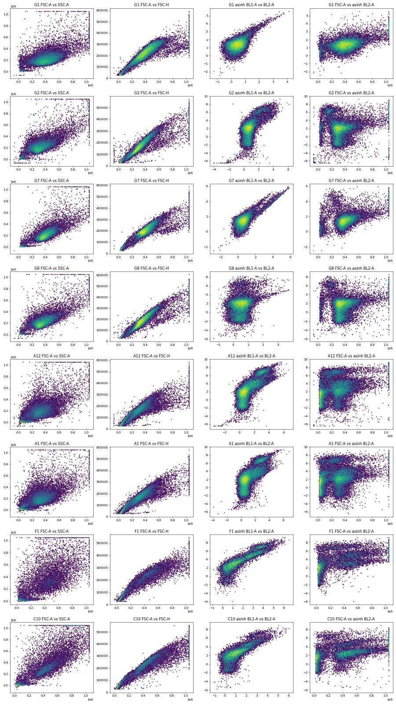
22
tool call · Bash
cd /task; python3 -c "
import pickle, numpy as np
d=pickle.load(open('/task/work/raw.pkl','rb'))
for w in ['G1','G7','G8','G2']:
df=d[w]
fsc=(df['FSC-A']>100000)&(df['FSC-A']<1048575)
b1=df['BL1-A'].values; b2=df['BL2-A'].values
print(w, 'n',len(df),'fsc-ok',fsc.sum())
for lo,hi in [(0,300),(300,1000),(1000,3000),(3000,10000),(10000,1e7)]:
m=fsc.values&(b1>=lo)&(b1<hi)
if m.sum()>5: print(' BL1 %g-%g n=%d medBL1=%.0f medBL2=%.0f ratio=%.3f'%(lo,hi,m.sum(),np.median(b1[m]),np.median(b2[m]),np.median(b2[m]/b1[m])))
for lo,hi in [(0,1000),(1000,5000),(5000,20000),(20000,100000),(100000,1e7)]:
m=fsc.values&(b2>=lo)&(b2<hi)
if m.sum()>5: print(' BL2 %g-%g n=%d medBL2=%.0f medBL1=%.0f ratio=%.4f'%(lo,hi,m.sum(),np.median(b2[m]),np.median(b1[m]),np.median(b1[m]/b2[m])))
"23
tool output
<string>:11: RuntimeWarning: divide by zero encountered in divide <string>:14: RuntimeWarning: divide by zero encountered in divide G1 n 26210 fsc-ok 24619 BL1 0-300 n=20796 medBL1=104 medBL2=376 ratio=3.805 BL1 300-1000 n=710 medBL1=367 medBL2=1514 ratio=3.831 BL1 1000-3000 n=52 medBL1=1242 medBL2=5984 ratio=4.704 BL1 3000-10000 n=9 medBL1=3530 medBL2=14942 ratio=4.311 BL2 0-1000 n=23043 medBL2=360 medBL1=89 ratio=0.2355 BL2 1000-5000 n=1265 medBL2=1338 medBL1=273 ratio=0.1886 BL2 5000-20000 n=55 medBL2=6734 medBL1=1345 ratio=0.2076 G7 n 24019 fsc-ok 22657 BL1 0-300 n=18164 medBL1=130 medBL2=387 ratio=3.095 BL1 300-1000 n=1922 medBL1=393 medBL2=891 ratio=2.087 BL1 1000-3000 n=444 medBL1=1720 medBL2=2208 ratio=1.129 BL1 3000-10000 n=457 medBL1=5234 medBL2=5293 ratio=0.953 BL1 10000-1e+07 n=193 medBL1=12876 medBL2=12231 ratio=0.932 BL2 0-1000 n=20164 medBL2=388 medBL1=127 ratio=0.3216 BL2 1000-5000 n=1779 medBL2=1489 medBL1=547 ratio=0.3428 BL2 5000-20000 n=467 medBL2=8278 medBL1=8433 ratio=1.0569 BL2 20000-100000 n=23 medBL2=24165 medBL1=26324 ratio=1.0715 G8 n 24323 fsc-ok 23178 BL1 0-300 n=20003 medBL1=116 medBL2=546 ratio=4.752 BL1 300-1000 n=929 medBL1=368 medBL2=1924 ratio=4.583 BL1 1000-3000 n=63 medBL1=1444 medBL2=7312 ratio=4.725 BL2 0-1000 n=11552 medBL2=478 medBL1=104 ratio=0.2184 BL2 1000-5000 n=5494 medBL2=1451 medBL1=135 ratio=0.0842 BL2 5000-20000 n=643 medBL2=8506 medBL1=155 ratio=0.0178 BL2 20000-100000 n=640 medBL2=47224 medBL1=132 ratio=0.0026 BL2 100000-1e+07 n=133 medBL2=147180 medBL1=143 ratio=0.0010 G2 n 24654 fsc-ok 22718 BL1 0-300 n=17230 medBL1=139 medBL2=582 ratio=4.313 BL1 300-1000 n=2952 medBL1=420 medBL2=3129 ratio=6.972 BL1 1000-3000 n=977 medBL1=1727 medBL2=50355 ratio=23.349 BL1 3000-10000 n=447 medBL1=4110 medBL2=43677 ratio=9.684 BL1 10000-1e+07 n=14 medBL1=12528 medBL2=120312 ratio=6.821 BL2 0-1000 n=9374 medBL2=490 medBL1=132 ratio=0.2740 BL2 1000-5000 n=6340 medBL2=1614 medBL1=181 ratio=0.1014 BL2 5000-20000 n=1261 medBL2=8535 medBL1=462 ratio=0.0557 BL2 20000-100000 n=1342 medBL2=50128 medBL1=1038 ratio=0.0193 BL2 100000-1e+07 n=329 medBL2=132904 medBL1=2035 ratio=0.0134
25
tool call · Bash
cd /task; cat > scripts/qc_time.py <<'EOF'
import pickle, numpy as np, pandas as pd
d=pickle.load(open('/task/work/raw.pkl','rb'))
rows=[]
for w,df in d.items():
t=df['Time'].values
tmax=t.max()
bins=np.arange(0, np.ceil(tmax)+1, 1.0)
h,_=np.histogram(t,bins)
h=h[:-1] if len(h)>2 else h # drop last partial
core=h[1:] if len(h)>3 else h
fsc=df['FSC-A'].values; ssc=df['SSC-A'].values
# median FSC per quarter
q=np.array_split(np.argsort(t),4)
medf=[np.median(fsc[i]) for i in q]
rows.append(dict(well=w,n=len(df),tmax=round(tmax,2),rate_min=core.min(),rate_max=core.max(),rate_med=np.median(core),cv=round(core.std()/core.mean(),3),
first_bin=h[0], fsc_sat=round(100*(fsc>=1048575).mean(),2), ssc_sat=round(100*(ssc>=1048575).mean(),2),
bl2_sat=round(100*(df['BL2-A'].values>=1048575).mean(),3), bl1_sat=round(100*(df['BL1-A'].values>=1048575).mean(),3),
medfsc_q=[int(x) for x in medf], neg_bl2=round(100*(df['BL2-A']< -1000).mean(),2), debris=round(100*(fsc<100000).mean(),1)))
r=pd.DataFrame(rows)
pd.set_option('display.width',250); pd.set_option('display.max_rows',200)
print(r.to_string())
r.to_csv('/task/work/qc_time.csv',index=False)
EOF
python3 scripts/qc_time.py26
tool output
well n tmax rate_min rate_max rate_med cv first_bin fsc_sat ssc_sat bl2_sat bl1_sat medfsc_q neg_bl2 debris 0 A1 31328 15.98 1560 2420 1985.0 0.118 1779 0.85 0.77 0.013 0.0 [268589, 265523, 285984, 270371] 1.40 30.1 1 A2 40169 16.71 1932 3017 2356.0 0.130 2060 0.57 0.69 0.000 0.0 [295027, 294941, 303584, 297419] 0.69 23.8 2 A3 47337 16.85 2376 3546 2737.0 0.131 2513 0.43 0.61 0.000 0.0 [257627, 266644, 278460, 266107] 0.42 27.5 3 A4 33079 16.63 1649 2640 1958.0 0.140 1520 0.95 1.08 0.018 0.0 [273157, 278876, 289751, 288423] 1.31 24.4 4 A5 34963 16.75 1724 2795 2058.0 0.155 1640 0.70 0.82 0.003 0.0 [271044, 274103, 280805, 271349] 0.95 24.4 5 A6 33431 15.66 1743 2746 2097.0 0.142 1766 1.14 0.80 0.006 0.0 [349570, 351331, 359796, 343881] 0.51 19.9 6 A7 36445 16.84 1606 2797 2144.0 0.147 1553 0.82 0.64 0.000 0.0 [332437, 340783, 347732, 342999] 0.22 19.8 7 A8 22867 15.83 1183 1955 1463.0 0.152 1009 1.51 1.30 0.048 0.0 [354059, 351130, 363257, 343790] 0.91 20.7 8 A9 40034 16.67 1993 3179 2340.0 0.136 2071 0.92 0.79 0.010 0.0 [237050, 250934, 266543, 241821] 1.18 32.1 9 A10 42298 16.65 2077 3268 2536.0 0.139 1986 0.95 0.72 0.000 0.0 [271023, 275859, 286434, 270765] 1.29 26.6 10 A11 43376 16.62 2443 3124 2647.0 0.070 2455 0.85 0.74 0.000 0.0 [263483, 274619, 272815, 282878] 1.01 28.1 11 A12 30724 15.96 1572 2256 1979.5 0.079 1822 0.97 0.90 0.016 0.0 [239674, 251741, 253689, 266069] 1.18 31.2 12 B1 18757 16.70 1022 1522 1134.0 0.127 901 0.28 0.39 0.037 0.0 [263207, 294159, 290218, 292088] 0.38 22.1 13 B2 32477 15.83 1646 2665 2031.0 0.155 1478 0.36 0.13 0.000 0.0 [281416, 304387, 321605, 297200] 0.21 24.6 14 B3 40067 16.74 1967 3156 2348.0 0.131 2043 0.27 0.09 0.000 0.0 [274229, 299332, 312181, 290034] 0.11 27.8 15 B4 19965 15.88 772 1740 1219.5 0.200 965 0.63 1.00 0.321 0.0 [238860, 264314, 290192, 260874] 1.35 28.2 16 B5 17852 16.77 877 1447 1074.0 0.149 904 0.18 0.12 0.000 0.0 [273717, 283421, 297428, 294839] 0.23 19.6 17 B6 31705 16.66 1642 2539 1903.0 0.142 1736 0.35 0.14 0.000 0.0 [286108, 296876, 311518, 287930] 0.11 24.1 18 B7 35417 15.88 1708 2886 2169.5 0.157 1805 0.32 0.11 0.000 0.0 [252611, 287565, 304746, 276555] 0.17 26.8 19 B8 26222 16.72 1470 1992 1563.0 0.096 1436 0.47 0.29 0.011 0.0 [247839, 277134, 278468, 276770] 0.38 30.4 20 B9 34411 15.81 1790 2723 2090.5 0.134 1873 0.59 0.24 0.003 0.0 [254633, 272664, 288027, 263370] 0.43 29.9 21 B10 40098 16.70 2084 3187 2395.0 0.137 2187 0.60 0.33 0.002 0.0 [257537, 277240, 296186, 264017] 0.27 29.7 22 B11 41005 16.83 2175 3052 2483.0 0.099 2326 0.44 0.13 0.000 0.0 [233968, 242491, 268767, 221361] 0.13 33.8 23 B12 31680 15.94 1622 2467 1941.5 0.116 1833 0.72 0.27 0.003 0.0 [160453, 192262, 207474, 156501] 0.27 40.9 24 C1 17681 16.52 707 1443 1126.0 0.180 811 2.99 3.63 0.011 0.0 [315896, 354386, 404089, 343758] 0.64 31.3 25 C2 25455 16.79 1116 2055 1502.0 0.158 1191 1.88 3.58 0.000 0.0 [154887, 254682, 318661, 177582] 0.33 39.8 26 C3 21098 15.90 1050 1868 1289.5 0.197 959 3.05 3.75 0.000 0.0 [340260, 386767, 411896, 359569] 0.16 31.5 27 C4 18113 16.82 849 1537 1022.0 0.185 878 1.99 4.10 0.022 0.0 [173307, 255099, 330612, 234935] 0.43 36.5 28 C5 18729 16.83 890 1510 1145.0 0.163 1085 1.83 4.28 0.021 0.0 [173432, 242032, 319921, 146276] 0.44 38.1 29 C6 21716 16.47 904 1796 1335.0 0.166 1192 1.98 3.81 0.005 0.0 [191923, 283853, 348307, 173198] 0.21 38.9 30 C7 22874 16.59 980 1974 1365.0 0.180 1184 1.73 3.59 0.000 0.0 [210509, 294292, 351437, 212635] 0.08 38.9 31 C8 18604 16.60 928 1556 1094.0 0.154 1046 1.73 3.68 0.016 0.0 [199584, 282457, 327414, 187330] 0.41 36.7 32 C9 22962 15.84 1138 1940 1379.0 0.167 1213 3.32 4.42 0.004 0.0 [323115, 356854, 383981, 324544] 0.45 28.5 33 C10 15794 16.53 715 1358 972.0 0.189 911 3.70 5.26 0.000 0.0 [393155, 404467, 426019, 379523] 0.35 25.3 34 C11 19854 16.48 671 1725 1193.0 0.222 1219 5.31 5.38 0.000 0.0 [401585, 411145, 434785, 397979] 0.44 22.9 35 C12 23104 16.73 1007 1726 1387.0 0.152 1322 2.61 3.51 0.000 0.0 [327455, 339354, 360879, 305489] 0.53 30.7 36 D1 29965 16.62 1150 2450 1860.0 0.178 1591 0.78 0.79 0.000 0.0 [266801, 277944, 287660, 271463] 0.68 29.0 37 D2 42557 16.82 1839 … [6,716 more characters not shown]
28
tool call · Bash
cd /task; cat > scripts/qc_time_plot.py <<'EOF'
import pickle, numpy as np, pandas as pd, matplotlib; matplotlib.use('Agg')
import matplotlib.pyplot as plt
d=pickle.load(open('/task/work/raw.pkl','rb'))
wells=list(d.keys())
fig,axs=plt.subplots(10,8,figsize=(32,30)); axs=axs.ravel()
for i,w in enumerate(wells):
df=d[w]; t=df['Time'].values
bins=np.arange(0,t.max()+0.25,0.25)
h,_=np.histogram(t,bins)
ax=axs[i]; ax.plot(bins[:-1],h*4,'k-',lw=1)
ax2=ax.twinx()
# median FSC per bin
idx=np.digitize(t,bins)-1
med=[np.median(df['FSC-A'].values[idx==k]) if (idx==k).sum()>20 else np.nan for k in range(len(bins)-1)]
ax2.plot(bins[:-1],med,'r-',lw=1); ax2.set_ylim(0,600000)
ax.set_title(w); ax.set_ylim(0,4500)
plt.tight_layout(); plt.savefig('/task/work/time_traces.png',dpi=40)
EOF
python3 scripts/qc_time_plot.py29
tool call · Read
{
"file_path": "/task/work/time_traces.png"
}30
tool output
(Bash completed with no output)
31
tool output
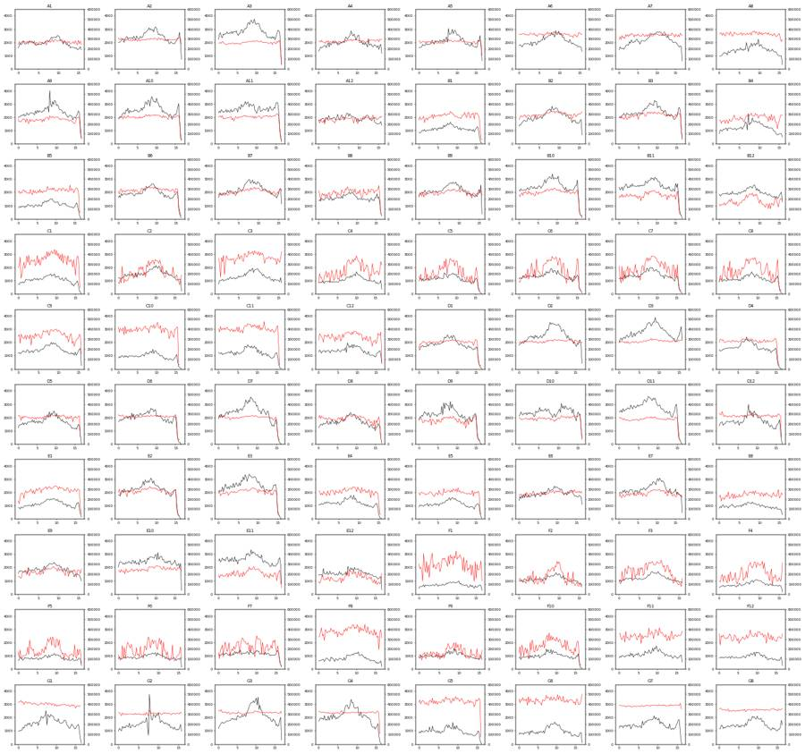
33
tool call · Bash
cd /task; python3 -c "
import pickle, numpy as np
d=pickle.load(open('/task/work/raw.pkl','rb'))
for w in ['A3','A5','B6','D4','D7','E2','E3','F8','G5','C11','A12','G2']:
df=d[w]; t=df['Time'].values; tmax=t.max()
tail=t>tmax-0.75
f=df['FSC-A'].values
print(w,'tmax %.2f'%tmax,'tail n',tail.sum(),'tail frac %.3f'%tail.mean(),'tail debris frac %.2f'%(f[tail]<100000).mean(),'overall debris %.2f'%(f<100000).mean())
"34
tool output
A3 tmax 16.85 tail n 1540 tail frac 0.033 tail debris frac 0.31 overall debris 0.27 A5 tmax 16.75 tail n 1248 tail frac 0.036 tail debris frac 0.27 overall debris 0.24 B6 tmax 16.66 tail n 228 tail frac 0.007 tail debris frac 0.65 overall debris 0.24 D4 tmax 16.80 tail n 42 tail frac 0.002 tail debris frac 1.00 overall debris 0.26 D7 tmax 16.37 tail n 70 tail frac 0.002 tail debris frac 0.87 overall debris 0.25 E2 tmax 16.50 tail n 118 tail frac 0.003 tail debris frac 0.91 overall debris 0.27 E3 tmax 16.09 tail n 125 tail frac 0.003 tail debris frac 0.93 overall debris 0.29 F8 tmax 16.81 tail n 440 tail frac 0.032 tail debris frac 0.29 overall debris 0.22 G5 tmax 16.42 tail n 169 tail frac 0.011 tail debris frac 0.27 overall debris 0.14 C11 tmax 16.48 tail n 63 tail frac 0.003 tail debris frac 0.94 overall debris 0.23 A12 tmax 15.96 tail n 1226 tail frac 0.040 tail debris frac 0.29 overall debris 0.31 G2 tmax 15.90 tail n 1048 tail frac 0.043 tail debris frac 0.06 overall debris 0.06
36
tool call · Bash
cd /task; cat > scripts/explore2.py <<'EOF'
import pickle, numpy as np, matplotlib; matplotlib.use('Agg')
import matplotlib.pyplot as plt
d=pickle.load(open('/task/work/raw.pkl','rb'))
wells=['G1','G2','G3','G5','A12','B12','C12','D9','E9','F9','F1','C11']
fig,axs=plt.subplots(3,4,figsize=(20,15)); axs=axs.ravel()
for i,w in enumerate(wells):
df=d[w]
axs[i].hexbin(df['FSC-A']/1e3,df['SSC-A']/1e3,gridsize=200,bins='log',cmap='jet',mincnt=1,extent=(0,1060,0,1060))
axs[i].set_title(w); axs[i].grid(alpha=.3)
axs[i].set_xticks(range(0,1100,100)); axs[i].set_yticks(range(0,1100,100))
plt.tight_layout(); plt.savefig('/task/work/fsc_ssc.png',dpi=45)
EOF
python3 scripts/explore2.py37
tool call · Read
{
"file_path": "/task/work/fsc_ssc.png"
}38
tool output
(Bash completed with no output)
39
tool output
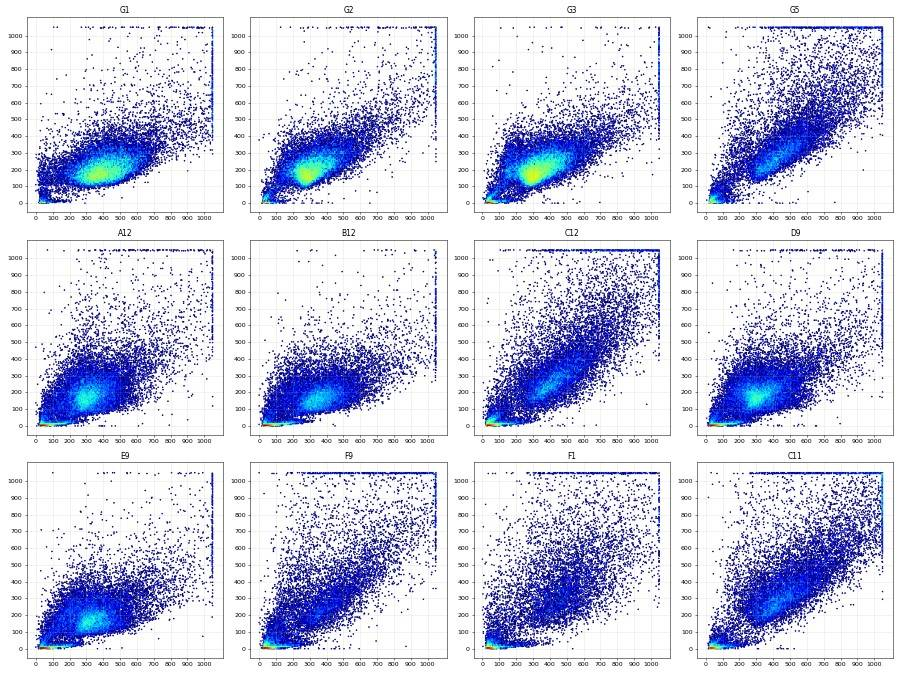
41
thinking
No clogs or dry runs show up in the time traces, and I'm now checking a likely E1/E3 sample swap in the untreated control wells G3–G6 quantitatively.
42
tool call · Bash
cd /task; cat > scripts/swapcheck.py <<'EOF'
import pickle, numpy as np, pandas as pd
from scipy.stats import ks_2samp
d=pickle.load(open('/task/work/raw.pkl','rb'))
lay=pd.read_csv('/task/inputs/plate_layout.csv').set_index('well')
def cells(df):
f=df['FSC-A'].values; s=df['SSC-A'].values
m=(f>120000)&(f<1048575)&(s>20000)&(s<1048575)
return df[m]
feat=[]
for w,df in d.items():
c=cells(df)
f=df['FSC-A'].values; s=df['SSC-A'].values
feat.append(dict(well=w,line=lay.loc[w,'cell_line'],cm=lay.loc[w,'conditioned_media'][:7],camp=lay.loc[w,'camptothecin'],
med_fsc=np.median(c['FSC-A']),med_ssc=np.median(c['SSC-A']),ratio=np.median(c['SSC-A']/c['FSC-A']),
p90_fsc=np.percentile(c['FSC-A'],90),fsat=100*(f>=1048575).mean(),ssat=100*(s>=1048575).mean(),
fsc_w=np.median(c['FSC-W']), n=len(df)))
F=pd.DataFrame(feat)
pd.set_option('display.width',250); pd.set_option('display.max_rows',200)
print(F.groupby('line')[['med_fsc','med_ssc','ratio','p90_fsc','fsat','ssat','fsc_w','n']].describe().T.round(2).to_string())
print(F[F.well.str.startswith('G')|F.well.isin(['A12','D12','B12','E12','C12','F12'])].round(3).to_string())
F.to_csv('/task/work/scatter_feat.csv',index=False)
EOF
python3 scripts/swapcheck.py43
tool output
line E1 E3 WT
med_fsc count 26.00 26.00 28.00
mean 353195.83 431316.12 336165.16
std 32988.59 39742.31 31360.17
min 321814.00 330729.00 304694.00
25% 337234.25 416451.25 317670.62
50% 345142.00 436373.50 324772.50
75% 356869.75 451557.62 334775.00
max 459166.00 500614.00 407536.50
med_ssc count 26.00 26.00 28.00
mean 203328.27 341735.67 204022.20
std 39150.84 50448.66 7860.93
min 168907.00 206873.50 186598.00
25% 183731.12 326078.25 198475.12
50% 191563.50 353506.25 203712.00
75% 209961.12 367888.62 209127.00
max 330153.00 450847.00 219302.00
ratio count 26.00 26.00 28.00
mean 0.56 0.77 0.59
std 0.06 0.09 0.05
min 0.47 0.60 0.50
25% 0.51 0.71 0.57
50% 0.54 0.77 0.59
75% 0.61 0.83 0.63
max 0.70 0.96 0.68
p90_fsc count 26.00 26.00 28.00
mean 539176.98 693042.83 514365.29
std 64237.93 66091.90 35623.42
min 494288.90 501952.60 470451.10
25% 512094.08 672609.95 492980.20
50% 519533.25 702187.50 505714.25
75% 536473.15 725406.35 519376.35
max 772268.40 786191.60 601200.60
fsat count 26.00 26.00 28.00
mean 0.93 2.52 1.02
std 1.48 1.20 0.40
min 0.18 1.14 0.43
25% 0.35 1.60 0.76
50% 0.51 1.99 0.95
75% 0.71 3.25 1.17
max 6.86 5.31 2.11
ssat count 26.00 26.00 28.00
mean 0.80 4.05 0.92
std 1.66 1.60 0.26
min 0.09 0.54 0.61
25% 0.13 3.51 0.73
50% 0.24 3.74 0.82
75% 0.53 4.43 1.08
max 6.62 8.88 1.57
fsc_w count 26.00 26.00 28.00
mean 145.58 148.08 139.14
std 2.34 7.17 5.80
min 140.00 130.00 128.00
25% 144.00 146.25 137.00
50% 145.00 150.50 138.00
75% 147.00 152.75 141.25
max 150.00 157.00 154.00
n count 26.00 26.00 28.00
mean 29288.46 19496.65 33976.00
std 9446.18 5744.95 7176.02
min 15706.00 11614.00 22867.00
25% 18858.75 15987.00 28207.75
50% 31692.50 18666.50 33255.00
75% 37682.75 21561.50 40067.75
max 43387.00 35885.00 47337.00
well line cm camp med_fsc med_ssc ratio p90_fsc fsat ssat fsc_w n
11 A12 WT no cond DMSO 321058.0 191811.0 0.583 508643.5 0.967 0.902 136.0 30724
23 B12 E1 no cond DMSO 361789.0 178705.0 0.480 555714.2 0.720 0.265 148.0 31680
35 C12 E3 no cond DMSO 437201.0 298742.0 0.672 707984.0 2.610 3.515 149.0 23104
47 D12 WT no cond DMSO 311452.0 209126.0 0.639 489711.0 1.435 1.297 130.0 28999
59 E12 E1 no cond DMSO 321814.0 183477.0 0.547 508241.5 0.919 0.634 140.0 26670
71 F12 E3 no cond DMSO 410490.0 310099.0 0.709 703911.2 2.869 4.070 137.0 15652
72 G1 WT no cond no treatment 407536.5 203712.0 0.503 583323.0 1.717 1.057 145.0 26210
73 G2 WT no cond no treatment 313650.5 209130.0 0.647 495087.2 2.105 1.395 128.0 24654
74 G3 E3 no cond no treatment 330729.0 207506.0 0.602 501952.6 1.184 0.538 130.0 35885
75 G4 E3 no cond no treatment 331877.0 206873.5 0.597 504148.2 1.143 0.541 131.0 34209
76 G5 E1 no cond no treatment 459166.0 325665.0 0.695 725257.0 4.724 6.084 150.0 15961
77 G6 E1 no cond no treatment 457927.0 330153.0 0.697 772268.4 6.855 6.623 146.0 16761
78 G7 WT no cond not stated 391505.0 201182.0 0.511 531721.0 1.124 1.087 154.0 24019
79 G8 WT no cond not stated 348370.0 208314.0 0.580 516446.8 1.266 1.094 141.0 2432345
tool call · Bash
cd /task; python3 -c "
import pandas as pd
F=pd.read_csv('work/scatter_feat.csv')
F['grp']=F.line+'_'+F.well.str[0].map(lambda r:'G' if r=='G' else 'AF')
print(F.groupby('grp')[['med_fsc','med_ssc','ratio','fsat','ssat','n']].agg(['min','median','max']).round(2).T.to_string())
"46
tool output
grp E1_AF E1_G E3_AF E3_G WT_AF WT_G
med_fsc min 321814.00 457927.00 392339.00 330729.00 304694.00 313650.50
median 342646.75 458546.50 438446.00 331303.00 323928.00 369937.50
max 365521.00 459166.00 500614.00 331877.00 404611.50 407536.50
med_ssc min 168907.00 325665.00 298742.00 206873.50 186598.00 201182.00
median 190344.50 327909.00 354769.75 207189.75 203357.50 206013.00
max 219651.00 330153.00 450847.00 207506.00 219302.00 209130.00
ratio min 0.47 0.70 0.67 0.60 0.50 0.50
median 0.53 0.70 0.79 0.60 0.59 0.55
max 0.63 0.70 0.96 0.60 0.68 0.65
fsat min 0.18 4.72 1.21 1.14 0.43 1.12
median 0.47 5.79 2.09 1.16 0.89 1.49
max 1.08 6.86 5.31 1.18 1.61 2.11
ssat min 0.09 6.08 3.25 0.54 0.61 1.06
median 0.24 6.35 3.78 0.54 0.79 1.09
max 1.11 6.62 8.88 0.54 1.57 1.40
n min 15706.00 15961.00 11614.00 34209.00 22867.00 24019.00
median 32023.50 16361.00 18436.00 35047.00 35274.00 24488.50
max 43387.00 16761.00 25455.00 35885.00 47337.00 26210.0048
tool call · Bash
cd /task; python3 -c "
import pickle, numpy as np
d=pickle.load(open('/task/work/raw.pkl','rb'))
def cellsing(df):
f=df['FSC-A'].values; s=df['SSC-A'].values; h=df['FSC-H'].values
m=(f>120000)&(f<1048575)&(s>30000)&(s<1048575)
r=h/np.maximum(f,1)
return df[m]
for w in ['G7','G1','G8','G2']:
c=cellsing(d[w]); b1=c['BL1-A'].values; b2=c['BL2-A'].values
print(w, 'BL1 pct 50/99/99.5/99.9', np.percentile(b1,[50,99,99.5,99.9]).round(0), 'BL2 pct', np.percentile(b2,[50,99,99.5,99.9]).round(0))
c=cellsing(d['G7']); b1=c['BL1-A'].values; b2=c['BL2-A'].values
neg=b1<400; n1=np.median(b1[neg]); n2=np.median(b2[neg])
for lo,hi in [(2000,5000),(5000,10000),(10000,40000),(2000,40000)]:
p=(b1>lo)&(b1<hi)
s=(b2[p]-n2)/(b1[p]-n1)
A=np.vstack([b1[p],np.ones(p.sum())]).T; coef=np.linalg.lstsq(A,b2[p],rcond=None)[0]
print(lo,hi,p.sum(),'median spill %.3f'%np.median(s),'IQR',np.percentile(s,[25,75]).round(3),'lsq slope %.3f int %.0f'%tuple(coef))
c=cellsing(d['G8']); b1=c['BL1-A'].values; b2=c['BL2-A'].values
neg=b2<1000; n1=np.median(b1[neg]); n2=np.median(b2[neg])
p=b2>20000; s=(b1[p]-n1)/(b2[p]-n2); print('BL2->BL1', p.sum(), np.median(s), np.percentile(s,[25,75]))
"49
tool output
G7 BL1 pct 50/99/99.5/99.9 [ 139. 8874. 12021. 21686.] BL2 pct [ 413. 8310. 11276. 19802.] G1 BL1 pct 50/99/99.5/99.9 [ 94. 404. 501. 896.] BL2 pct [ 372. 1947. 2518. 4385.] G8 BL1 pct 50/99/99.5/99.9 [111. 445. 539. 870.] BL2 pct [ 556. 73773. 101293. 208987.] G2 BL1 pct 50/99/99.5/99.9 [ 159. 3948. 5100. 8350.] BL2 pct [ 744. 110714. 145114. 271547.] 2000 5000 330 median spill 0.914 IQR [0.844 1.026] lsq slope 0.776 int 893 5000 10000 241 median spill 0.897 IQR [0.861 0.943] lsq slope 0.880 int 491 10000 40000 182 median spill 0.911 IQR [0.885 0.935] lsq slope 0.935 int -38 2000 40000 754 median spill 0.910 IQR [0.861 0.96 ] lsq slope 0.907 int 394 BL2->BL1 716 0.000494944144282565 [-0.00063297 0.00186434]
51
tool call · Bash
cd /task; cat > scripts/explore3.py <<'EOF'
import pickle, numpy as np, matplotlib; matplotlib.use('Agg')
import matplotlib.pyplot as plt
d=pickle.load(open('/task/work/raw.pkl','rb'))
wells=['G1','G2','G5','A12','B12','C12','A9','B9','C9','F1','D11','E8']
fig,axs=plt.subplots(3,4,figsize=(20,15)); axs=axs.ravel()
for i,w in enumerate(wells):
df=d[w]; f=df['FSC-A'].values; s=df['SSC-A'].values
m=(f>120000)&(f<1048575)&(s>30000)&(s<1048575)
axs[i].hexbin(f[m]/1e3,df['FSC-H'].values[m]/1e3,gridsize=200,bins='log',cmap='jet',mincnt=1,extent=(100,1050,0,600))
axs[i].set_title(w); axs[i].grid(alpha=.3); axs[i].set_xticks(range(100,1100,100))
xs=np.array([100,1050]);
for k in [0.38,0.45,0.75]: axs[i].plot(xs,xs*k,'k--',lw=.8)
plt.tight_layout(); plt.savefig('/task/work/singlets.png',dpi=45)
EOF
python3 scripts/explore3.py52
tool call · Read
{
"file_path": "/task/work/singlets.png"
}53
tool output
(Bash completed with no output)
54
tool output
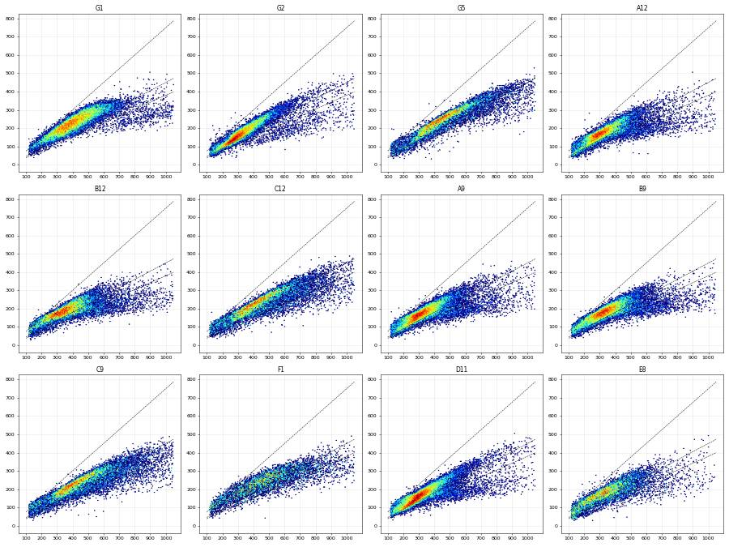
56
tool call · Bash
cd /task; python3 -c "
import pickle, numpy as np
d=pickle.load(open('/task/work/raw.pkl','rb'))
F=[];H=[];W=[]
for w,df in d.items():
if w=='G1': pass
f=df['FSC-A'].values; s=df['SSC-A'].values
m=(f>120000)&(f<1048575)&(s>30000)&(s<1048575)
F.append(f[m]);H.append(df['FSC-H'].values[m]);W.append(df['FSC-W'].values[m])
F=np.concatenate(F);H=np.concatenate(H);W=np.concatenate(W)
r=H/F
for lo in range(100000,1050000,50000):
m=(F>=lo)&(F<lo+50000)
rr=r[m]
# mode via histogram
h,e=np.histogram(rr,bins=100,range=(0.2,1.0)); mode=e[np.argmax(h)]+0.004
print(lo, m.sum(), 'mode %.3f'%mode, 'pct5/25/50/75/95', np.percentile(rr,[5,25,50,75,95]).round(3), 'W pct', np.percentile(W[m],[5,50,95]).round(0))
"57
tool output
100000 31434 mode 0.660 pct5/25/50/75/95 [0.397 0.538 0.647 0.753 0.867] W pct [ 85. 108. 132.] 150000 75157 mode 0.660 pct5/25/50/75/95 [0.408 0.512 0.604 0.692 0.803] W pct [ 95. 115. 138.] 200000 124547 mode 0.492 pct5/25/50/75/95 [0.426 0.499 0.566 0.637 0.717] W pct [106. 121. 144.] 250000 223445 mode 0.580 pct5/25/50/75/95 [0.441 0.505 0.553 0.599 0.652] W pct [113. 130. 149.] 300000 262124 mode 0.548 pct5/25/50/75/95 [0.44 0.502 0.543 0.58 0.627] W pct [119. 140. 156.] 350000 219394 mode 0.540 pct5/25/50/75/95 [0.419 0.485 0.529 0.568 0.613] W pct [123. 148. 164.] 400000 162385 mode 0.548 pct5/25/50/75/95 [0.39 0.464 0.518 0.557 0.601] W pct [127. 153. 173.] 450000 113890 mode 0.540 pct5/25/50/75/95 [0.361 0.443 0.506 0.546 0.588] W pct [130. 157. 183.] 500000 75934 mode 0.532 pct5/25/50/75/95 [0.331 0.419 0.49 0.534 0.574] W pct [133. 161. 198.] 550000 49975 mode 0.524 pct5/25/50/75/95 [0.306 0.396 0.473 0.519 0.558] W pct [136. 164. 217.] 600000 34005 mode 0.500 pct5/25/50/75/95 [0.287 0.37 0.451 0.502 0.544] W pct [139. 168. 239.] 650000 23899 mode 0.476 pct5/25/50/75/95 [0.274 0.349 0.429 0.486 0.531] W pct [142. 172. 256.] 700000 17387 mode 0.476 pct5/25/50/75/95 [0.262 0.329 0.408 0.469 0.521] W pct [144. 177. 272.] 750000 13021 mode 0.308 pct5/25/50/75/95 [0.249 0.315 0.389 0.455 0.51 ] W pct [148. 182. 284.] 800000 9809 mode 0.460 pct5/25/50/75/95 [0.24 0.305 0.371 0.442 0.498] W pct [150. 187. 294.] 850000 7277 mode 0.324 pct5/25/50/75/95 [0.229 0.296 0.359 0.429 0.489] W pct [154. 192. 304.] 900000 5617 mode 0.308 pct5/25/50/75/95 [0.223 0.285 0.346 0.418 0.477] W pct [156. 198. 315.] 950000 4249 mode 0.308 pct5/25/50/75/95 [0.215 0.277 0.334 0.41 0.469] W pct [159. 204. 326.] 1000000 3345 mode 0.284 pct5/25/50/75/95 [0.209 0.271 0.326 0.401 0.458] W pct [164. 208. 338.]
59
tool call · Bash
cd /task; python3 -c "
import flowkit as fk, inspect
print(fk.__version__)
print(inspect.signature(fk.transforms.LogicleTransform.__init__))
print(inspect.signature(fk.Matrix.__init__))
print(inspect.signature(fk.GatingStrategy.add_transform))
print(inspect.signature(fk.GatingStrategy.add_comp_matrix))
print(inspect.signature(fk.GatingStrategy.add_gate))
print(inspect.signature(fk.Dimension.__init__))
print(inspect.signature(fk.gates.PolygonGate.__init__))
print(inspect.signature(fk.gates.RectangleGate.__init__))
print(inspect.signature(fk.GatingStrategy.gate_sample))
print([m for m in dir(fk.GatingStrategy) if not m.startswith('_')])
"60
tool output
1.2.3 (self, param_t, param_w, param_m, param_a) (self, spill_data_or_file, detectors, fluorochromes=None, null_channels=None) (self, transform_id, transform) (self, matrix_id, matrix) (self, gate, gate_path, sample_id=None) (self, dimension_id, compensation_ref='uncompensated', transformation_ref=None, range_min=None, range_max=None) (self, gate_name, dimensions, vertices, use_complement=False) (self, gate_name, dimensions, use_complement=False) (self, sample, cache_events=False, verbose=False) ['add_comp_matrix', 'add_gate', 'add_transform', 'clear_cache', 'export_gate_hierarchy_image', 'find_matching_gate_paths', 'gate_sample', 'get_child_gate_ids', 'get_comp_matrix', 'get_gate', 'get_gate_hierarchy', 'get_gate_ids', 'get_max_depth', 'get_parent_gate_id', 'get_root_gates', 'get_transform', 'is_custom_gate', 'remove_gate', 'rename_gate', 'resolver']
62
agent
Status: spillover measured from the single-stain controls (caspase dye → BL2 ≈ 0.91, SYTOX → BL1 ≈ 0.0005). Now I'm building a prototype FlowKit gating strategy with that compensation matrix.
63
tool call · Bash
cd /task; cat > scripts/proto.py <<'EOF'
import flowkit as fk, numpy as np, pandas as pd, pickle
spill = np.array([[1.0, 0.91],[0.0005, 1.0]])
mat = fk.Matrix(spill, ['BL1-A','BL2-A'], fluorochromes=['BL1-A','BL2-A'])
gs = fk.GatingStrategy()
gs.add_comp_matrix('spill_ss', mat)
gs.add_transform('logicle', fk.transforms.LogicleTransform(param_t=1048576, param_w=1.0, param_m=6.0, param_a=0))
dF=fk.Dimension('FSC-A','uncompensated'); dS=fk.Dimension('SSC-A','uncompensated')
cells=fk.gates.PolygonGate('cells',[dF,dS],[(110000,25000),(450000,25000),(1040000,200000),(1040000,1040000),(550000,1040000),(110000,400000)])
gs.add_gate(cells, ('root',))
s=fk.Sample('/task/inputs/raw/Caspase-assay-2-mlk_caspase_Group_G2.fcs')
r=gs.gate_sample(s)
print(r.report)
# comp events
s.apply_compensation(mat)
ev=s.get_events(source='comp')
print(s.pnn_labels, ev[:3])
xf=fk.transforms.LogicleTransform(param_t=1048576, param_w=1.0, param_m=6.0, param_a=0)
print(xf.apply(np.array([-1000,-100,0,100,1000,10000,100000,1048576.])))
EOF
python3 scripts/proto.py64
tool output
sample gate_path gate_name ... absolute_percent relative_percent level 0 G2.fcs (root,) cells ... 90.829074 90.829074 0 [1 rows x 10 columns] ['Time', 'FSC-A', 'SSC-A', 'BL1-A', 'BL2-A', 'FSC-H', 'SSC-H', 'BL1-H', 'BL2-H', 'FSC-W', 'SSC-W', 'BL1-W', 'BL2-W'] [[1.60000000e-02 6.10983000e+05 3.83447000e+05 2.14336023e+02 5.32795422e+03 1.58210000e+05 1.21022000e+05 1.07000000e+02 2.12900000e+03 2.40000000e+02 2.50000000e+02 0.00000000e+00 5.90000000e+01] [1.60000000e-02 2.48105000e+05 1.84165000e+05 1.12571220e+02 8.57560190e+02 1.22905000e+05 1.11662000e+05 1.26000000e+02 1.14200000e+03 1.29000000e+02 1.32000000e+02 0.00000000e+00 9.00000000e+00] [1.70000000e-02 4.38732000e+05 2.29201000e+05 1.84900630e+02 1.98740427e+02 2.38130000e+05 1.28649000e+05 1.39000000e+02 5.77000000e+02 1.51000000e+02 1.34000000e+02 0.00000000e+00 0.00000000e+00]] [-0.15489654 0.05042113 0.16666667 0.2829122 0.48822988 0.66225011 0.82980137 1. ]
66
tool call · Bash
cd /task; cat > scripts/helpers.py <<'EOF'
import numpy as np, pickle, flowkit as fk
from matplotlib.path import Path
SPILL = np.array([[1.0, 0.91],[0.0005, 1.0]])
CELLS = [(110000,25000),(450000,25000),(1040000,200000),(1040000,1040000),(550000,1040000),(110000,400000)]
SINGLETS = [(110000,42000),(300000,122000),(500000,195000),(700000,255000),(900000,310000),(900000,650000),(110000,150000)]
XF = fk.transforms.LogicleTransform(param_t=1048576, param_w=1.0, param_m=6.0, param_a=0)
def lg(x): return XF.apply(np.asarray(x,dtype=float))
def comp(df):
raw = df[['BL1-A','BL2-A']].values
c = raw @ np.linalg.inv(SPILL)
return c[:,0], c[:,1]
def inpoly(x,y,verts):
return Path(verts).contains_points(np.c_[x,y])
def gate_cs(df):
f=df['FSC-A'].values; s=df['SSC-A'].values; h=df['FSC-H'].values
m1=inpoly(f,s,CELLS); m2=m1 & inpoly(f,h,SINGLETS)
return m1,m2
EOF
cat > scripts/explore4.py <<'EOF'
import sys; sys.path.insert(0,'/task/scripts')
from helpers import *
import pickle, matplotlib; matplotlib.use('Agg'); import matplotlib.pyplot as plt
d=pickle.load(open('/task/work/raw.pkl','rb'))
wells=['G1','G7','G8','G2','A12','D12','B12','E12','C12','F12','A9','D9','B9','E9','C9','F9']
fig,axs=plt.subplots(4,4,figsize=(20,20)); axs=axs.ravel()
for i,w in enumerate(wells):
df=d[w]; m1,m2=gate_cs(df); b1,b2=comp(df)
axs[i].hexbin(lg(b1[m2]),lg(b2[m2]),gridsize=150,bins='log',cmap='jet',mincnt=1,extent=(0,1,0,1))
axs[i].set_title('%s cells %.0f%% singl %.0f%%'%(w,100*m1.mean(),100*m2.sum()/m1.sum()))
ticks=[0,100,1000,1e4,1e5,1e6]; axs[i].set_xticks(lg(ticks)); axs[i].set_xticklabels(['0','1e2','1e3','1e4','1e5','1e6'])
axs[i].set_yticks(lg(ticks)); axs[i].set_yticklabels(['0','1e2','1e3','1e4','1e5','1e6']); axs[i].grid(alpha=.3)
axs[i].set_xlabel('BL1-A comp (CellEvent casp3/7)'); axs[i].set_ylabel('BL2-A comp (SYTOX AADvanced)')
plt.tight_layout(); plt.savefig('/task/work/bl1bl2.png',dpi=45)
EOF
python3 scripts/explore4.py67
tool call · Read
{
"file_path": "/task/work/bl1bl2.png"
}68
tool output
(Bash completed with no output)
69
tool output
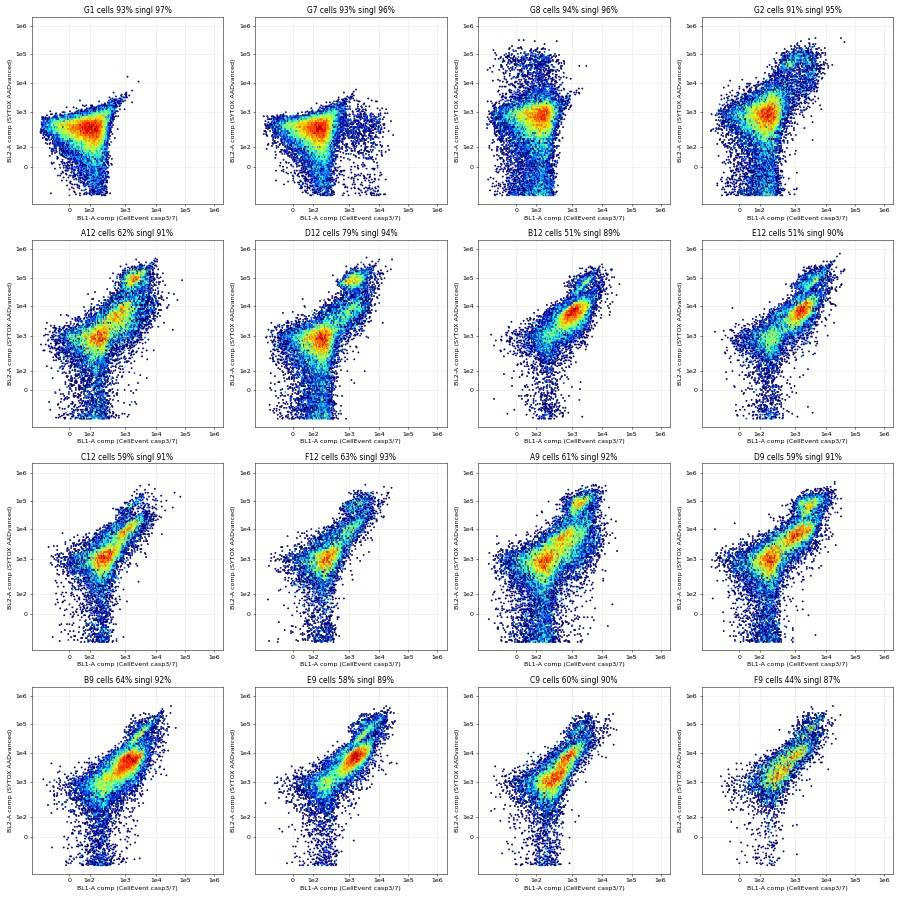
71
tool call · Bash
cd /task; cat > scripts/explore5.py <<'EOF'
import sys; sys.path.insert(0,'/task/scripts')
from helpers import *
import pickle, matplotlib; matplotlib.use('Agg'); import matplotlib.pyplot as plt
d=pickle.load(open('/task/work/raw.pkl','rb'))
wells=[w for w in d if w[0] in 'ABCDEFG']
fig,axs=plt.subplots(10,8,figsize=(32,40)); axs=axs.ravel()
for i,w in enumerate(wells):
df=d[w]; m1,m2=gate_cs(df); b1,b2=comp(df)
axs[i].hexbin(lg(b1[m2]),lg(b2[m2]),gridsize=100,bins='log',cmap='jet',mincnt=1,extent=(0,1,0,1))
axs[i].set_title(w,fontsize=16)
ticks=[0,1000,1e4,1e5]; axs[i].set_xticks(lg(ticks)); axs[i].set_yticks(lg(ticks)); axs[i].set_xticklabels([]); axs[i].set_yticklabels([]); axs[i].grid(alpha=.5)
plt.tight_layout(); plt.savefig('/task/work/bl1bl2_all.png',dpi=30)
EOF
python3 scripts/explore5.py72
tool call · Read
{
"file_path": "/task/work/bl1bl2_all.png"
}73
tool output
(Bash completed with no output)
74
tool output
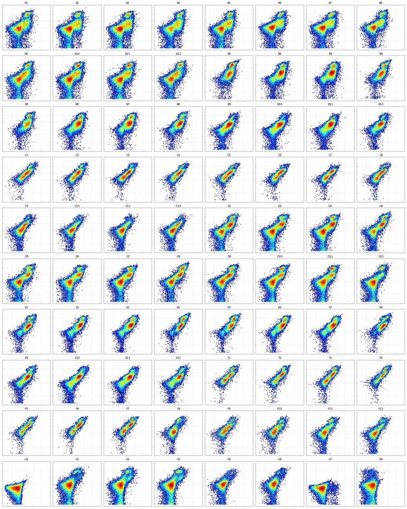
76
tool call · Bash
cd /task; cat > scripts/explore6.py <<'EOF'
import sys; sys.path.insert(0,'/task/scripts')
from helpers import *
import pickle, matplotlib; matplotlib.use('Agg'); import matplotlib.pyplot as plt
d=pickle.load(open('/task/work/raw.pkl','rb'))
groups={'WT DMSO noCM':['A12','D12'],'E1 DMSO noCM':['B12','E12'],'E3 DMSO noCM':['C12','F12'],'WT 10uM noCM':['A9','D9'],'E1 10uM noCM':['B9','E9'],'E3 10uM noCM':['C9','F9'],
'G1 unstained':['G1'],'G7 casp only':['G7'],'G8 SYTOX only':['G8'],'G2 WT untr':['G2'],'G3G4':['G3','G4'],'G5G6':['G5','G6']}
fig,axs=plt.subplots(1,2,figsize=(22,8))
bins=np.linspace(0,1,200)
for k,ws in groups.items():
b1s=[];b2s=[]
for w in ws:
df=d[w]; m1,m2=gate_cs(df); b1,b2=comp(df); b1s.append(b1[m2]); b2s.append(b2[m2])
b1=np.concatenate(b1s); b2=np.concatenate(b2s)
ls='--' if k.startswith('G') else '-'
axs[0].hist(lg(b1),bins,histtype='step',density=True,label=k,lw=1.5,ls=ls)
axs[1].hist(lg(b2),bins,histtype='step',density=True,label=k,lw=1.5,ls=ls)
for a,n in zip(axs,['BL1-A comp (casp)','BL2-A comp (SYTOX)']):
ticks=[0,100,300,1000,3000,1e4,3e4,1e5,3e5]; a.set_xticks(lg(ticks)); a.set_xticklabels([str(int(t)) for t in ticks]); a.set_xlabel(n); a.grid(alpha=.3); a.legend(fontsize=8)
plt.tight_layout(); plt.savefig('/task/work/hist1d.png',dpi=50)
EOF
python3 scripts/explore6.py77
tool call · Read
{
"file_path": "/task/work/hist1d.png"
}78
tool output
(Bash completed with no output)
79
tool output
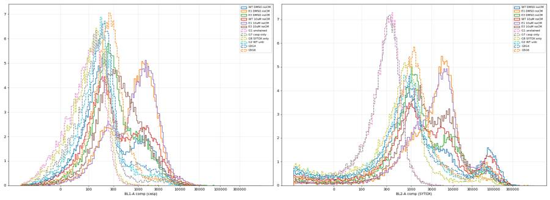
81
tool call · Bash
cd /task; python3 -c "
import sys; sys.path.insert(0,'/task/scripts')
from helpers import *
import pickle
d=pickle.load(open('/task/work/raw.pkl','rb'))
for w in ['G1','G7','G8','G2']:
df=d[w]; m1,m2=gate_cs(df); b1,b2=comp(df); b1=b1[m2]; b2=b2[m2]
print(w,'BL1c pct 95/99/99.5/99.9',np.percentile(b1,[95,99,99.5,99.9]).round(0),' BL2c pct',np.percentile(b2,[95,99,99.5,99.9]).round(0))
# valley search for BL1c in E1 wells and WT wells using pooled log hist
for name,ws in [('E1',['B12','E12','B9','E9','B10','E10']),('WT',['A12','D12','A9','D9']),('E3',['C12','F12','C9','F9'])]:
v1=[];v2=[]
for w in ws:
df=d[w]; m1,m2=gate_cs(df); b1,b2=comp(df); v1.append(b1[m2]); v2.append(b2[m2])
v1=np.concatenate(v1); v2=np.concatenate(v2)
h,e=np.histogram(lg(v1),bins=np.linspace(0.3,0.7,41));
print(name,'BL1 hist (lg 0.3-0.7):',h)
print(' edges->vals', [int(x) for x in XF.inverse(e[::5])])
h,e=np.histogram(lg(v2),bins=np.linspace(0.6,0.9,31)); print(name,'BL2 hist (lg .6-.9):',h); print(' edges->vals',[int(x) for x in XF.inverse(e[::5])])
"82
tool output
G1 BL1c pct 95/99/99.5/99.9 [247. 358. 430. 758.] BL2c pct [ 767. 1348. 1708. 2819.] G7 BL1c pct 95/99/99.5/99.9 [ 557. 5954. 8945. 14104.] BL2c pct [ 749. 1304. 1619. 2717.] G8 BL1c pct 95/99/99.5/99.9 [269. 401. 489. 812.] BL2c pct [ 4261. 60947. 83799. 147187.] G2 BL1c pct 95/99/99.5/99.9 [1014. 3512. 4432. 7474.] BL2c pct [ 31301. 94058. 113673. 182125.] E1 BL1 hist (lg 0.3-0.7): [1427 1685 1951 2266 2410 2756 2811 2673 2561 2299 2163 2120 2192 2470 2732 3277 3670 4052 4353 4609 4884 5010 5160 5139 4922 4296 3715 3300 2560 1978 1507 1106 782 556 407 365 316 243 194 122] edges->vals [120, 204, 350, 625, 1159, 2212, 4302, 8462, 16756] E1 BL2 hist (lg .6-.9): [4699 5039 5315 5344 4878 4412 3595 2847 2111 1453 1052 827 664 683 672 668 690 692 655 624 604 561 420 456 344 211 185 163 109 59] edges->vals [4302, 8462, 16756, 33299, 66299, 132140, 263505] WT BL1 hist (lg 0.3-0.7): [2944 3250 3506 3708 3809 3564 3160 2800 2213 1892 1523 1333 1341 1289 1361 1341 1443 1569 1588 1631 1681 1657 1727 1600 1407 1343 1188 1027 811 669 548 396 304 229 156 124 101 77 44 25] edges->vals [120, 204, 350, 625, 1159, 2212, 4302, 8462, 16756] WT BL2 hist (lg .6-.9): [1415 1386 1401 1346 1215 1153 943 796 665 513 456 373 349 322 331 376 431 494 656 779 943 974 855 789 634 446 319 176 114 71] edges->vals [4302, 8462, 16756, 33299, 66299, 132140, 263505] E3 BL1 hist (lg 0.3-0.7): [1006 1227 1418 1680 1824 1915 2085 2014 2000 1865 1715 1496 1383 1242 1193 1150 1060 1004 950 905 847 778 750 662 548 485 403 374 305 212 182 142 105 70 56 34 26 16 17 17] edges->vals [120, 204, 350, 625, 1159, 2212, 4302, 8462, 16756] E3 BL2 hist (lg .6-.9): [849 833 920 950 952 900 857 694 647 543 467 365 313 249 197 186 195 197 221 227 276 251 164 123 101 66 78 63 28 16] edges->vals [4302, 8462, 16756, 33299, 66299, 132140, 263505]
84
tool call · Bash
cd /task; cat > scripts/candidate.py <<'EOF'
import sys; sys.path.insert(0,'/task/scripts')
from helpers import *
import pickle, pandas as pd
d=pickle.load(open('/task/work/raw.pkl','rb'))
lay=pd.read_csv('/task/inputs/plate_layout.csv').set_index('well')
rows=[]
for w,df in d.items():
m1,m2=gate_cs(df); b1,b2=comp(df); b1=b1[m2]; b2=b2[m2]
nd=b2<25000; strict=b2<3000
r=dict(well=w,line=lay.loc[w,'cell_line'],cm=lay.loc[w,'conditioned_media'].replace(' conditioned media','').replace('WT ',''),camp=lay.loc[w,'camptothecin'],
n_sing=m2.sum(), dead_pct=100*(~nd).mean(), strict_dead_pct=100*(~strict).mean())
for t in [450,600,800,1000]:
r['cp_nd_%d'%t]=100*(b1[nd]>t).mean()
r['cp_strict_600']=100*(b1[strict]>600).mean()
r['cp_total_600']=100*(b1>600).mean()
r['n_cp_nd']=(b1[nd]>600).sum()
rows.append(r)
R=pd.DataFrame(rows)
R.to_csv('/task/work/candidate.csv',index=False)
pd.set_option('display.width',250); pd.set_option('display.max_rows',200)
print(R.round(1).to_string())
EOF
python3 scripts/candidate.py85
tool output
well line cm camp n_sing dead_pct strict_dead_pct cp_nd_450 cp_nd_600 cp_nd_800 cp_nd_1000 cp_strict_600 cp_total_600 n_cp_nd 0 A1 WT 24hr 10uM 18735 10.7 27.3 25.6 21.1 16.5 13.1 12.2 28.9 3525 1 A2 WT 24hr 5uM 26355 8.1 23.4 28.0 24.4 20.6 17.8 14.6 30.0 5899 2 A3 WT 24hr 2uM 29327 8.7 23.2 28.5 24.8 21.0 17.7 15.4 30.5 6642 3 A4 WT 24hr DMSO 21563 11.7 31.7 36.8 31.7 25.8 20.8 18.5 39.5 6031 4 A5 WT 48hr 10uM 22768 9.6 27.8 29.7 25.6 21.2 17.5 13.9 32.4 5264 5 A6 WT 48hr 5uM 23530 8.6 30.1 28.1 24.5 20.8 17.7 11.6 30.6 5274 6 A7 WT 48hr 2uM 26003 9.5 30.2 26.9 23.6 20.0 17.0 10.3 30.5 5546 7 A8 WT 48hr DMSO 15896 12.2 34.4 29.3 25.3 20.9 17.1 10.8 34.1 3527 8 A9 WT no 10uM 22358 10.0 29.5 27.6 21.7 16.7 13.3 10.7 29.4 4372 9 A10 WT no 5uM 26636 11.7 28.4 23.8 20.0 16.4 13.7 9.0 29.0 4695 10 A11 WT no 2uM 26681 12.1 28.9 25.4 21.7 17.7 15.0 9.7 30.8 5077 11 A12 WT no DMSO 17272 13.2 33.9 27.9 22.6 17.1 13.2 9.7 32.6 3381 12 B1 E1 24hr 10uM 12764 28.3 65.2 80.7 73.1 61.5 50.7 54.8 80.7 6691 13 B2 E1 24hr 5uM 21291 14.1 61.8 76.3 72.2 66.0 59.2 42.9 76.1 13214 14 B3 E1 24hr 2uM 25025 15.7 67.3 80.7 77.2 71.8 65.8 48.0 80.7 16279 15 B4 E1 24hr DMSO 11929 23.0 65.8 79.1 72.7 62.2 52.0 49.1 79.0 6680 16 B5 E1 48hr 10uM 12864 22.7 68.3 80.6 74.0 63.7 54.5 49.6 79.9 7357 17 B6 E1 48hr 5uM 20950 15.4 66.6 78.0 73.4 66.6 59.7 42.3 77.5 13006 18 B7 E1 48hr 2uM 22599 18.1 71.3 79.4 75.4 69.7 63.3 41.6 79.8 13957 19 B8 E1 48hr DMSO 15138 14.4 70.7 81.1 76.5 69.4 62.2 44.9 79.9 9916 20 B9 E1 no 10uM 20133 6.5 49.4 64.3 57.3 47.7 39.2 29.3 60.0 10783 21 B10 E1 no 5uM 23443 3.6 49.8 65.4 58.5 48.9 40.1 28.6 60.0 13215 22 B11 E1 no 2uM 22570 6.3 55.9 71.5 65.4 56.8 47.5 36.2 67.6 13833 23 B12 E1 no DMSO 14431 6.9 61.1 70.3 62.3 50.9 40.9 28.1 64.9 8378 24 C1 E3 24hr 10uM 9029 14.7 71.5 66.8 56.9 47.0 38.9 9.9 63.2 4384 25 C2 E3 24hr 5uM 11055 12.6 66.3 68.8 59.7 50.8 44.2 17.5 64.7 5763 26 C3 E3 24hr 2uM 11051 11.9 64.9 59.4 49.8 41.3 35.4 6.8 55.7 4845 27 C4 E3 24hr DMSO 8016 13.9 68.6 66.6 57.8 48.8 41.1 12.8 63.6 3984 28 C5 E3 48hr 10uM 8001 11.8 63.3 61.3 51.1 41.7 35.1 10.6 56.9 3604 29 C6 E3 48hr 5uM 9439 11.0 66.2 64.9 54.5 45.7 38.6 9.2 59.5 4583 30 C7 E3 48hr 2uM 10575 8.1 57.9 57.6 46.9 38.5 32.9 7.7 51.2 4556 31 C8 E3 48hr DMSO 8222 12.4 62.4 58.6 48.0 38.5 32.0 8.5 54.4 3455 32 C9 E3 no 10uM 12436 5.4 35.9 35.1 24.3 15.7 10.6 5.1 28.4 2865 33 C10 E3 no 5uM 9323 3.7 23.3 26.3 16.8 11.1 8.2 4.5 19.8 1508 34 C11 E3 no 2uM 11932 2.7 20.5 21.9 15.2 10.9 8.3 3.3 17.3 1762 35 C12 E3 no DMSO 12456 3.5 30.8 31.1 23.9 17.9 13.8 4.7 26.5 2871 36 D1 WT 24hr 10uM 18564 9.8 39.8 38.4 35.7 32.4 28.8 8.9 42.0 5979 37 D2 WT 24hr 5uM 27197 7.9 33.7 30.9 28.1 25.4 23.0 5.3 33.8 7037 38 D3 WT 24hr 2uM 28154 8.9 35.9 34.0 31.3 28.6 26. … [6,230 more characters not shown]
87
thinking
Gating thresholds are set from the FMO controls; camptothecin shows no dose response (only about 5 h of exposure) and conditioned media raises caspase-positive fractions in every line. I'm checking the scatter gates before building the final FlowKit strategy.
88
tool call · Bash
cd /task; cat > scripts/explore7.py <<'EOF'
import sys; sys.path.insert(0,'/task/scripts')
from helpers import *
import pickle, matplotlib; matplotlib.use('Agg'); import matplotlib.pyplot as plt
d=pickle.load(open('/task/work/raw.pkl','rb'))
wells=['G2','A12','B12','C12','F1','F8','D12','E8']
fig,axs=plt.subplots(3,8,figsize=(40,15))
for i,w in enumerate(wells):
df=d[w]; m1,m2=gate_cs(df); b1,b2=comp(df); f=df['FSC-A'].values; s=df['SSC-A'].values; h=df['FSC-H'].values
a=axs[0,i]; a.hexbin(f/1e3,s/1e3,gridsize=150,bins='log',cmap='jet',mincnt=1,extent=(0,1060,0,1060))
P=np.array(CELLS+[CELLS[0]])/1e3; a.plot(P[:,0],P[:,1],'k-',lw=2); a.set_title('%s cells %.1f%%'%(w,100*m1.mean()),fontsize=18)
a=axs[1,i]; a.hexbin(f[m1]/1e3,h[m1]/1e3,gridsize=150,bins='log',cmap='jet',mincnt=1,extent=(100,1050,0,650))
P=np.array(SINGLETS+[SINGLETS[0]])/1e3; a.plot(P[:,0],P[:,1],'k-',lw=2); a.set_title('singlets %.1f%% of cells'%(100*m2.sum()/m1.sum()),fontsize=18)
# caspase+ location in FSC/SSC
a=axs[2,i]; pos=(b1>700)&(b2<25000); dead=b2>=25000; neg=(b1<=700)&(b2<25000)
a.scatter(f[neg]/1e3,s[neg]/1e3,s=1,c='grey',alpha=.2); a.scatter(f[pos]/1e3,s[pos]/1e3,s=1,c='g',alpha=.3); a.scatter(f[dead]/1e3,s[dead]/1e3,s=1,c='r',alpha=.3)
P=np.array(CELLS+[CELLS[0]])/1e3; a.plot(P[:,0],P[:,1],'k-',lw=2); a.set_xlim(0,1060); a.set_ylim(0,1060)
a.set_title('casp+ %.0f%% of events<110k FSC; %.0f%% in cells'%(100*pos[f<110000].mean(),100*pos[m1].mean()),fontsize=14)
plt.tight_layout(); plt.savefig('/task/work/gates_check.png',dpi=30)
EOF
python3 scripts/explore7.py89
tool call · Read
{
"file_path": "/task/work/gates_check.png"
}90
tool output
(Bash completed with no output)
91
tool output
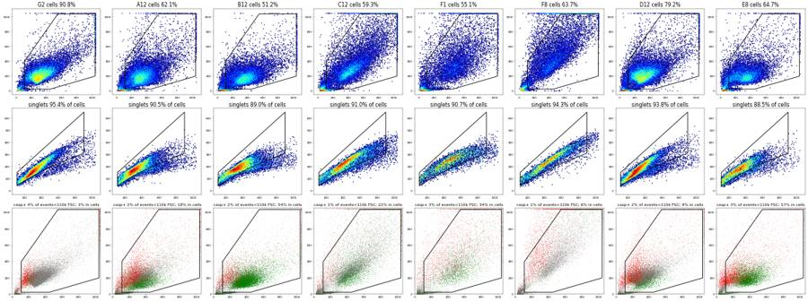
93
tool call · Bash
cd /task; cat > scripts/build_gates.py <<'EOF'
"""Build the single gating strategy used for all 80 wells and export as GatingML 2.0."""
import flowkit as fk, numpy as np, sys
sys.path.insert(0, '/task/scripts')
from helpers import SPILL, CELLS, SINGLETS
CASP_T = 700.0 # CellEvent caspase-3/7 (BL1-A, compensated) positivity threshold
DEAD_T = 25000.0 # SYTOX AADvanced (BL2-A, compensated) bright = dead
SNEG_T = 3000.0 # strict SYTOX-negative bound (sensitivity population)
def build():
gs = fk.GatingStrategy()
mat = fk.Matrix(SPILL, ['BL1-A', 'BL2-A'], fluorochromes=['BL1-A', 'BL2-A'])
gs.add_comp_matrix('spill_ss', mat)
fsc = fk.Dimension('FSC-A', compensation_ref='uncompensated')
ssc = fk.Dimension('SSC-A', compensation_ref='uncompensated')
fsch = fk.Dimension('FSC-H', compensation_ref='uncompensated')
# population 1: cells (debris and saturated events excluded)
gs.add_gate(fk.gates.PolygonGate('cells', [fsc, ssc], [list(v) for v in CELLS]), ('root',))
# population 2: singlets (FSC-A vs FSC-H)
gs.add_gate(fk.gates.PolygonGate('singlets', [fsc, fsch], [list(v) for v in SINGLETS]), ('root', 'cells'))
sp = ('root', 'cells', 'singlets')
# live (role): SYTOX AADvanced not bright -> excludes membrane-compromised dead cells
gs.add_gate(fk.gates.RectangleGate('nondead', [fk.Dimension('BL2-A', compensation_ref='spill_ss', range_max=DEAD_T)]), sp)
# marker_positive: caspase-3/7+ among non-dead singlets
gs.add_gate(fk.gates.RectangleGate('casp37_pos', [fk.Dimension('BL1-A', compensation_ref='spill_ss', range_min=CASP_T)]), sp + ('nondead',))
# other populations
gs.add_gate(fk.gates.RectangleGate('dead', [fk.Dimension('BL2-A', compensation_ref='spill_ss', range_min=DEAD_T)]), sp)
gs.add_gate(fk.gates.RectangleGate('casp37_pos_all', [fk.Dimension('BL1-A', compensation_ref='spill_ss', range_min=CASP_T)]), sp)
gs.add_gate(fk.gates.RectangleGate('sytox_neg', [fk.Dimension('BL2-A', compensation_ref='spill_ss', range_max=SNEG_T)]), sp)
gs.add_gate(fk.gates.RectangleGate('casp37_pos_sytox_neg', [fk.Dimension('BL1-A', compensation_ref='spill_ss', range_min=CASP_T)]), sp + ('sytox_neg',))
return gs
if __name__ == '__main__':
gs = build()
with open('/task/outputs/gates.xml', 'wb') as fh:
fk.export_gatingml(gs, fh)
gs2 = fk.parse_gating_xml('/task/outputs/gates.xml')
print(gs2.get_gate_hierarchy(output='ascii'))
EOF
python3 scripts/build_gates.py && head -c 3000 outputs/gates.xml94
tool output
root
╰── cells
╰── singlets
├── nondead
│ ╰── casp37_pos
├── dead
├── casp37_pos_all
╰── sytox_neg
╰── casp37_pos_sytox_neg
<?xml version='1.0' encoding='UTF-8'?>
<gating:Gating-ML xmlns:gating="http://www.isac-net.org/std/Gating-ML/v2.0/gating" xmlns:data-type="http://www.isac-net.org/std/Gating-ML/v2.0/datatypes" xmlns:transforms="http://www.isac-net.org/std/Gating-ML/v2.0/transformations">
<transforms:spectrumMatrix transforms:id="spill_ss">
<transforms:fluorochromes>
<data-type:fcs-dimension data-type:name="BL1-A"/>
<data-type:fcs-dimension data-type:name="BL2-A"/>
</transforms:fluorochromes>
<transforms:detectors>
<data-type:fcs-dimension data-type:name="BL1-A"/>
<data-type:fcs-dimension data-type:name="BL2-A"/>
</transforms:detectors>
<transforms:spectrum>
<transforms:coefficient transforms:value="1.0"/>
<transforms:coefficient transforms:value="0.91"/>
</transforms:spectrum>
<transforms:spectrum>
<transforms:coefficient transforms:value="0.0005"/>
<transforms:coefficient transforms:value="1.0"/>
</transforms:spectrum>
</transforms:spectrumMatrix>
<gating:PolygonGate gating:id="cells">
<gating:dimension gating:compensation-ref="uncompensated">
<data-type:fcs-dimension data-type:name="FSC-A"/>
</gating:dimension>
<gating:dimension gating:compensation-ref="uncompensated">
<data-type:fcs-dimension data-type:name="SSC-A"/>
</gating:dimension>
<gating:vertex>
<gating:coordinate data-type:value="110000"/>
<gating:coordinate data-type:value="25000"/>
</gating:vertex>
<gating:vertex>
<gating:coordinate data-type:value="450000"/>
<gating:coordinate data-type:value="25000"/>
</gating:vertex>
<gating:vertex>
<gating:coordinate data-type:value="1040000"/>
<gating:coordinate data-type:value="200000"/>
</gating:vertex>
<gating:vertex>
<gating:coordinate data-type:value="1040000"/>
<gating:coordinate data-type:value="1040000"/>
</gating:vertex>
<gating:vertex>
<gating:coordinate data-type:value="550000"/>
<gating:coordinate data-type:value="1040000"/>
</gating:vertex>
<gating:vertex>
<gating:coordinate data-type:value="110000"/>
<gating:coordinate data-type:value="400000"/>
</gating:vertex>
</gating:PolygonGate>
<gating:PolygonGate gating:id="singlets" gating:parent_id="cells">
<gating:dimension gating:compensation-ref="uncompensated">
<data-type:fcs-dimension data-type:name="FSC-A"/>
</gating:dimension>
<gating:dimension gating:compensation-ref="uncompensated">
<data-type:fcs-dimension data-type:name="FSC-H"/>
</gating:dimension>
<gating:vertex>
<gating:coordinate data-type:value="110000"/>
<gating:coordinate data-type:value="42000"/>
</gating:vertex>
<gating:vertex>
<gating:coordinate data-type:value="300000"/>
<gating:coordinate data-type:value="122000"/>
</gating:vertex>
<gating:vertex>
<gating:coordinate data-type:value="500000"/>
<gating:coordinate data-t96
tool call · Bash
cd /task; cat > scripts/make_counts.py <<'EOF'
"""Apply the saved GatingML (/task/outputs/gates.xml) to every FCS file and write counts.csv."""
import flowkit as fk, pandas as pd, numpy as np
lay = pd.read_csv('/task/inputs/plate_layout.csv')
gs = fk.parse_gating_xml('/task/outputs/gates.xml')
ROLE = {'cells': 'cells', 'singlets': 'singlets', 'nondead': 'live', 'casp37_pos': 'marker_positive'}
ORDER = ['cells', 'singlets', 'nondead', 'casp37_pos', 'dead', 'casp37_pos_all', 'sytox_neg', 'casp37_pos_sytox_neg']
rows = []
for f, w in zip(lay.file, lay.well):
s = fk.Sample('/task/inputs/raw/' + f)
res = gs.gate_sample(s)
rep = res.report.set_index('gate_name')
n_all = s.event_count
rows.append(dict(file=f, well=w, population='all_events', role='other', parent='none', count=int(n_all), pct_of_parent=''))
counts = {'all_events': n_all}
for g in ORDER:
r = rep.loc[g]
path = r['gate_path']
parent = path[-1] if path[-1] != 'root' else 'all_events'
c = int(r['count'])
counts[g] = c
pc = counts[parent]
rows.append(dict(file=f, well=w, population=g, role=ROLE.get(g, 'other'), parent=parent, count=c,
pct_of_parent=round(100.0 * c / pc, 4) if pc > 0 else ''))
out = pd.DataFrame(rows, columns=['file', 'well', 'population', 'role', 'parent', 'count', 'pct_of_parent'])
out.to_csv('/task/outputs/counts.csv', index=False)
print(out.head(18).to_string())
print(out.shape)
EOF
python3 scripts/make_counts.py97
tool output
file well population role parent count pct_of_parent 0 Caspase-assay-2-mlk_caspase_Group_A1.fcs A1 all_events other none 31328 1 Caspase-assay-2-mlk_caspase_Group_A1.fcs A1 cells cells all_events 20078 64.0896 2 Caspase-assay-2-mlk_caspase_Group_A1.fcs A1 singlets singlets cells 18735 93.3111 3 Caspase-assay-2-mlk_caspase_Group_A1.fcs A1 nondead live singlets 16731 89.3034 4 Caspase-assay-2-mlk_caspase_Group_A1.fcs A1 casp37_pos marker_positive nondead 3119 18.642 5 Caspase-assay-2-mlk_caspase_Group_A1.fcs A1 dead other singlets 2004 10.6966 6 Caspase-assay-2-mlk_caspase_Group_A1.fcs A1 casp37_pos_all other singlets 4938 26.3571 7 Caspase-assay-2-mlk_caspase_Group_A1.fcs A1 sytox_neg other singlets 13617 72.6821 8 Caspase-assay-2-mlk_caspase_Group_A1.fcs A1 casp37_pos_sytox_neg other sytox_neg 1457 10.6999 9 Caspase-assay-2-mlk_caspase_Group_A2.fcs A2 all_events other none 40169 10 Caspase-assay-2-mlk_caspase_Group_A2.fcs A2 cells cells all_events 28491 70.9278 11 Caspase-assay-2-mlk_caspase_Group_A2.fcs A2 singlets singlets cells 26355 92.5029 12 Caspase-assay-2-mlk_caspase_Group_A2.fcs A2 nondead live singlets 24221 91.9029 13 Caspase-assay-2-mlk_caspase_Group_A2.fcs A2 casp37_pos marker_positive nondead 5415 22.3566 14 Caspase-assay-2-mlk_caspase_Group_A2.fcs A2 dead other singlets 2134 8.0971 15 Caspase-assay-2-mlk_caspase_Group_A2.fcs A2 casp37_pos_all other singlets 7342 27.8581 16 Caspase-assay-2-mlk_caspase_Group_A2.fcs A2 sytox_neg other singlets 20191 76.6116 17 Caspase-assay-2-mlk_caspase_Group_A2.fcs A2 casp37_pos_sytox_neg other sytox_neg 2654 13.1445 (720, 7)
99
tool call · Bash
cd /task; python3 -c "
import sys; sys.path.insert(0,'/task/scripts')
from helpers import *
import pickle, pandas as pd
d=pickle.load(open('/task/work/raw.pkl','rb'))
c=pd.read_csv('outputs/counts.csv')
for w in ['A1','B12','F8','G7','G8']:
df=d[w]; m1,m2=gate_cs(df); b1,b2=comp(df)
nd=m2&(b2<25000); cp=nd&(b1>700)
sub=c[c.well==w].set_index('population')['count']
print(w, m1.sum(), sub['cells'], m2.sum(), sub['singlets'], nd.sum(), sub['nondead'], cp.sum(), sub['casp37_pos'])
"100
tool output
A1 20078 20078 18735 18735 16731 16731 3119 3119 B12 16217 16217 14431 14431 13438 13438 7591 7591 F8 8736 8736 8234 8234 6986 6986 470 470 G7 22349 22349 21453 21453 21453 21453 920 920 G8 22915 22915 21958 21958 21459 21459 36 36
102
tool call · Bash
cd /task; cat > scripts/wellmetrics.py <<'EOF'
import pandas as pd, numpy as np
c=pd.read_csv('/task/outputs/counts.csv')
lay=pd.read_csv('/task/inputs/plate_layout.csv')
p=c.pivot(index='well',columns='population',values='count')
m=lay.set_index('well').join(p)
m['casp_pct']=100*m.casp37_pos/m.nondead
m['dead_pct']=100*m.dead/m.singlets
m['casp_all_pct']=100*m.casp37_pos_all/m.singlets
m['casp_strict_pct']=100*m.casp37_pos_sytox_neg/m.sytox_neg
m['cells_pct']=100*m.cells/m.all_events
m['cm']=m.conditioned_media.map({'WT 24hr conditioned media':'CM24','WT 48hr conditioned media':'CM48','no conditioned media':'noCM'})
m=m.reset_index()
m['order']=range(len(m))
m.to_csv('/task/work/wellmetrics.csv',index=False)
pd.set_option('display.width',250); pd.set_option('display.max_rows',200)
print(m[['well','cell_line','cm','camptothecin','all_events','singlets','nondead','casp37_pos','casp_pct','dead_pct','casp_all_pct','casp_strict_pct','cells_pct']].round(1).to_string())
EOF
python3 scripts/wellmetrics.py103
tool output
well cell_line cm camptothecin all_events singlets nondead casp37_pos casp_pct dead_pct casp_all_pct casp_strict_pct cells_pct 0 A1 WT CM24 10uM 31328 18735 16731 3119 18.6 10.7 26.4 10.7 64.1 1 A2 WT CM24 5uM 40169 26355 24221 5415 22.4 8.1 27.9 13.1 70.9 2 A3 WT CM24 2uM 47337 29327 26774 6114 22.8 8.7 28.3 14.1 66.9 3 A4 WT CM24 DMSO 33079 21563 19031 5453 28.7 11.7 36.6 16.5 70.4 4 A5 WT CM48 10uM 34963 22768 20579 4755 23.1 9.6 29.9 12.4 70.4 5 A6 WT CM48 5uM 33431 23530 21504 4859 22.6 8.6 28.6 10.6 74.4 6 A7 WT CM48 2uM 36445 26003 23526 5092 21.6 9.5 28.4 9.3 75.4 7 A8 WT CM48 DMSO 22867 15896 13956 3219 23.1 12.2 31.9 9.7 73.3 8 A9 WT noCM 10uM 40034 22358 20119 3847 19.1 10.0 26.8 9.1 61.0 9 A10 WT noCM 5uM 42298 26636 23525 4243 18.0 11.7 27.0 7.9 68.0 10 A11 WT noCM 2uM 43376 26681 23446 4613 19.7 12.1 28.9 8.5 65.9 11 A12 WT noCM DMSO 30724 17272 14984 2933 19.6 13.2 29.9 8.1 62.1 12 B1 E1 CM24 10uM 18757 12764 9153 6154 67.2 28.3 76.4 47.0 73.4 13 B2 E1 CM24 5uM 32477 21291 18297 12666 69.2 14.1 73.5 38.8 70.5 14 B3 E1 CM24 2uM 40067 25025 21094 15740 74.6 15.7 78.5 44.8 67.4 15 B4 E1 CM24 DMSO 19965 11929 9184 6194 67.4 23.0 74.9 41.9 66.0 16 B5 E1 CM48 10uM 17852 12864 9942 6834 68.7 22.7 75.8 42.4 77.0 17 B6 E1 CM48 5uM 31705 20950 17721 12397 70.0 15.4 74.5 37.6 71.1 18 B7 E1 CM48 2uM 35417 22599 18509 13440 72.6 18.1 77.5 38.3 68.4 19 B8 E1 CM48 DMSO 26222 15138 12964 9465 73.0 14.4 76.9 39.9 64.0 20 B9 E1 noCM 10uM 34411 20133 18827 9853 52.3 6.5 55.4 24.1 63.8 21 B10 E1 noCM 5uM 40098 23443 22600 12121 53.6 3.6 55.3 23.9 63.9 22 B11 E1 noCM 2uM 41005 22570 21140 12946 61.2 6.3 63.7 31.9 59.7 23 B12 E1 noCM DMSO 31680 14431 13438 7591 56.5 6.9 59.5 22.5 51.2 24 C1 E3 CM24 10uM 17681 9029 7702 3973 51.6 14.7 58.7 6.6 57.8 25 C2 E3 CM24 5uM 25455 11055 9657 5292 54.8 12.6 60.4 12.0 49.7 26 C3 E3 CM24 2uM 21098 11051 9738 4408 45.3 11.9 51.6 3.6 58.0 27 C4 E3 CM24 DMSO 18113 8016 6898 3670 53.2 13.9 59.7 8.7 52.4 28 C5 E3 CM48 10uM 18729 8001 7053 3237 45.9 11.8 52.3 6.6 50.6 29 C6 E3 CM48 5uM 21716 9439 8402 4187 49.8 11.0 55.3 4.8 50.7 30 C7 E3 CM48 2uM 22874 10575 9716 4094 42.1 8.1 46.8 3.9 52.2 31 C8 E3 CM48 DMSO 18604 8222 7202 3096 43.0 12.4 50.0 4.5 52.2 32 C9 E3 noCM 10uM 22962 12436 11768 2291 19.5 5.4 23.7 2.5 59.9 33 C10 E3 noCM 5uM 15794 9323 8975 1213 13.5 3.7 16.5 2.1 64.1 34 C11 E3 noCM 2uM 19854 11932 11610 1454 12.5 2.7 14.6 1.7 65.5 35 C12 E3 noCM DMSO 23104 12456 12019 2454 20.4 3.5 23.1 2.7 59.3 36 D1 WT CM24 10uM 29965 18564 16739 5700 34.1 9.8 40.5 7.7 65.7 37 D2 WT CM24 5uM 42557 27197 25035 6681 26.7 7.9 32.4 4.4 68.5 38 D3 WT CM24 2uM 44711 28154 25644 7672 29.9 8.9 36.0 5.9 67.6 39 D4 WT CM24 DMSO 26104 16172 13803 4910 35.6 14.6 44.9 5.8 67.6 40 D5 WT CM48 10uM 28348 17562 15559 3989 25.6 11.4 34.0 4.5 … [5,582 more characters not shown]
105
tool call · Bash
cd /task; python3 -c "
import sys; sys.path.insert(0,'/task/scripts')
from helpers import *
import pickle, pandas as pd
d=pickle.load(open('/task/work/raw.pkl','rb'))
rows=[]
for w,df in d.items():
f=df['FSC-A'].values; s=df['SSC-A'].values; b1,b2=comp(df)
sat=(f>=1048575)|(s>=1048575)
m1,m2=gate_cs(df)
nd=b2<25000
rows.append(dict(well=w, sat_pct=100*sat.mean(), sat_of_cellish=100*sat.sum()/(sat.sum()+m1.sum()), casp_sat=100*((b1>700)&nd&sat).sum()/max((nd&sat).sum(),1), casp_cells=100*((b1>700)&nd&m2).sum()/(nd&m2).sum(), bl2sat=100*(df['BL2-A'].values>=1048575).mean()))
R=pd.DataFrame(rows).round(2)
pd.set_option('display.max_rows',200); print(R.sort_values('sat_pct',ascending=False).head(30).to_string())
"106
tool output
well sat_pct sat_of_cellish casp_sat casp_cells bl2sat 67 F8 9.45 12.92 77.19 6.73 0.02 77 G6 9.18 10.70 63.39 4.32 0.00 34 C11 7.54 10.32 67.68 12.52 0.00 76 G5 7.54 9.03 73.23 5.08 0.00 69 F10 7.36 12.96 75.68 20.41 0.02 70 F11 7.15 10.43 67.89 12.64 0.01 68 F9 6.35 12.57 80.53 28.20 0.01 33 C10 6.34 9.00 81.06 13.52 0.00 32 C9 5.43 8.31 84.69 19.47 0.00 26 C3 5.34 8.43 88.61 45.27 0.00 24 C1 5.14 8.15 90.83 51.58 0.01 71 F12 5.05 7.45 63.28 13.40 0.01 63 F4 4.89 9.04 92.55 50.81 0.00 60 F1 4.65 7.78 84.06 40.93 0.00 28 C5 4.63 8.38 93.17 45.90 0.02 27 C4 4.62 8.10 94.54 53.20 0.02 35 C12 4.37 6.86 81.13 20.42 0.00 29 C6 4.33 7.86 92.98 49.83 0.00 31 C8 4.17 7.39 93.82 42.99 0.02 25 C2 4.16 7.74 94.09 54.80 0.00 30 C7 4.09 7.27 93.22 42.14 0.00 66 F7 3.92 7.34 92.37 41.14 0.01 64 F5 3.89 7.41 88.36 41.84 0.03 62 F3 3.69 6.78 91.46 41.69 0.01 65 F6 3.67 7.18 93.01 46.73 0.00 61 F2 3.62 7.29 94.12 51.49 0.02 73 G2 2.42 2.59 57.71 3.06 0.00 39 D4 2.08 2.98 77.94 35.57 0.05 72 G1 1.99 2.10 41.76 0.13 0.00 7 A8 1.98 2.63 65.65 23.07 0.05
108
thinking
Final gates are saved with exact counts in FlowKit, and the saturated scatter events turn out to be autofluorescent aggregates, so excluding them is correct. I'm computing condition statistics next, then the flags, figure and report.
109
tool call · Bash
cd /task; cat > scripts/stats.py <<'EOF'
import pandas as pd, numpy as np
from scipy import stats
m=pd.read_csv('/task/work/wellmetrics.csv')
EXCL={'G3','G4','G5','G6','F8','D12'}
u=m[~m.well.isin(EXCL) & m.well.str[0].isin(list('ABCDEF'))].copy()
u['dose']=u.camptothecin
# camptothecin effect: two-way within line x CM; regression with dose as categorical
print('per line x CM x dose means (n=2):')
print(u.pivot_table(index=['cell_line','cm'],columns='dose',values='casp_pct',aggfunc='mean').round(1)[['DMSO','2uM','5uM','10uM']])
# within-group (line x CM) centred dose effects
u['grp']=u.cell_line+'_'+u.cm
u['resid']=u.casp_pct-u.groupby('grp').casp_pct.transform('mean')
print(u.groupby('dose').resid.agg(['mean','std','count']).round(2))
print('ANOVA dose on residuals:', stats.f_oneway(*[g.resid.values for _,g in u.groupby('dose')]))
# 10uM - DMSO paired by line x CM x row-pair
pairs=[]
for g,gg in u.groupby('grp'):
a=gg[gg.dose=='10uM'].casp_pct.mean(); b=gg[gg.dose=='DMSO'].casp_pct.mean(); pairs.append(a-b)
print('10uM - DMSO per line x CM group:',np.round(pairs,1),'mean %.1f'%np.mean(pairs), stats.ttest_1samp(pairs,0))
for metric in ['dead_pct','casp_all_pct']:
pr=[]
for g,gg in u.groupby('grp'):
pr.append(gg[gg.dose=='10uM'][metric].mean()-gg[gg.dose=='DMSO'][metric].mean())
print(metric,'10uM-DMSO',np.round(pr,1), 'mean %.1f'%np.mean(pr))
# pooled groups
G=u.groupby(['cell_line','cm']).casp_pct.agg(['mean','std','count']).round(2); print(G)
def welch(a,b):
A=u[(u.grp==a)].casp_pct.values; B=u[(u.grp==b)].casp_pct.values
t=stats.ttest_ind(B,A,equal_var=False)
d=B.mean()-A.mean(); se=np.sqrt(A.var(ddof=1)/len(A)+B.var(ddof=1)/len(B))
df=se**4/((A.var(ddof=1)/len(A))**2/(len(A)-1)+(B.var(ddof=1)/len(B))**2/(len(B)-1))
ci=stats.t.ppf(0.975,df)*se
return d, d-ci, d+ci, t.pvalue, B.mean()/A.mean()
for a,b in [('WT_noCM','E1_noCM'),('WT_noCM','E3_noCM'),('E1_noCM','E1_CM24'),('E1_noCM','E1_CM48'),('E3_noCM','E3_CM24'),('E3_noCM','E3_CM48'),('WT_noCM','WT_CM24'),('WT_noCM','WT_CM48'),('WT_CM24','E1_CM24'),('WT_CM24','E3_CM24'),('E1_CM24','E1_CM48'),('E3_CM24','E3_CM48'),('WT_CM24','WT_CM48')]:
d,lo,hi,p,fc=welch(a,b); print('%-8s -> %-8s diff %+6.1f pts (95%% CI %+.1f to %+.1f) fold %.2f p=%.2g'%(a,b,d,lo,hi,fc,p))
EOF
python3 scripts/stats.py110
tool output
per line x CM x dose means (n=2):
dose DMSO 2uM 5uM 10uM
cell_line cm
E1 CM24 73.4 76.1 72.9 69.2
CM48 74.6 74.7 72.5 70.9
noCM 54.0 64.4 56.1 56.7
E3 CM24 52.0 43.5 53.1 46.3
CM48 43.0 41.6 48.3 43.9
noCM 16.9 12.6 17.0 23.8
WT CM24 32.1 26.4 24.5 26.3
CM48 27.1 22.7 23.9 24.4
noCM 19.6 20.2 19.3 22.9
mean std count
dose
10uM -0.30 5.14 18
2uM -0.54 4.22 18
5uM 0.07 3.43 18
DMSO 0.86 4.31 16
ANOVA dose on residuals: F_onewayResult(statistic=0.3377775514172878, pvalue=0.7980596155050752)
10uM - DMSO per line x CM group: [-4.1 -3.7 2.7 -5.7 0.9 6.9 -5.8 -2.8 3.3] mean -0.9 TtestResult(statistic=-0.6165025348887009, pvalue=0.5546965156359145, df=8)
dead_pct 10uM-DMSO [-3.2 8.8 -0.3 -3.4 3.5 2.8 -2.9 -4.6 -2.4] mean -0.2
casp_all_pct 10uM-DMSO [-3.8 -0.5 2.2 -6.3 2.8 8.4 -7.3 -5.8 1. ] mean -1.0
mean std count
cell_line cm
E1 CM24 72.91 4.75 8
CM48 73.18 2.83 8
noCM 57.78 5.42 8
E3 CM24 48.72 5.34 8
CM48 44.37 3.20 7
noCM 17.57 5.56 8
WT CM24 27.34 5.88 8
CM48 24.53 3.00 8
noCM 20.64 2.80 7
WT_noCM -> E1_noCM diff +37.1 pts (95% CI +32.3 to +42.0) fold 2.80 p=4.2e-09
WT_noCM -> E3_noCM diff -3.1 pts (95% CI -8.0 to +1.9) fold 0.85 p=0.2
E1_noCM -> E1_CM24 diff +15.1 pts (95% CI +9.7 to +20.6) fold 1.26 p=3.9e-05
E1_noCM -> E1_CM48 diff +15.4 pts (95% CI +10.6 to +20.2) fold 1.27 p=2.4e-05
E3_noCM -> E3_CM24 diff +31.1 pts (95% CI +25.3 to +37.0) fold 2.77 p=1.8e-08
E3_noCM -> E3_CM48 diff +26.8 pts (95% CI +21.7 to +31.9) fold 2.52 p=1.2e-07
WT_noCM -> WT_CM24 diff +6.7 pts (95% CI +1.5 to +11.9) fold 1.32 p=0.016
WT_noCM -> WT_CM48 diff +3.9 pts (95% CI +0.6 to +7.1) fold 1.19 p=0.022
WT_CM24 -> E1_CM24 diff +45.6 pts (95% CI +39.8 to +51.3) fold 2.67 p=1.8e-10
WT_CM24 -> E3_CM24 diff +21.4 pts (95% CI +15.4 to +27.4) fold 1.78 p=2.6e-06
E1_CM24 -> E1_CM48 diff +0.3 pts (95% CI -4.0 to +4.6) fold 1.00 p=0.89
E3_CM24 -> E3_CM48 diff -4.4 pts (95% CI -9.3 to +0.5) fold 0.91 p=0.077
WT_CM24 -> WT_CM48 diff -2.8 pts (95% CI -8.0 to +2.4) fold 0.90 p=0.25112
tool call · Bash
cd /task; cat > scripts/sens.py <<'EOF'
import pandas as pd, numpy as np
m=pd.read_csv('/task/work/wellmetrics.csv')
p=m[m.well.str[0].isin(list('ABCDEF'))].copy(); p['grp']=p.cell_line+'_'+p.cm
EX={'F8','D12'}
for metric in ['casp_pct','casp_strict_pct','casp_all_pct','dead_pct']:
a=p[~p.well.isin(EX)].groupby('grp')[metric].mean(); b=p.groupby('grp')[metric].mean()
print(metric); print(pd.DataFrame({'excl':a,'incl_F8_D12':b}).round(1).T.to_string())
# DMSO only
d=p[(p.camptothecin=='DMSO')]
print(d[['well','grp','casp_pct']].to_string())
# row effect
p['row']=p.well.str[0]
print(p[~p.well.isin(EX)].groupby(['cell_line','cm','row']).casp_pct.mean().round(1).unstack())
EOF
python3 scripts/sens.py113
tool output
casp_pct
grp E1_CM24 E1_CM48 E1_noCM E3_CM24 E3_CM48 E3_noCM WT_CM24 WT_CM48 WT_noCM
excl 72.9 73.2 57.8 48.7 44.4 17.6 27.3 24.5 20.6
incl_F8_D12 72.9 73.2 57.8 48.7 39.7 17.6 27.3 24.5 19.1
casp_strict_pct
grp E1_CM24 E1_CM48 E1_noCM E3_CM24 E3_CM48 E3_noCM WT_CM24 WT_CM48 WT_noCM
excl 35.7 33.6 22.4 6.7 4.7 2.3 9.8 7.4 6.4
incl_F8_D12 35.7 33.6 22.4 6.7 4.3 2.3 9.8 7.4 5.8
casp_all_pct
grp E1_CM24 E1_CM48 E1_noCM E3_CM24 E3_CM48 E3_noCM WT_CM24 WT_CM48 WT_noCM
excl 78.4 78.4 60.9 57.9 53.1 23.3 34.1 32.4 29.7
incl_F8_D12 78.4 78.4 60.9 57.9 49.0 23.3 34.1 32.4 28.1
dead_pct
grp E1_CM24 E1_CM48 E1_noCM E3_CM24 E3_CM48 E3_noCM WT_CM24 WT_CM48 WT_noCM
excl 20.3 19.5 7.3 18.0 15.8 7.3 10.1 11.1 11.8
incl_F8_D12 20.3 19.5 7.3 18.0 15.7 7.3 10.1 11.1 11.5
well grp casp_pct
3 A4 WT_CM24 28.653250
7 A8 WT_CM48 23.065348
11 A12 WT_noCM 19.574212
15 B4 E1_CM24 67.443380
19 B8 E1_CM48 73.009873
23 B12 E1_noCM 56.489061
27 C4 E3_CM24 53.203827
31 C8 E3_CM48 42.988059
35 C12 E3_noCM 20.417672
39 D4 WT_CM24 35.571977
43 D8 WT_CM48 31.200994
47 D12 WT_noCM 8.642102
51 E4 E1_CM24 79.329403
55 E8 E1_CM48 76.220717
59 E12 E1_noCM 51.504863
63 F4 E3_CM24 50.805351
67 F8 E3_CM48 6.727741
71 F12 E3_noCM 13.401816
row A B C D E F
cell_line cm
E1 CM24 NaN 69.6 NaN NaN 76.2 NaN
CM48 NaN 71.1 NaN NaN 75.3 NaN
noCM NaN 55.9 NaN NaN 59.6 NaN
E3 CM24 NaN NaN 51.2 NaN NaN 46.2
CM48 NaN NaN 45.2 NaN NaN 43.2
noCM NaN NaN 16.5 NaN NaN 18.7
WT CM24 23.1 NaN NaN 31.6 NaN NaN
CM48 22.6 NaN NaN 26.4 NaN NaN
noCM 19.1 NaN NaN 22.7 NaN NaN115
tool call · Skill
{
"skill": "dataviz"
}116
tool output
Launching skill: dataviz
117
tool call · Bash
cd /tmp/claude-0/bundled-skills/2.1.322/2a73b3a67867cefb7dc09f38452ece20/dataviz; sed -n 1,200p references/palette.md; sed -n 1,80p references/anti-patterns.md
118
tool output
# Reference palette
This is the **reference instance** of the data-viz method: every parameter the
method needs, filled in with a validated default palette. The rest of the skill
is system-agnostic - **to target your brand, substitute this file's values** and
re-run the validator. Nothing else changes.
## How to use these values
Everything below is plain hex. In an HTML chart, **define the slots you use as
CSS custom properties in a local `<style>` block** at the top of the file, then
reference them by role throughout - so the light/dark values swap in one place,
and the chart body is written against roles rather than raw hex:
```css
.viz-root {
color-scheme: light;
--surface-1: #fcfcfb; /* chart surface */
--text-primary: #0b0b0b;
--text-secondary: #52514e;
--series-1: #2a78d6; /* categorical slot 1 */
/* ...only the roles this chart uses */
}
@media (prefers-color-scheme: dark) {
:root:where(:not([data-theme="light"])) .viz-root {
color-scheme: dark;
--surface-1: #1a1a19;
--text-primary: #f0efec;
--text-secondary: #c3c2b7;
--series-1: #3987e5;
}
}
:root[data-theme="dark"] .viz-root {
color-scheme: dark;
--surface-1: #1a1a19;
--text-primary: #f0efec;
--text-secondary: #c3c2b7;
--series-1: #3987e5;
}
```
Declare the dark values under both scopes as above - the media query covers
the OS setting; the `data-theme` scope covers the viewer's theme toggle,
which must win both ways (the `:not(...)` guard lets a light stamp beat
OS-dark; `:where()` keeps the media block below the toggle scope).
## Categorical palette
Both modes are selected. The dark column is the same eight hues stepped for the
dark surface, not a separate palette:
| Slot | Hue | Light | Dark |
|------|-----|-------|------|
| 1 | blue | `#2a78d6` | `#3987e5` |
| 2 | orange | `#eb6834` | `#d95926` |
| 3 | aqua | `#1baf7a` | `#199e70` |
| 4 | yellow | `#eda100` | `#c98500` |
| 5 | magenta | `#e87ba4` | `#d55181` |
| 6 | green | `#008300` | `#008300` |
| 7 | violet | `#6250d6` | `#9085e9` |
| 8 | red | `#e34948` | `#e66767` |
This order passes every hard gate in both modes on the default *adjacent*
pairlist (stacks, bars, lines): worst adjacent CVD Delta E 9.1 light / 8.4 dark
(OKLab ×100, >=8 target), worst adjacent normal-vision Delta E 19.6 light / 19.3
dark (>=15 floor). Under `--pairs all` (scatter, bubble, choropleth, small
multiples) the full eight cannot clear the floors - with all 28 pairs in
play no ordering can (the pairlist no longer depends on order), and
re-stepping is off the table by the documented-palette rule - so those
chart forms carry a series cap: **the first three slots validate all-pairs
in both modes** (worst pair CVD Delta E 9.2 light / 9.4 dark, normal-vision 24.0
light / 20.9 dark - clear of the CVD warn band). Past three, fold to "Other" or
facet: the fourth slot puts yellow and orange on screen
together, and that pair fails the all-pairs floors (normal-vision 13.7
light; CVD 4.8 dark). Three light-mode slots (magenta, yellow, aqua)
sit below 3:1 contrast on the light surface: the **relief rule** applies (ship
visible direct labels or the table view). The dark steps were chosen for the
dark band (OKLCH L ~ 0.48-0.67, >= 3:1 on the dark surface) and validated as a
set. (Ordering history: adopted July 2026 for its more harmonious opening -
the same eight hues and steps as its predecessor, re-ordered, zero hex
changes. The predecessor validated its first FOUR slots all-pairs, with its
dark run in the 6-8 CVD warn band, so secondary encoding was required there;
this order deliberately trades that fourth slot - yellow now sits beside orange -
for better-looking leading colors. Revisit the trade if yellow<->orange
confusion shows up in real charts with four or more series; undoing it is a
pure re-order. Light slot 7 has since been lightened, `#4a3aa7` -> `#6250d6`
(August 2026); the adjacent-pair figures above are unchanged by that move, the
non-adjacent blue<->violet pair now sits below both floors under `--pairs all`
(normal-vision 10.5, CVD 4.5 - inside the range the series cap already
excludes), and the order enumeration was run with the earlier value.) When you
swap in your own ramps, hold your palette to the full gate.
The slot **ordering** is the CVD-safety mechanism, not cosmetic - candidate
orderings were enumerated and only those clearing every adjacent gate in both
modes kept (see `color-formula.md` § Themes); this default is one of the
passing orders, picked among them for its opening colors. When you swap in
your brand's hues, do the same: run the validator on candidate orderings and
choose only among the passing ones.
## Sequential hue
Default single hue: **blue**, light->dark. When two sequential contexts appear at
once, the second takes the next categorical slot's hue (orange), each as its own
one-hue ramp.
| step | hex | step | hex | step | hex | step | hex |
|---|---|---|---|---|---|---|---|
| 100 | `#cde2fb` | 250 | `#86b6ef` | 400 | `#3987e5` | 550 | `#1c5cab` |
| 150 | `#b7d3f6` | 300 | `#6da7ec` | 450 | `#2a78d6` | 600 | `#184f95` |
| 200 | `#9ec5f4` | 350 | `#5598e7` | 500 | `#256abf` | 650 | `#104281` |
| | | | | | | 700 | `#0d366b` |
The full 100->700 range is for **sequential** encoding (continuous magnitude -
heatmaps, choropleths) where the lightest step means "near zero" and is allowed
to recede toward the surface. For an **ordinal** ramp (discrete ordered marks -
funnel stages, tiers - validated with `--ordinal`), the step nearest the surface
must still clear 2:1: on light, start no lighter than **step 250** (`#86b6ef`,
2.06:1); on dark, go no darker than **step 600** (`#184f95`, 2.15:1).
## Diverging pair
**blue <-> red** - warm/cool poles that read as opposite. Neutral midpoint is gray
(light `#f0efec`, dark `#383835`). Equal step count per arm. (blue<->aqua was
rejected - both cool, the midpoint doesn't read as "nothing".)
## Status palette (fixed - never themed)
| role
… [7,657 more characters not shown]120
tool call · Bash
cd /tmp/claude-0/bundled-skills/2.1.322/2a73b3a67867cefb7dc09f38452ece20/dataviz; node scripts/validate_palette.js "#2a78d6,#eb6834,#1baf7a" --mode light --pairs all 2>&1 | tail -30
121
tool output
/bin/bash: line 1: node: command not found Shell cwd was reset to /task
123
thinking
Node isn't available, so I can't run the palette validator; I'll rely on the skill's documented first three colours (blue, orange, aqua), marked as passing in light mode, and add position cues alongside colour.
124
tool call · Bash
cd /task; cat > scripts/make_flags.py <<'EOF'
import pandas as pd, numpy as np
m=pd.read_csv('/task/work/wellmetrics.csv').set_index('well')
sf=pd.read_csv('/task/work/scatter_feat.csv').set_index('well')
import pickle
d=pickle.load(open('/task/work/raw.pkl','rb'))
sat={w:100*((df['FSC-A']>=1048575)|(df['SSC-A']>=1048575)).mean() for w,df in d.items()}
lay=pd.read_csv('/task/inputs/plate_layout.csv')
E3plate=[w for w in m.index if w[0] in 'CF']; E1plate=[w for w in m.index if w[0] in 'BE']
e3ssc=sf.loc[E3plate,'med_ssc']; e1ssc=sf.loc[E1plate,'med_ssc']
flags={}
for w in ['G3','G4']:
flags[w]=('mislabel',
f"Labelled E3 but scatter matches E1/WT: median SSC-A of cells-gate events {sf.loc[w,'med_ssc']/1e3:.1f}k vs {e3ssc.min()/1e3:.1f}k-{e3ssc.max()/1e3:.1f}k in all 24 E3 plate wells (E1 plate wells {e1ssc.min()/1e3:.1f}k-{e1ssc.max()/1e3:.1f}k); SSC-A saturation {sf.loc[w,'ssat']:.2f}% vs 3.25-8.88% in E3 wells; {int(m.loc[w,'all_events'])} events vs 11614-25455 in E3 wells. Probably swapped with G5/G6 (E1) when the untreated wells were moved from rows G/H (11-30 map) to row G (12-02 map). Caspase+ {m.loc[w,'casp_pct']:.1f}% of non-dead. Identity uncertain, so not used in any condition.",
'exclude')
for w in ['G5','G6']:
flags[w]=('mislabel',
f"Labelled E1 but scatter matches E3: median SSC-A {sf.loc[w,'med_ssc']/1e3:.1f}k vs {e1ssc.min()/1e3:.1f}k-{e1ssc.max()/1e3:.1f}k in all 24 E1 plate wells (E3 plate wells {e3ssc.min()/1e3:.1f}k-{e3ssc.max()/1e3:.1f}k); FSC-A/SSC-A saturation {sf.loc[w,'fsat']:.2f}%/{sf.loc[w,'ssat']:.2f}% vs <=1.08%/<=1.11% in E1 wells (also a saturation issue: {sat[w]:.1f}% of events at the scatter ceiling). Probably swapped with G3/G4 (E3). Caspase+ {m.loc[w,'casp_pct']:.1f}% of non-dead. Not used in any condition.",
'exclude')
others_e3cm=[w for w in m.index if w[0] in 'CF' and m.loc[w,'cm']!='noCM' and w!='F8']
e3nocm=[w for w in m.index if w[0] in 'CF' and m.loc[w,'cm']=='noCM']
fcm=[w for w in ['F1','F2','F3','F4','F5','F6','F7']]
flags['F8']=('other',
f"Outlier inconsistent with its label (E3, WT 48hr CM, DMSO): caspase+ {m.loc['F8','casp_pct']:.1f}% of non-dead vs {m.loc['C8','casp_pct']:.1f}% in replicate C8 and {m.loc[others_e3cm,'casp_pct'].min():.1f}-{m.loc[others_e3cm,'casp_pct'].max():.1f}% in the other 15 E3+CM wells. It is lower than all 8 E3 no-CM wells ({m.loc[e3nocm,'casp_pct'].min():.1f}-{m.loc[e3nocm,'casp_pct'].max():.1f}%). Cells gate holds {m.loc['F8','cells_pct']:.1f}% of events vs {m.loc[fcm,'cells_pct'].min():.1f}-{m.loc[fcm,'cells_pct'].max():.1f}% in F1-F7. Looks as if conditioned media was not added or the sample was mixed up. Also {sat['F8']:.1f}% of events at the scatter ceiling.",
'exclude')
wtno=['A9','A10','A11','A12','D9','D10','D11']
flags['D12']=('other',
f"Outlier against its group (WT, no CM, DMSO): caspase+ {m.loc['D12','casp_pct']:.1f}% of non-dead vs {m.loc['A12','casp_pct']:.1f}% in replicate A12 and {m.loc[wtno,'casp_pct'].min():.1f}-{m.loc[wtno,'casp_pct'].max():.1f}% in the other 7 WT no-CM wells (camptothecin had no effect, so all are comparable). Cells gate holds {m.loc['D12','cells_pct']:.1f}% of events vs {m.loc[wtno,'cells_pct'].min():.1f}-{m.loc[wtno,'cells_pct'].max():.1f}%. Looks like a handling difference. Excluded from means; including it lowers the WT no-CM mean from 20.6% to 19.1%.",
'exclude')
# saturation (keep with note) for wells with >=5% of events at FSC-A or SSC-A ceiling
for w in m.index:
if w in flags: continue
if sat[w]>=5.0:
flags[w]=('saturation', f"{sat[w]:.1f}% of all events at the FSC-A or SSC-A ceiling (1,048,575); FSC-A {sf.loc[w,'fsat']:.2f}%, SSC-A {sf.loc[w,'ssat']:.2f}% (E3 cells are large and granular at FSC 20 V / SSC 290 V). The cells gate (upper bound 1,040,000) removes these events. Saturated events look like autofluorescent aggregates: in unstained G1, 42% of them are above the caspase threshold. Caspase+ {m.loc[w,'casp_pct']:.1f}% of non-dead. Kept; the readout may slightly under-represent the largest cells.", 'keep_with_note')
rows=[]
for f,w in zip(lay.file,lay.well):
it,ev,dec=flags.get(w,('none','','keep'))
rows.append(dict(file=f,well=w,issue_type=it,evidence=ev,decision=dec))
F=pd.DataFrame(rows,columns=['file','well','issue_type','evidence','decision'])
F.to_csv('/task/outputs/flags.csv',index=False)
print(F[F.issue_type!='none'][['well','issue_type','decision']].to_string()); print(len(F))
print(F.loc[F.well=='F8','evidence'].values[0])
EOF
python3 scripts/make_flags.py125
tool output
well issue_type decision 24 C1 saturation keep_with_note 26 C3 saturation keep_with_note 32 C9 saturation keep_with_note 33 C10 saturation keep_with_note 34 C11 saturation keep_with_note 47 D12 other exclude 67 F8 other exclude 68 F9 saturation keep_with_note 69 F10 saturation keep_with_note 70 F11 saturation keep_with_note 71 F12 saturation keep_with_note 74 G3 mislabel exclude 75 G4 mislabel exclude 76 G5 mislabel exclude 77 G6 mislabel exclude 80 Outlier inconsistent with its label (E3, WT 48hr CM, DMSO): caspase+ 6.7% of non-dead vs 43.0% in replicate C8 and 40.9-54.8% in the other 15 E3+CM wells. It is lower than all 8 E3 no-CM wells (12.5-28.2%). Cells gate holds 63.7% of events vs 46.1-55.1% in F1-F7. Looks as if conditioned media was not added or the sample was mixed up. Also 9.4% of events at the scatter ceiling.
127
tool call · Bash
cd /task; cat > scripts/make_summary.py <<'EOF'
import pandas as pd, numpy as np
m=pd.read_csv('/task/work/wellmetrics.csv')
fl=pd.read_csv('/task/outputs/flags.csv').set_index('well')
EXCL=set(fl[fl.decision=='exclude'].index)
METRIC=("Per-well % caspase-3/7-positive = 100 x count(casp37_pos) / count(nondead). casp37_pos = CellEvent Caspase-3/7 Green, "
"BL1-A compensated > 700. nondead = singlets with SYTOX AADvanced BL2-A compensated < 25,000. Units: % of non-dead single cells. "
"Mean and SD are taken across wells.")
CMN={'noCM':'no conditioned media','CM24':'WT 24hr conditioned media','CM48':'WT 48hr conditioned media'}
rows=[]
def add(name,wells_all,extra=''):
used=[w for w in wells_all if w not in EXCL]
v=m.set_index('well').loc[used,'casp_pct']
rows.append(dict(condition=name,wells=';'.join(used),n_wells_used=len(used),mean=round(v.mean(),2),
sd=round(v.std(ddof=1),2) if len(used)>1 else '',metric_definition=METRIC+extra,normalisation_applied='none'))
plate=m[m.well.str[0].isin(list('ABCDEF'))]
# primary: pooled across camptothecin dose (no dose effect, ANOVA p=0.80)
for line in ['WT','E1','E3']:
for cm in ['noCM','CM24','CM48']:
ws=plate[(plate.cell_line==line)&(plate.cm==cm)].well.tolist()
add(f'{line}_{cm}',ws,f' Condition: {line}, {CMN[cm]}, pooled over camptothecin 0 (DMSO)/2/5/10 uM because no dose effect was found.')
# per-dose conditions (as plated, n=2)
for line in ['WT','E1','E3']:
for cm in ['noCM','CM24','CM48']:
for dose in ['DMSO','2uM','5uM','10uM']:
ws=plate[(plate.cell_line==line)&(plate.cm==cm)&(plate.camptothecin==dose)].well.tolist()
add(f'{line}_{cm}_{dose}',ws,f' Condition: {line}, {CMN[cm]}, camptothecin {dose}.')
add('WT_untreated',['G2'],' Condition: WT, no media change, no DMSO or camptothecin (row G).')
add('ctrl_unstained_WT',['G1'],' Staining control: WT, no stain.')
add('ctrl_caspase_only_WT',['G7'],' Staining control: WT, CellEvent only (no SYTOX).')
add('ctrl_SYTOX_only_WT',['G8'],' Staining control: WT, SYTOX AADvanced only (no CellEvent; FMO for BL1).')
S=pd.DataFrame(rows,columns=['condition','wells','n_wells_used','mean','sd','metric_definition','normalisation_applied'])
S.to_csv('/task/outputs/condition_summary.csv',index=False)
print(S[['condition','wells','n_wells_used','mean','sd']].to_string())
EOF
python3 scripts/make_summary.py128
tool output
condition wells n_wells_used mean sd 0 WT_noCM A9;A10;A11;A12;D9;D10;D11 7 20.64 2.8 1 WT_CM24 A1;A2;A3;A4;D1;D2;D3;D4 8 27.34 5.88 2 WT_CM48 A5;A6;A7;A8;D5;D6;D7;D8 8 24.53 3.0 3 E1_noCM B9;B10;B11;B12;E9;E10;E11;E12 8 57.78 5.42 4 E1_CM24 B1;B2;B3;B4;E1;E2;E3;E4 8 72.91 4.75 5 E1_CM48 B5;B6;B7;B8;E5;E6;E7;E8 8 73.18 2.83 6 E3_noCM C9;C10;C11;C12;F9;F10;F11;F12 8 17.57 5.56 7 E3_CM24 C1;C2;C3;C4;F1;F2;F3;F4 8 48.72 5.34 8 E3_CM48 C5;C6;C7;C8;F5;F6;F7 7 44.37 3.2 9 WT_noCM_DMSO A12 1 19.57 10 WT_noCM_2uM A11;D11 2 20.23 0.78 11 WT_noCM_5uM A10;D10 2 19.33 1.83 12 WT_noCM_10uM A9;D9 2 22.88 5.32 13 WT_CM24_DMSO A4;D4 2 32.11 4.89 14 WT_CM24_2uM A3;D3 2 26.38 5.01 15 WT_CM24_5uM A2;D2 2 24.52 3.06 16 WT_CM24_10uM A1;D1 2 26.35 10.9 17 WT_CM48_DMSO A8;D8 2 27.13 5.75 18 WT_CM48_2uM A7;D7 2 22.73 1.53 19 WT_CM48_5uM A6;D6 2 23.87 1.8 20 WT_CM48_10uM A5;D5 2 24.37 1.79 21 E1_noCM_DMSO B12;E12 2 54.00 3.52 22 E1_noCM_2uM B11;E11 2 64.38 4.45 23 E1_noCM_5uM B10;E10 2 56.07 3.45 24 E1_noCM_10uM B9;E9 2 56.66 6.11 25 E1_CM24_DMSO B4;E4 2 73.39 8.4 26 E1_CM24_2uM B3;E3 2 76.08 2.07 27 E1_CM24_5uM B2;E2 2 72.93 5.23 28 E1_CM24_10uM B1;E1 2 69.25 2.84 29 E1_CM48_DMSO B8;E8 2 74.62 2.27 30 E1_CM48_2uM B7;E7 2 74.67 2.91 31 E1_CM48_5uM B6;E6 2 72.55 3.66 32 E1_CM48_10uM B5;E5 2 70.89 3.05 33 E3_noCM_DMSO C12;F12 2 16.91 4.96 34 E3_noCM_2uM C11;F11 2 12.58 0.08 35 E3_noCM_5uM C10;F10 2 16.96 4.88 36 E3_noCM_10uM C9;F9 2 23.83 6.17 37 E3_CM24_DMSO C4;F4 2 52.00 1.7 38 E3_CM24_2uM C3;F3 2 43.48 2.53 39 E3_CM24_5uM C2;F2 2 53.14 2.34 40 E3_CM24_10uM C1;F1 2 46.26 7.54 41 E3_CM48_DMSO C8 1 42.99 42 E3_CM48_2uM C7;F7 2 41.64 0.7 43 E3_CM48_5uM C6;F6 2 48.28 2.19 44 E3_CM48_10uM C5;F5 2 43.87 2.87 45 WT_untreated G2 1 3.06 46 ctrl_unstained_WT G1 1 0.13 47 ctrl_caspase_only_WT G7 1 4.29 48 ctrl_SYTOX_only_WT G8 1 0.17
130
tool call · Bash
cd /task; cat > scripts/make_figure.py <<'EOF'
import pandas as pd, numpy as np, matplotlib; matplotlib.use('Agg')
import matplotlib.pyplot as plt
m=pd.read_csv('/task/work/wellmetrics.csv')
fl=pd.read_csv('/task/outputs/flags.csv').set_index('well')
EXCL=set(fl[fl.decision=='exclude'].index)
plate=m[m.well.str[0].isin(list('ABCDEF'))].copy()
COL={'noCM':'#2a78d6','CM24':'#eb6834','CM48':'#1baf7a'}
LAB={'noCM':'No CM','CM24':'WT CM\n24 h','CM48':'WT CM\n48 h'}
LEG={'noCM':'No conditioned media','CM24':'WT 24 h conditioned media','CM48':'WT 48 h conditioned media'}
INK='#0b0b0b'; INK2='#52514e'; MUTED='#898781'; GRID='#e1e0d9'; AXIS='#c3c2b7'; SURF='#fcfcfb'
plt.rcParams.update({'font.family':'DejaVu Sans','font.size':10,'axes.edgecolor':AXIS,'axes.labelcolor':INK2,'xtick.color':INK2,'ytick.color':INK2,'text.color':INK})
fig,axs=plt.subplots(2,3,figsize=(13,8.6),sharey='row',gridspec_kw={'height_ratios':[1.35,1]},facecolor=SURF)
wt_ref=plate[(plate.cell_line=='WT')&(plate.cm=='noCM')&(~plate.well.isin(EXCL))].casp_pct.mean()
rng=np.random.default_rng(3)
lines=[('WT','H4 WT'),('E1','PGRN-KO E1'),('E3','PGRN-KO E3')]
for j,(line,title) in enumerate(lines):
ax=axs[0,j]; ax.set_facecolor(SURF)
ax.axhline(wt_ref,color=MUTED,lw=1,zorder=1)
if j==0: ax.text(2.45,wt_ref+1.2,f'WT, no CM\n{wt_ref:.1f}%',color=INK2,fontsize=8.5,ha='right',va='bottom')
else: ax.text(2.45,wt_ref+1.2,'WT, no CM',color=INK2,fontsize=8.5,ha='right',va='bottom')
for i,cm in enumerate(['noCM','CM24','CM48']):
g=plate[(plate.cell_line==line)&(plate.cm==cm)]
used=g[~g.well.isin(EXCL)]; ex=g[g.well.isin(EXCL)]
x=i+rng.uniform(-0.13,0.13,len(used))
ax.scatter(x,used.casp_pct,s=34,color=COL[cm],edgecolor=SURF,linewidth=1.2,zorder=3)
mu,sd=used.casp_pct.mean(),used.casp_pct.std(ddof=1)
ax.plot([i-0.26,i+0.26],[mu,mu],color=INK,lw=2,zorder=4,solid_capstyle='round')
ax.plot([i,i],[mu-sd,mu+sd],color=INK,lw=1,zorder=4)
ax.text(i+0.29,mu,f'{mu:.0f}%',va='center',ha='left',fontsize=9,color=INK)
for _,r in ex.iterrows():
ax.scatter(i,r.casp_pct,s=40,facecolor='none',edgecolor=MUTED,linewidth=1.2,zorder=3,marker='o')
ax.text(i+0.12,r.casp_pct,f'{r.well} (excluded)',fontsize=8,color=MUTED,va='center')
ax.set_xticks(range(3)); ax.set_xticklabels([LAB[c] for c in ['noCM','CM24','CM48']])
ax.set_xlim(-0.5,2.6); ax.set_ylim(0,90)
ax.set_title(title,fontsize=12,color=INK,loc='left',fontweight='bold')
ax.grid(axis='y',color=GRID,lw=0.8); ax.set_axisbelow(True)
for s in ['top','right']: ax.spines[s].set_visible(False)
ax.tick_params(length=0)
axs[0,0].set_ylabel('Caspase-3/7+ (% of non-dead singlets)')
# row 2: camptothecin dose
doses=['DMSO','2uM','5uM','10uM']; dl=['DMSO','2','5','10']
for j,(line,title) in enumerate(lines):
ax=axs[1,j]; ax.set_facecolor(SURF)
for cm in ['noCM','CM24','CM48']:
g=plate[(plate.cell_line==line)&(plate.cm==cm)&(~plate.well.isin(EXCL))]
mu=[g[g.camptothecin==d].casp_pct.mean() for d in doses]
ax.plot(range(4),mu,color=COL[cm],lw=2,marker='o',ms=6,mec=SURF,mew=1.2,zorder=3)
for k,d in enumerate(doses):
v=g[g.camptothecin==d].casp_pct.values
ax.scatter(np.full(len(v),k)+0.08,v,s=12,color=COL[cm],alpha=0.45,lw=0,zorder=2)
ax.set_xticks(range(4)); ax.set_xticklabels(dl); ax.set_xlabel('Camptothecin (µM), ~5 h before harvest')
ax.set_ylim(0,90); ax.set_xlim(-0.3,3.4)
ax.grid(axis='y',color=GRID,lw=0.8); ax.set_axisbelow(True)
for s in ['top','right']: ax.spines[s].set_visible(False)
ax.tick_params(length=0)
axs[1,0].set_ylabel('Caspase-3/7+ (% of non-dead singlets)')
handles=[plt.Line2D([],[],color=COL[c],marker='o',lw=2,ms=6,label=LEG[c]) for c in ['noCM','CM24','CM48']]
handles.append(plt.Line2D([],[],color=MUTED,marker='o',mfc='none',lw=0,label='Excluded well (QC)'))
fig.legend(handles=handles,loc='upper center',ncol=4,frameon=False,bbox_to_anchor=(0.5,0.955),fontsize=9.5)
fig.suptitle('WT conditioned media increased caspase-3/7 activity in both PGRN-KO lines instead of restoring WT levels',
fontsize=12.5,fontweight='bold',x=0.01,ha='left',y=0.995,color=INK)
fig.text(0.01,0.008,'Top: dots = wells, bar = mean ± SD (camptothecin doses pooled; n = 7-8 wells). Bottom: same data by camptothecin dose (line = mean of 2 wells; no dose response).\n'
'Read-out: CellEvent Caspase-3/7 Green (BL1) > 700 among SYTOX AADvanced-non-bright (BL2 < 25,000, compensated) single cells. H4 plate acquired 02-Dec-2022.',
fontsize=8.3,color=INK2,ha='left',va='bottom')
fig.tight_layout(rect=(0,0.05,1,0.93))
fig.savefig('/task/outputs/figure.png',dpi=150,facecolor=SURF)
EOF
python3 scripts/make_figure.py131
tool call · Read
{
"file_path": "/task/outputs/figure.png"
}132
tool output
(Bash completed with no output)
133
tool output
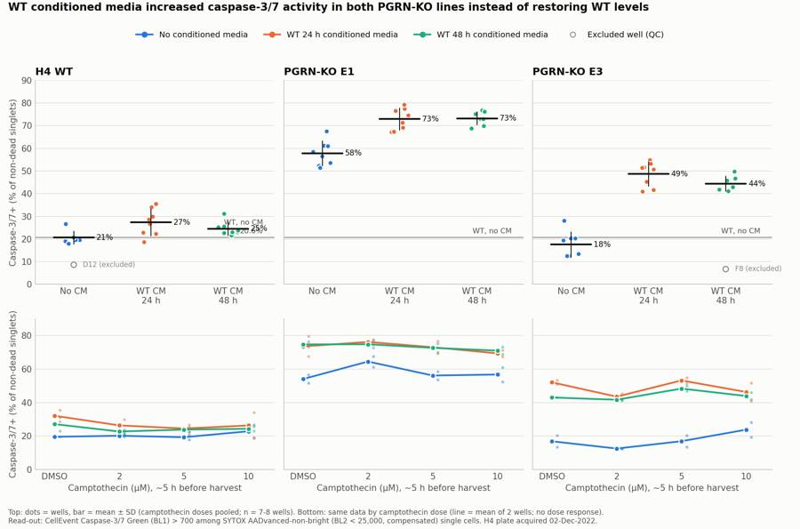
135
tool call · Bash
cd /task; python3 - <<'EOF'
p='/task/scripts/make_figure.py'; s=open(p).read()
s=s.replace(""" if j==0: ax.text(2.45,wt_ref+1.2,f'WT, no CM\\n{wt_ref:.1f}%',color=INK2,fontsize=8.5,ha='right',va='bottom')
else: ax.text(2.45,wt_ref+1.2,'WT, no CM',color=INK2,fontsize=8.5,ha='right',va='bottom')""",
""" if j>0: ax.text(2.55,wt_ref+1.2,f'WT no-CM mean ({wt_ref:.1f}%)',color=INK2,fontsize=8.5,ha='right',va='bottom')""")
open(p,'w').write(s)
EOF
python3 scripts/make_figure.py136
tool call · Read
{
"file_path": "/task/outputs/figure.png"
}137
tool output
(Bash completed with no output)
138
tool output
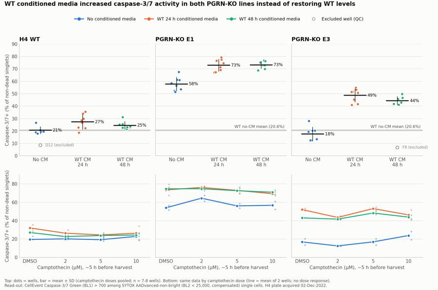
140
agent
The main figure is done. Next I'm making a supplementary gating-strategy image, then the report and answer.json.
141
tool call · Bash
cd /task; cat > scripts/gating_fig.py <<'EOF'
import sys; sys.path.insert(0,'/task/scripts')
from helpers import *
import pickle, matplotlib; matplotlib.use('Agg'); import matplotlib.pyplot as plt
d=pickle.load(open('/task/work/raw.pkl','rb'))
from build_gates import CASP_T, DEAD_T, SNEG_T
wells=[('G1','G1 unstained'),('G8','G8 SYTOX only (BL1 FMO)'),('G7','G7 CellEvent only (BL2 FMO)'),('D11','D11 WT no CM 2uM'),('E11','E11 E1 no CM 2uM'),('C3','C3 E3 WT-CM24 2uM')]
fig,axs=plt.subplots(3,6,figsize=(30,15))
for j,(w,t) in enumerate(wells):
df=d[w]; f=df['FSC-A'].values; s=df['SSC-A'].values; h=df['FSC-H'].values; m1,m2=gate_cs(df); b1,b2=comp(df)
a=axs[0,j]; a.hexbin(f/1e3,s/1e3,gridsize=150,bins='log',cmap='viridis',mincnt=1,extent=(0,1060,0,1060)); P=np.array(CELLS+[CELLS[0]])/1e3; a.plot(P[:,0],P[:,1],'r-',lw=2)
a.set_title(f'{t}\ncells {100*m1.mean():.1f}% of events',fontsize=14); a.set_xlabel('FSC-A (x1000)'); a.set_ylabel('SSC-A (x1000)')
a=axs[1,j]; a.hexbin(f[m1]/1e3,h[m1]/1e3,gridsize=150,bins='log',cmap='viridis',mincnt=1,extent=(100,1050,0,650)); P=np.array(SINGLETS+[SINGLETS[0]])/1e3; a.plot(P[:,0],P[:,1],'r-',lw=2)
a.set_title(f'singlets {100*m2.sum()/m1.sum():.1f}% of cells',fontsize=14); a.set_xlabel('FSC-A (x1000)'); a.set_ylabel('FSC-H (x1000)')
a=axs[2,j]; a.hexbin(lg(b1[m2]),lg(b2[m2]),gridsize=120,bins='log',cmap='viridis',mincnt=1,extent=(0,1,0,1))
a.axhline(lg(DEAD_T),color='r',lw=2); a.axhline(lg(SNEG_T),color='orange',lw=1.5,ls=':')
nd=b2[m2]<DEAD_T; a.plot([lg(CASP_T)]*2,[0,lg(DEAD_T)],'r-',lw=2)
a.set_title(f'non-dead {100*nd.mean():.1f}%; casp+ {100*(b1[m2][nd]>CASP_T).mean():.1f}% of non-dead',fontsize=14)
ticks=[0,1e2,1e3,1e4,1e5,1e6]; a.set_xticks(lg(ticks)); a.set_xticklabels(['0','1e2','1e3','1e4','1e5','1e6']); a.set_yticks(lg(ticks)); a.set_yticklabels(['0','1e2','1e3','1e4','1e5','1e6'])
a.set_xlabel('BL1-A comp: CellEvent caspase-3/7 (logicle)'); a.set_ylabel('BL2-A comp: SYTOX AADvanced (logicle)')
plt.suptitle('Gating strategy (gates.xml) on controls and example wells. Red = gates used for the read-out; dotted orange = strict SYTOX-negative sensitivity gate',fontsize=16)
plt.tight_layout(rect=(0,0,1,0.96)); plt.savefig('/task/outputs/gating_strategy.png',dpi=55)
EOF
python3 scripts/gating_fig.py142
tool call · Read
{
"file_path": "/task/outputs/gating_strategy.png"
}143
tool output (error)
Exit code 1
Traceback (most recent call last):
File "/task/scripts/gating_fig.py", line 15, in <module>
a.axhline(lg(DEAD_T),color='r',lw=2); a.axhline(lg(SNEG_T),color='orange',lw=1.5,ls=':')
^^^^^^^^^^
File "/task/scripts/helpers.py", line 7, in lg
def lg(x): return XF.apply(np.asarray(x,dtype=float))
^^^^^^^^^^^^^^^^^^^^^^^^^^^^^^^^^^^
File "/usr/local/lib/python3.12/site-packages/flowkit/_models/transforms/_transforms.py", line 316, in apply
return flowutils.transforms.logicle(
^^^^^^^^^^^^^^^^^^^^^^^^^^^^^
File "/usr/local/lib/python3.12/site-packages/flowutils/transforms.py", line 68, in logicle
channel_indices = range(data.shape[1])
~~~~~~~~~~^^^
IndexError: tuple index out of range144
tool output (error)
File does not exist. Note: your current working directory is /task.
145
tool call · Bash
cd /task; sed -i 's/def lg(x): return XF.apply(np.asarray(x,dtype=float))/def lg(x):\n a=np.asarray(x,dtype=float); return XF.apply(a.reshape(-1)).reshape(a.shape) if a.ndim>0 else float(XF.apply(a.reshape(1))[0])/' scripts/helpers.py; python3 scripts/gating_fig.py && echo ok
146
tool call · Read
{
"file_path": "/task/outputs/gating_strategy.png"
}147
tool output
ok
148
tool output
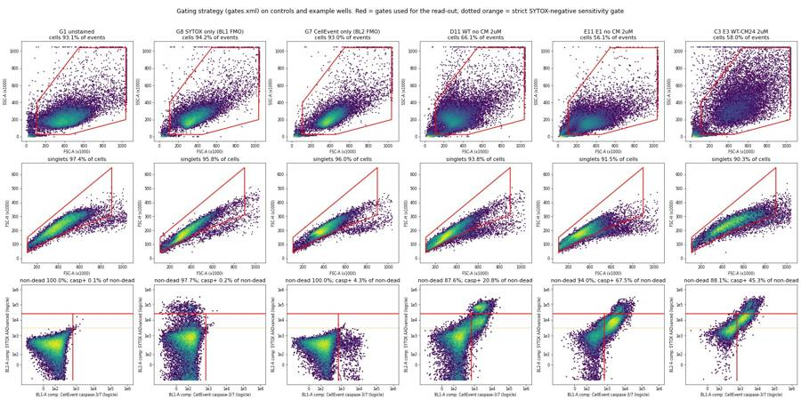
150
tool call · Bash
cd /task; python3 -c "
import sys; sys.path.insert(0,'/task/scripts')
from helpers import *
import pickle
d=pickle.load(open('/task/work/raw.pkl','rb'))
for w in ['G1','G8','G7']:
df=d[w]; m1,m2=gate_cs(df); b1,b2=comp(df)
print(w,'pct BL1c<=700: %.2f'%(100*(b1[m2]<=700).mean()),' pct BL2c<25000: %.3f'%(100*(b2[m2]<25000).mean()), ' pct BL2c<3000: %.2f'%(100*(b2[m2]<3000).mean()))
"
151
tool output
G1 pct BL1c<=700: 99.87 pct BL2c<25000: 100.000 pct BL2c<3000: 99.90 G8 pct BL1c<=700: 99.83 pct BL2c<25000: 97.727 pct BL2c<3000: 93.74 G7 pct BL1c<=700: 95.71 pct BL2c<25000: 100.000 pct BL2c<3000: 99.94
153
tool call · Bash
cd /task; cat > scripts/make_answer.py <<'EOF'
import pandas as pd, numpy as np, json
from scipy import stats
S=pd.read_csv('/task/outputs/condition_summary.csv').set_index('condition')
m=pd.read_csv('/task/work/wellmetrics.csv').set_index('well')
fl=pd.read_csv('/task/outputs/flags.csv')
def vals(c): return m.loc[S.loc[c,'wells'].split(';'),'casp_pct'].values
def comp(a,b,conf,note=''):
A,B=vals(a),vals(b); d=B.mean()-A.mean()
if len(A)>1 and len(B)>1:
va,vb=A.var(ddof=1)/len(A),B.var(ddof=1)/len(B); se=np.sqrt(va+vb)
df=se**4/(va**2/(len(A)-1)+vb**2/(len(B)-1)); ci=stats.t.ppf(.975,df)*se
p=stats.ttest_ind(B,A,equal_var=False).pvalue
mag=f"{d:+.1f} percentage points ({A.mean():.1f}% -> {B.mean():.1f}% caspase-3/7+ of non-dead singlets; 95% CI {d-ci:+.1f} to {d+ci:+.1f} points; {B.mean()/A.mean():.2f}-fold; Welch p={p:.1g}; n={len(A)} vs {len(B)} wells)"
sig = (d-ci>0) or (d+ci<0)
else:
mag=f"{d:+.1f} percentage points ({A.mean():.1f}% -> {B.mean():.1f}%; n={len(A)} vs {len(B)} wells)"; sig=abs(d)>10
direction = ('increase' if d>0 else 'decrease') if sig else 'no_clear_change'
return dict(comparison=note,a=a,b=b,direction=direction,magnitude=mag,confidence=conf)
C=[
comp('WT_noCM','E1_noCM','high','KO phenotype without conditioned media: E1 vs WT'),
comp('WT_noCM','E3_noCM','medium','KO phenotype without conditioned media: E3 vs WT'),
comp('E1_noCM','E1_CM24','high','Rescue test: E1 + WT 24 h CM vs E1 without CM'),
comp('E1_noCM','E1_CM48','high','Rescue test: E1 + WT 48 h CM vs E1 without CM'),
comp('E3_noCM','E3_CM24','high','Rescue test: E3 + WT 24 h CM vs E3 without CM'),
comp('E3_noCM','E3_CM48','high','Rescue test: E3 + WT 48 h CM vs E3 without CM'),
comp('WT_noCM','E1_CM24','high','Distance to WT level: E1 + WT 24 h CM vs WT without CM'),
comp('WT_noCM','E3_CM24','high','Distance to WT level: E3 + WT 24 h CM vs WT without CM'),
comp('WT_noCM','WT_CM24','medium','Specificity control: WT + WT 24 h CM vs WT without CM'),
comp('WT_noCM','WT_CM48','medium','Specificity control: WT + WT 48 h CM vs WT without CM'),
comp('E1_noCM_DMSO','E1_noCM_10uM','medium','Camptothecin challenge: E1 10 uM vs DMSO (no CM)'),
comp('WT_noCM_2uM','WT_noCM_10uM','low','Camptothecin challenge: WT 10 uM vs 2 uM (no CM; WT DMSO has n=1 after excluding D12)'),
]
C[-2]['magnitude']+= "; across all 9 line x CM groups, 10 uM minus DMSO averaged -0.9 points (range -5.8 to +6.9; one-sample t p=0.55); one-way ANOVA of dose on group-centred values p=0.80"
excl=sorted(fl[fl.decision=='exclude'].well.tolist())
ans={
"question":"Can WT progranulin-conditioned media (24 h or 48 h WT-conditioned media) bring caspase-3/7 activity in H4 PGRN-KO lines E1 and E3 back toward WT levels?",
"comparisons":C,
"overall_answer":("no: WT-conditioned media did not move either KO line toward WT. It raised caspase-3/7 activity in both: "
"E1 went from 57.8% to 72.9% (24 h CM) and 73.2% (48 h CM), and E3 from 17.6% to 48.7% and 44.4% caspase-3/7+ of non-dead singlets, against 20.6% for WT without CM. "
"The same media also raised WT (+6.7 and +3.9 points), so the effect looks like a non-specific spent-media effect, not progranulin rescue. "
"Only E1 had a baseline excess over WT (+37.1 points, 2.8-fold); E3 matched WT without CM (-3.1 points, not significant), so in E3 there was nothing to rescue."),
"assay_verdict":"needs_optimisation",
"next_action":"change_treatment_or_timing",
"next_change":{
"what":"Progranulin treatment and its matched control (the conditioned-media arm)",
"from":"Undiluted WT 24 h or 48 h conditioned media (stored at 4 C, progranulin content not measured), compared with no conditioned media",
"to":"WT-conditioned vs PGRN-KO-conditioned media made in parallel (same seeding, harvest time and storage; progranulin confirmed by ELISA), plus recombinant human progranulin in fresh complete media vs vehicle",
"why":"Conditioned media raised caspase-3/7+ in WT as well as KO cells (WT +3.9 to +6.7, E1 +15, E3 +27 to +31 points), so a non-specific spent-media effect hides any progranulin effect. Only a PGRN-free conditioned-media control or recombinant PGRN in fresh media can isolate progranulin."},
"excluded_wells":excl,
"caveats":[
"Camptothecin gave no dose response (2-10 uM vs DMSO: mean -0.9 points, ANOVA p=0.80). Its exposure was only about 5 h (added ~09:00 on 12-02; acquisition 14:33-15:32), so the challenge arm is uninformative.",
"The KO phenotype reproduced only in E1 (2.8-fold WT). E3 without CM was not above WT (17.6% vs 20.6%).",
"Wells G3/G4 (labelled E3) and G5/G6 (labelled E1) have each other's scatter signatures, so an E1/E3 swap is likely. All four were excluded, which leaves no usable untreated KO controls.",
"F8 (E3, 48 h CM, DMSO; 6.7% vs 41-55% in its group) and D12 (WT, no CM, DMSO; 8.6% vs 18-27%) are outliers with unusual scatter and were excluded. Including them does not change any conclusion.",
"Untreated row-G wells (no wash, media change or DMSO) had 3-5% caspase-3/7+, against >=18% in every row A-F well, including no-CM DMSO wells. The wash/media-change handling itself appears to activate caspases.",
"Wells are technical replicates on one plate from one experiment. P-values describe well-to-well variation, not biological reproducibility.",
"The conditioned-media assignment comes from the 12-02 highlight colours (cols 1-4 = 24 h, cols 5-8 = 48 h). The 11-30 map highlights rows A-C vs D-F instead, and the 11-28 48 h producer block included E1/E3 cells. The 24 h vs 48 h comparison is therefore uncertain, but the CM vs no-CM contrast (cols 1-8 vs 9-12) is the same under either map.",
"SYTOX AADvanced was read in BL2, where CellEvent Green spills 91%. Compensation came from the G7/G8 single-stain controls. Most of the caspase+ signal sits in a SYTOX-dim continuum, so the read-out includes SYTOX-dim cells and excludes only SYTOX-bright (>25,000) dead cells. Using a stri
… [601 more characters not shown]154
tool output
WT_noCM -> E1_noCM increase | +37.1 percentage points (20.6% -> 57.8% caspase-3/7+ of non-dead singlets; 95% CI +32.3 to +42.0 points; 2.80-fold; Welc WT_noCM -> E3_noCM no_clear_change | -3.1 percentage points (20.6% -> 17.6% caspase-3/7+ of non-dead singlets; 95% CI -8.0 to +1.9 points; 0.85-fold; Welch p E1_noCM -> E1_CM24 increase | +15.1 percentage points (57.8% -> 72.9% caspase-3/7+ of non-dead singlets; 95% CI +9.7 to +20.6 points; 1.26-fold; Welch E1_noCM -> E1_CM48 increase | +15.4 percentage points (57.8% -> 73.2% caspase-3/7+ of non-dead singlets; 95% CI +10.6 to +20.2 points; 1.27-fold; Welc E3_noCM -> E3_CM24 increase | +31.1 percentage points (17.6% -> 48.7% caspase-3/7+ of non-dead singlets; 95% CI +25.3 to +37.0 points; 2.77-fold; Welc E3_noCM -> E3_CM48 increase | +26.8 percentage points (17.6% -> 44.4% caspase-3/7+ of non-dead singlets; 95% CI +21.7 to +31.9 points; 2.52-fold; Welc WT_noCM -> E1_CM24 increase | +52.3 percentage points (20.6% -> 72.9% caspase-3/7+ of non-dead singlets; 95% CI +47.9 to +56.6 points; 3.53-fold; Welc WT_noCM -> E3_CM24 increase | +28.1 percentage points (20.6% -> 48.7% caspase-3/7+ of non-dead singlets; 95% CI +23.3 to +32.9 points; 2.36-fold; Welc WT_noCM -> WT_CM24 increase | +6.7 percentage points (20.6% -> 27.3% caspase-3/7+ of non-dead singlets; 95% CI +1.5 to +11.9 points; 1.32-fold; Welch WT_noCM -> WT_CM48 increase | +3.9 percentage points (20.6% -> 24.5% caspase-3/7+ of non-dead singlets; 95% CI +0.6 to +7.1 points; 1.19-fold; Welch p E1_noCM_DMSO -> E1_noCM_10uM no_clear_change | +2.7 percentage points (54.0% -> 56.7% caspase-3/7+ of non-dead singlets; 95% CI -24.9 to +30.2 points; 1.05-fold; Welch WT_noCM_2uM -> WT_noCM_10uM no_clear_change | +2.7 percentage points (20.2% -> 22.9% caspase-3/7+ of non-dead singlets; 95% CI -41.2 to +46.5 points; 1.13-fold; Welch
156
tool call · Write
{
"file_path": "/task/outputs/report.md",
"content": "# Caspase-3/7 conditioned-media plate, H4 WT / PGRN-KO E1, E3 (acquired 02-Dec-2022)\n\n## Question\nCan WT progranulin-conditioned media (CM) bring caspase-3/7 activity in H4 PGRN-KO lines E1 and E3 back toward WT levels? The notebook is EXP22004363. The plate tested WT-conditioned media harvested at 24 h or 48 h, with camptothecin at 0 (DMSO), 2, 5 or 10 \u00b5M as a challenge.\n\n## Methods\n**Data.** There are 80 Attune NxT FCS 3.1 files: wells A1\u2013F12 and G1\u2013G8. All were acquired 14:33\u201315:32 on 02-Dec-2022 at 500 \u00b5L/min, with 133\u2013142 \u00b5L and 11.6k\u201347.3k events per well. Voltages match the plan: FSC 20, SSC 290, BL1 225, BL2 350.\n\n**Channel assignment.** The labels stored in the FCS files are out of date: BL1-A is stored as \"AAV-GFP-GFP-A\". Following the plan's reagent list and cytometer settings, I used:\n- **BL1-A** = CellEvent Caspase-3/7 Green.\n- **BL2-A** = SYTOX AADvanced dead-cell stain.\n\n**Compensation.** The file spillover matrix is the identity. I estimated spillover from the single-stain controls:\n- CellEvent \u2192 BL2 = **0.91**, the median BL2/BL1 ratio of BL1-bright events in G7 (CellEvent only).\n- SYTOX \u2192 BL1 = **0.0005**, from G8 (SYTOX only).\n\nThe matrix is stored in `gates.xml` as `spill_ss`. Without it, caspase-bright live cells would land in the SYTOX gate.\n\n**Gating.** One FlowKit 1.2.3 strategy (`gates.xml`, GatingML 2.0) was applied unchanged to every file. `counts.csv` comes from `gate_sample` on the reloaded XML.\n\n| Population | Role | Parent | Gate |\n|---|---|---|---|\n| `cells` | cells | all_events | Polygon on FSC-A \u00d7 SSC-A. Removes debris (FSC-A < 110k, SSC-A < 25k) and events at the scatter ceiling (> 1,040,000). |\n| `singlets` | singlets | cells | Polygon on FSC-A \u00d7 FSC-H around the singlet diagonal. |\n| `nondead` | live | singlets | SYTOX AADvanced BL2-A (comp) < 25,000. This excludes the SYTOX-bright dead cluster (valley between SYTOX-dim and SYTOX-bright modes). |\n| `casp37_pos` | marker_positive | nondead | CellEvent BL1-A (comp) > 700. Above 99.83% of G8 (BL1 FMO) and 99.87% of G1 (unstained) singlets; at the trough between negative and positive modes. |\n| `dead` | other | singlets | BL2-A (comp) \u2265 25,000. |\n| `casp37_pos_all` | other | singlets | BL1-A (comp) > 700, ignoring SYTOX. |\n| `sytox_neg` | other | singlets | BL2-A (comp) < 3,000. This is a strict SYTOX-negative bound: 99.94% of G7 singlets fall below it. |\n| `casp37_pos_sytox_neg` | other | sytox_neg | BL1-A (comp) > 700. |\n\n`gating_strategy.png` shows these gates on the controls and on example wells.\n\n**Why the live gate excludes only SYTOX-bright cells.** In stained wells, caspase-positive cells form a continuous diagonal arm that is SYTOX-*dim* (BL2 roughly 3,000\u201320,000). This is like the 7-AAD-dim early-apoptotic population. A distinct SYTOX-bright dead cluster sits at about 100,000. G7, which has no SYTOX, has no such arm, so the arm is real dye uptake and not left-over spillover. A strict SYTOX-negative parent would cut through the apoptotic population, so it is kept as a sensitivity population (`sytox_neg`).\n\n**Read-out.** Per well: % caspase-3/7+ = 100 \u00d7 `casp37_pos` / `nondead`. No normalisation was applied.\n\n**Conditions.** Camptothecin had no effect at any dose (see Results). The primary conditions therefore pool the four camptothecin levels within each line \u00d7 CM group, giving 8 wells (two plate rows \u00d7 4 doses). `condition_summary.csv` also lists each dose separately (n = 2).\n\n**Statistics.** Differences are reported in percentage points with Welch 95% CIs. Wells are technical replicates from one plate.\n\n**QC.** I checked the following for every well and recorded the results in `flags.csv`:\n- Event-rate traces over time: no clogs or dry runs. The only rate drops are the last <0.5 s of each run, which is debris.\n- Scatter and fluorescence saturation.\n- Scatter \"fingerprints\" by cell line.\n- Behaviour of the staining controls.\n- Replicate consistency.\n\n## Results\n**QC findings (6 wells excluded).**\n- **G3/G4 (labelled E3) and G5/G6 (labelled E1) look swapped.**\n - G3/G4 have median cell SSC-A of 207k. All 24 E3 plate wells are 299k\u2013451k, and all 24 E1 wells are 169k\u2013220k.\n - G5/G6 have 326k\u2013330k with 4.7\u20136.9% FSC/SSC saturation, which is typical of E3. E1 wells have \u2264 1.1% saturation.\n - These untreated wells were moved from rows G/H (11-30 map) into row G (12-02 map). An E1/E3 swap at that step is the likely cause.\n - All four wells were excluded.\n- **F8 (E3, 48 h CM, DMSO) is an outlier.** It has 6.7% caspase+, against 43.0% in its replicate C8 and 40.9\u201354.8% in the other 15 E3 + CM wells. That is below every E3 no-CM well, and its scatter is atypical. It looks as if the CM was not added or the sample was mixed up. Excluded.\n- **D12 (WT, no CM, DMSO) is an outlier.** It has 8.6%, against 19.6% in its replicate A12 and 18.0\u201326.6% in the other 7 WT no-CM wells. Its cells gate also holds 79% of events versus 59\u201368% in those wells. Excluded. Including F8 and D12 changes no conclusion: WT no-CM becomes 19.1% and E3 48 h CM becomes 39.7%.\n- **Scatter saturation (kept with a note).** Nine E3 wells have \u2265 5% of events at the FSC-A/SSC-A ceiling. Those events are removed by the cells gate. They appear to be autofluorescent aggregates: in unstained G1, 42% of them are above the caspase threshold.\n- **Staining controls behaved as labelled.** Caspase+ was 0.13% in G1 (unstained) and 0.17% in G8 (SYTOX only); G7 (CellEvent only) had a 4.3% caspase+ tail and no SYTOX-bright events.\n\n**Camptothecin did not induce caspase-3/7.** Within each line \u00d7 CM group, 10 \u00b5M minus DMSO averaged \u22120.9 points (range \u22125.8 to +6.9; p = 0.55). A one-way ANOVA of dose on group-centred values gave p = 0.80. The SYTOX-bright dead fraction was also flat (\u22120.2
… [6,475 more characters not shown]157
tool output
File created successfully at: /task/outputs/report.md (file state is current in your context — no need to Read it back)
159
tool call · Bash
cd /task; python3 - <<'EOF'
p='/task/outputs/report.md'; s=open(p).read()
s=s.replace("Every row A–F well had ≥ 12.5%","Every included row A–F well had ≥ 12.5%")
open(p,'w').write(s)
EOF
grep -n "12.5%" outputs/report.md160
tool output
88:- **Handling effect.** Untreated row-G wells had only 3–5% caspase+ (WT G2: 3.1%). Every included row A–F well had ≥ 12.5%, including the no-CM DMSO wells (WT 19.6%). The wash and media-change steps appear to raise caspase activity on their own.
161
agent
All deliverables are written. I'm running a final check of every output against the spec.
162
tool call · Bash
cd /task; cat > scripts/validate.py <<'EOF'
import pandas as pd, json, flowkit as fk, numpy as np, re
O='/task/outputs/'
lay=pd.read_csv('/task/inputs/plate_layout.csv')
gs=fk.parse_gating_xml(O+'gates.xml'); print('gates reload OK:', gs.get_gate_ids())
c=pd.read_csv(O+'counts.csv',keep_default_na=False)
assert list(c.columns)==['file','well','population','role','parent','count','pct_of_parent']
pops=c.groupby('file').population.apply(lambda x: tuple(sorted(x)))
assert pops.nunique()==1 and len(pops)==80
assert set(c.role)<= {'cells','singlets','live','marker_positive','other'}
for r in ['cells','singlets','live','marker_positive']:
assert c[c.role==r].population.nunique()==1 and (c.role==r).sum()==80, r
ae=c[c.population=='all_events']; assert (ae.role=='other').all() and (ae.parent=='none').all() and (ae.pct_of_parent=='').all()
# pct check + gate names exist + parent consistency with gates
for f,g in c.groupby('file'):
cnt=dict(zip(g.population,g['count'].astype(int)))
for _,r in g[g.population!='all_events'].iterrows():
assert abs(float(r.pct_of_parent)-100*cnt[r.population]/cnt[r.parent])<1e-3
pid=gs.get_parent_gate_id(r.population) if hasattr(gs,'get_parent_gate_id') else None
# recompute counts on 3 files directly
for f in lay.file[[0,40,79]]:
rep=gs.gate_sample(fk.Sample('/task/inputs/raw/'+f)).report.set_index('gate_name')['count']
g=c[c.file==f].set_index('population')['count'].astype(int)
assert all(rep[k]==g[k] for k in rep.index), f
print('counts OK', c.shape)
fl=pd.read_csv(O+'flags.csv',keep_default_na=False)
assert list(fl.columns)==['file','well','issue_type','evidence','decision'] and len(fl)==80 and fl.file.nunique()==80
assert set(fl.issue_type)<= {'none','clog','ran_dry','too_few_events','saturation','bad_control','mislabel','other'}
assert set(fl.decision)<= {'keep','keep_with_note','exclude'}
assert (fl[fl.issue_type=='none'].decision=='keep').all()
nn=fl[fl.issue_type!='none']; assert all(re.search(r'\d',e) for e in nn.evidence)
print('flags OK', fl.issue_type.value_counts().to_dict())
s=pd.read_csv(O+'condition_summary.csv',keep_default_na=False)
assert list(s.columns)==['condition','wells','n_wells_used','mean','sd','metric_definition','normalisation_applied']
excl=set(fl[fl.decision=='exclude'].well)
for _,r in s.iterrows():
ws=r.wells.split(';'); assert len(ws)==int(r.n_wells_used); assert not (set(ws)&excl)
if int(r.n_wells_used)==1: assert r.sd==''
print('summary OK', len(s))
a=json.load(open(O+'answer.json'))
conds=set(s.condition)
for k in ['question','comparisons','overall_answer','assay_verdict','next_action','next_change','excluded_wells','caveats']: assert k in a
for cmp in a['comparisons']:
assert cmp['a'] in conds and cmp['b'] in conds and cmp['direction'] in ('increase','decrease','no_clear_change') and cmp['confidence'] in ('high','medium','low')
assert re.search(r'\d',cmp['magnitude'])
assert a['overall_answer'].split(':')[0] in ('yes','partial','no')
assert a['assay_verdict'] in ('fit_for_purpose','needs_optimisation','not_fit_for_purpose')
assert a['next_action'] in ('proceed_as_planned','repeat_unchanged','repeat_with_change','optimise_reagent_or_setting','change_treatment_or_timing','switch_assay','stop')
assert set(a['next_change'])=={'what','from','to','why'}
assert set(a['excluded_wells'])==excl
print('answer OK; excluded', sorted(excl))
rep=open(O+'report.md').read()
hs=[h for h in re.findall(r'^## (.+)$',rep,flags=re.M)]
print('report headings', hs)
assert hs==['Question','Methods','Results','Conclusion','Caveats','Recommendation']
EOF
python3 scripts/validate.py; ls -la outputs163
tool output
gates reload OK: [('cells', ('root',)), ('singlets', ('root', 'cells')), ('nondead', ('root', 'cells', 'singlets')), ('casp37_pos', ('root', 'cells', 'singlets', 'nondead')), ('dead', ('root', 'cells', 'singlets')), ('casp37_pos_all', ('root', 'cells', 'singlets')), ('sytox_neg', ('root', 'cells', 'singlets')), ('casp37_pos_sytox_neg', ('root', 'cells', 'singlets', 'sytox_neg'))]
counts OK (720, 7)
flags OK {'none': 65, 'saturation': 9, 'mislabel': 4, 'other': 2}
summary OK 49
answer OK; excluded ['D12', 'F8', 'G3', 'G4', 'G5', 'G6']
report headings ['Question', 'Methods', 'Results', 'Conclusion', 'Caveats', 'Recommendation']
total 1156
drwxr-xr-x 2 root root 4096 Nov 10 17:24 .
drwxr-xr-x 6 root root 4096 Nov 10 17:09 ..
-rw-r--r-- 1 root root 8098 Nov 10 17:23 answer.json
-rw-r--r-- 1 root root 19298 Nov 10 17:21 condition_summary.csv
-rw-r--r-- 1 root root 59951 Nov 10 17:18 counts.csv
-rw-r--r-- 1 root root 216782 Nov 10 17:21 figure.png
-rw-r--r-- 1 root root 10743 Nov 10 17:21 flags.csv
-rw-r--r-- 1 root root 5229 Nov 10 17:18 gates.xml
-rw-r--r-- 1 root root 834577 Nov 10 17:22 gating_strategy.png
-rw-r--r-- 1 root root 12053 Nov 10 17:24 report.md165
agent
**Answer: no.** WT-conditioned media did not bring caspase-3/7 activity in E1 or E3 back toward WT; it raised it in both lines. The media also raised WT activity slightly, so this looks like a non-specific effect of the spent media, not a progranulin effect. All seven deliverables are in `/task/outputs/` and pass a check against the spec; `gates.xml` reloads, and the counts match FlowKit's own gating exactly.
**Read-out:** % caspase-3/7-positive among non-dead single cells, with the four camptothecin doses pooled (n = 7–8 wells each):
| Line | No conditioned media | WT 24 h media | WT 48 h media |
|---|---|---|---|
| WT | 20.6% | 27.3% | 24.5% |
| E1 | 57.8% | 72.9% | 73.2% |
| E3 | 17.6% | 48.7% | 44.4% |
- **Baseline:** only E1 had more caspase activity than WT without conditioned media (+37 points, 2.8-fold). E3 was no different from WT (−3 points), so there was nothing to rescue in E3.
- **Effect of the media:** E1 rose by about 15 points and E3 by 27–31 points. WT rose by 4–7 points, and the dead fraction rose in both KO lines.
- **Camptothecin did nothing at any dose** (p = 0.80). It was only on the cells for about 5 h before harvest, assuming it was added at 09:00 as scheduled.
- **Robustness:** the conclusions hold under other live-gate definitions, other caspase thresholds, DMSO wells only, and with the excluded wells put back.
**Problems I found in the data:**
- **Channel labels:** the files call BL1 "AAV-GFP"; I treated BL1 as the caspase dye and BL2 as the dead-cell stain, as the plan states. The caspase dye spills about 91% into BL2, so I built a compensation matrix from the single-stain wells (G7, G8).
- **Six wells excluded:**
- G3/G4 (labelled E3) and G5/G6 (labelled E1) have each other's scatter profiles. They were most likely swapped when the untreated wells were moved into row G.
- F8 (6.7% vs 41–55% in its group) and D12 (8.6% vs 18–27%) are outliers with unusual scatter.
- **Untreated wells are much lower:** row-G wells, which had no wash, media change or DMSO, were at 3–5%, against at least 12.5% in every kept treated well. The handling itself seems to raise caspase activity.
- **Conditioned-media labels are uncertain:** the 11-30 and 12-02 plate maps disagree on which wells got 24 h vs 48 h media. Conditioned vs no media is the same under either map, so the main conclusion stands.
- **Scatter saturation:** 5–9% of events in E3 wells hit the scatter ceiling. Those events were excluded and appear to be clumps.
**One gating choice to know about:** most caspase-positive cells show dim dead-cell-stain uptake, so the "live" gate excludes only the brightly stained dead cells. A strict stain-negative gate is in `counts.csv` as a sensitivity check and gives the same directions.
**Verdict and recommendation:** the assay needs optimisation (`needs_optimisation`), and the next step is to change the treatment design (`change_treatment_or_timing`).
- **Main change:** compare WT-conditioned with KO-conditioned media made in parallel, confirm progranulin in the media by ELISA, and add recombinant progranulin in fresh media as a direct arm.
- Leave camptothecin on for 16–24 h.
- Process the untreated controls alongside the treated wells.
- Lower the side-scatter voltage so E3 cells stay on scale.
- Read the dead-cell stain in BL3 if the instrument allows.
Wells are technical replicates on one plate, so the confidence intervals reflect well-to-well variation, not reproducibility between experiments.
I also added `gating_strategy.png`, showing the gates on the controls and example wells.
Files are in `/task/outputs/`:
- report.md
- figure.png
- answer.json
- condition_summary.csv
- counts.csv
- flags.csv
- gates.xml
- gating_strategy.png
final result
**Answer: no.** WT-conditioned media did not bring caspase-3/7 activity in E1 or E3 back toward WT; it raised it in both lines. The media also raised WT activity slightly, so this looks like a non-specific effect of the spent media, not a progranulin effect. All seven deliverables are in `/task/outputs/` and pass a check against the spec; `gates.xml` reloads, and the counts match FlowKit's own gating exactly. **Read-out:** % caspase-3/7-positive among non-dead single cells, with the four camptothecin doses pooled (n = 7–8 wells each): | Line | No conditioned media | WT 24 h media | WT 48 h media | |---|---|---|---| | WT | 20.6% | 27.3% | 24.5% | | E1 | 57.8% | 72.9% | 73.2% | | E3 | 17.6% | 48.7% | 44.4% | - **Baseline:** only E1 had more caspase activity than WT without conditioned media (+37 points, 2.8-fold). E3 was no different from WT (−3 points), so there was nothing to rescue in E3. - **Effect of the media:** E1 rose by about 15 points and E3 by 27–31 points. WT rose by 4–7 points, and the dead fraction rose in both KO lines. - **Camptothecin did nothing at any dose** (p = 0.80). It was only on the cells for about 5 h before harvest, assuming it was added at 09:00 as scheduled. - **Robustness:** the conclusions hold under other live-gate definitions, other caspase thresholds, DMSO wells only, and with the excluded wells put back. **Problems I found in the data:** - **Channel labels:** the files call BL1 "AAV-GFP"; I treated BL1 as the caspase dye and BL2 as the dead-cell stain, as the plan states. The caspase dye spills about 91% into BL2, so I built a compensation matrix from the single-stain wells (G7, G8). - **Six wells excluded:** - G3/G4 (labelled E3) and G5/G6 (labelled E1) have each other's scatter profiles. They were most likely swapped when the untreated wells were moved into row G. - F8 (6.7% vs 41–55% in its group) and D12 (8.6% vs 18–27%) are outliers with unusual scatter. - **Untreated wells are much lower:** row-G wells, which had no wash, media change or DMSO, were at 3–5%, against at least 12.5% in every kept treated well. The handling itself seems to raise caspase activity. - **Conditioned-media labels are uncertain:** the 11-30 and 12-02 plate maps disagree on which wells got 24 h vs 48 h media. Conditioned vs no media is the same under either map, so the main conclusion stands. - **Scatter saturation:** 5–9% of events in E3 wells hit the scatter ceiling. Those events were excluded and appear to be clumps. **One gating choice to know about:** most caspase-positive cells show dim dead-cell-stain uptake, so the "live" gate excludes only the brightly stained dead cells. A strict stain-negative gate is in `counts.csv` as a sensitivity check and gives the same directions. **Verdict and recommendation:** the assay needs optimisation (`needs_optimisation`), and the next step is to change the treatment design (`change_treatment_or_timing`). - **Main change:** compare WT-conditioned with KO-conditioned media made in parallel, confirm progranulin in the media by ELISA, and add recombinant progranulin in fresh media as a direct arm. - Leave camptothecin on for 16–24 h. - Process the untreated controls alongside the treated wells. - Lower the side-scatter voltage so E3 cells stay on scale. - Read the dead-cell stain in BL3 if the instrument allows. Wells are technical replicates on one plate, so the confidence intervals reflect well-to-well variation, not reproducibility between experiments. I also added `gating_strategy.png`, showing the gates on the controls and example wells. Files are in `/task/outputs/`: - report.md - figure.png - answer.json - condition_summary.csv - counts.csv - flags.csv - gates.xml - gating_strategy.png